Español e inglés. Este manual escribe los botones, menús y títulos tal como aparecen en pantalla con la interfaz en español, por ejemplo Preparar matriz y diagnosticar →.
Cómo citar el programa
Barrera-Guzmán, L. Á. (2026). PCAPro: an offline, browser-based platform for guided principal component analysis (versión 1.1.0) [software]. Zenodo. https://doi.org/10.5281/zenodo.22649709
Cómo citar este manual
Barrera-Guzmán, L. Á. (2026). PCAPro. Manual de usuario (1.ª ed.).
El identificador de la cita del programa es el DOI de concepto: siempre lleva a la versión más reciente, así que todas las citas se acumulan en un mismo registro. La misma referencia aparece en el botón Cómo citar del Bloque 1, en el apartado 6.4 y en el informe automático.
iPrivacidad
PCAPro funciona por completo dentro de tu navegador. Los archivos que abres se leen en tu computadora y nunca se envían a ningún servidor, ni siquiera cuando usas la versión en línea. Puedes analizar datos inéditos o sujetos a acuerdos de confidencialidad sin riesgo de que salgan de tu equipo.
Las ilustraciones, diagramas y capturas de pantalla de este manual son originales y se generaron con el propio programa o con código escrito para el manual. Los datos de iris son los de Fisher (1936), medidos por Anderson; los demás conjuntos de ejemplo son simulaciones creadas para enseñar y se describen en la sección 1.7.
El manual sigue el mismo orden que la app: la portada y siete bloques que se recorren de izquierda a derecha en la barra superior. Cada capítulo explica un bloque, empieza con la teoría justa para decidir bien, describe lo que calcula y termina con un ejemplo paso a paso con los datos que acompañan al programa.
Un color para cada bloque
El color del bloque aparece en la apertura de su capítulo, en los números de sección, en los recuadros de teoría, en la pestaña del borde de la hoja y en el índice. Así sabes de un vistazo en qué parte de la app estás.
Bloque
Nombre en la app
Qué hace
I
Inicio
Portada, recorrido guiado y referencia para citar
1
Datos y supuestos
Carga, papel de las variables, preparación, diagnóstico y elección del método
2
Extracción
Valores propios, varianza explicada y cuántos ejes retener
3
Rotación
Siete rotaciones y la calidad de la estructura simple (solo ACP)
4
Gráficos factoriales
Círculo de correlaciones, mapa de individuos, biplot, cos² y contribuciones
5
Interpretación
Nombrar ejes, valores test, comparación de grupos y borrador de resultados
5b
Agrupamiento
Agrupamiento jerárquico sobre los ejes (HCPC), opcional
6
Informe
Informe HTML, PDF por impresión y paquete ZIP
Tipos de recuadros
iNota
Aclaraciones y consejos prácticos que ahorran tiempo.
!Importante
Lo que puede cambiar tus conclusiones si se pasa por alto.
θTeoría en breve
La idea detrás de un análisis, sin fórmulas innecesarias.
▸Ejemplo
Un caso con los datos que acompañan al programa.
✓Regla de decisión
Si el valor cae en este intervalo…
entonces esta es la lectura recomendada.
Son guías para interpretar, no leyes: el conocimiento de tu sistema de estudio siempre manda.
12×
Dato clave
Una cifra o hecho que conviene recordar; por ejemplo, el aumento máximo al que exporta las figuras, unos 900 ppp.
Convenciones de escritura
Así se escribe
Significa
Extraer componentes →
Un botón, casilla, menú o título de la app, tal como aparece en pantalla.
Bloque 4›4.3 · Círculo de correlaciones
Una ruta: ve al primer lugar y luego al segundo.
practica1_suelos.csv
Un nombre de archivo, columna o valor que se escribe tal cual.
λ, cos², CP1, KMO
Cantidades y abreviaturas; su significado se explica la primera vez que aparecen y se reúne en el glosario (apéndice C).
●◐—
Disponible · disponible en parte o como opción · no aplica.
1
Capítulo uno
Introducción a PCAPro
Qué es el programa, qué preguntas responde, qué datos acepta y cómo se recorre de principio a fin. Incluye las ideas del análisis factorial que necesitas para aprovechar el resto del manual.
1.1¿Qué es PCAPro?
1.2Preguntas que responde
1.3Cinco ideas clave
1.4Los cinco métodos y los datos que aceptan
1.5Qué necesitas y cómo abrirlo
1.6Recorrido por la interfaz
1.7Los conjuntos de datos de ejemplo
1.8Flujo de trabajo recomendado
1.9Pruebas, umbrales y recomendaciones
1.1¿Qué es PCAPro?
PCAPro es una plataforma para hacer un análisis de componentes principales completo y bien fundamentado: recibe la tabla que sale del campo o del laboratorio, comprueba si admite el análisis, ayuda a decidir cuántos ejes conservar, dibuja los mapas factoriales, los interpreta y entrega un informe listo para acompañar un artículo.
El cálculo de un ACP nunca es la parte difícil: cualquier programa estadístico devuelve los valores propios. Lo que decide si el análisis se sostiene son las decisiones que lo rodean —cómo tratar los datos faltantes, si estandarizar, cuántos componentes retener, qué cargas interpretar—, y ahí el software habitual calcula la cifra y se detiene. PCAPro pone el argumento metodológico junto al número que lo justifica, en el momento en que hay que decidir, y deja la decisión en tus manos.
Además del ACP, el mismo recorrido sirve para otros cuatro métodos factoriales —el análisis de correspondencias simple y múltiple, el análisis factorial de datos mixtos y el análisis factorial múltiple— y, sobre cualquiera de ellos, para agrupar a los individuos. Todo ocurre dentro del navegador de internet: no hay que instalar nada, no se necesita saber programar y los datos no salen de la computadora.
1234567
Figura 1.1. La portada de la app, el paso Inicio.
1Barra de pasos. Los bloques en gris se activan al terminar el anterior.
2Selector de idioma: español o inglés.
3Tres figuras de muestra de lo que produce un ACP.
4Empezar con mis datos → lleva al Bloque 1 para cargar un archivo.
5Ver el ejemplo de iris carga el ejemplo y abre el Bloque 1.
6Leer la teoría abre el marco teórico del Bloque 1.
7Garantías: el cálculo es local y el programa es libre.
0
Instalaciones
Se abre con doble clic en index.html o desde su dirección en internet. No requiere permisos de administrador.
5
Métodos factoriales
ACP, AC, ACM, AFDM y AFM, con el agrupamiento sobre los ejes disponible para los cinco.
Qué hace, en una tabla
Etapa
Lo que obtienes
Bloque
Entrada de datos
Lectura de hojas de cálculo (.xlsx, .xls, .csv, .tsv, .txt) con detección del separador y del decimal; tipo y papel de cada columna: activa, suplementaria, cualitativa, identificador o excluida.
1
Preparación
Tratamiento de faltantes, cuatro transformaciones y siete formas de escalar, con la elección entre matriz de correlaciones y de covarianzas.
1
Diagnóstico
Prueba de esfericidad de Bartlett, KMO con MSA por variable, determinante, multicolinealidad, atípicos de Mahalanobis, asimetría y razón n:p, con una calificación de la A a la D y recomendaciones escritas.
1
Elección del método
Un recomendador que lee los tipos de variables y la estructura de los datos y dice qué método aplica, cuál es posible y cuál no.
1
Extracción
Valores propios con su error estándar, varianza explicada y ocho criterios de retención lado a lado con una recomendación por consenso.
2
Rotación
Varimax, quartimax, equamax, parsimax, promax, oblimin directo y quartimin, con matrices de patrón y de estructura.
3
Mapas
Círculo de correlaciones, mapa de individuos, biplot, cos², contribuciones, elipses y elementos suplementarios; mapas propios de cada método.
4
Interpretación
Descripción de cada eje, valores test de las categorías, comparación de grupos, individuos característicos, calidad del ajuste y un borrador redactado con tus cifras.
5
Agrupamiento
Ward sobre las coordenadas factoriales, tres reglas para el número de grupos, consolidación por k-medias, dendrograma y descripción de cada grupo.
5b
Publicación
Figuras editables exportables a SVG, PNG, JPG o WEBP hasta 12×; informe HTML, PDF por impresión y paquete ZIP con figuras, tablas y la referencia para citar.
6
¿Para quién es?
Para quien mide varias características en las mismas plantas, parcelas, suelos, accesiones o sitios y necesita resumirlas sin perder rigor: estudiantes de licenciatura y posgrado que se inician en la estadística multivariada, investigadores en agronomía, ecología, biología y ciencias del suelo que tienen que justificar cada decisión ante un revisor, y docentes que quieren mostrar en clase qué hace un ACP y dónde suele fallar. Cada resultado viene acompañado de una lectura en lenguaje llano y de la teoría que lo sostiene, de modo que la app funciona también como herramienta de enseñanza.
1.2Preguntas que responde
Un buen análisis empieza con una pregunta. La tabla siguiente traduce las preguntas más frecuentes al análisis que las responde y al bloque donde se encuentra.
Tabla 1.1. De la pregunta al análisis.
Pregunta
Análisis que la responde
Bloque
¿Mis datos admiten un análisis factorial?
Bartlett, KMO y MSA por variable, determinante y calificación de la A a la D
1
¿Qué método corresponde a mis variables?
El recomendador de la tarjeta 1.9 · Qué método corresponde
1
¿Debo estandarizar mis variables?
Perfil de escalas, las siete opciones de escalado y la elección correlaciones o covarianzas
1
¿Hay variables redundantes o individuos atípicos?
Pares casi colineales, determinante y distancia de Mahalanobis
1
¿Cuántos componentes conservo?
Ocho criterios de retención y su consenso
2
¿Puedo hacer los ejes más fáciles de leer?
Rotaciones ortogonales y oblicuas, y calidad de la estructura simple
3
¿Qué variables definen cada eje?
Cargas, cos², contribuciones y círculo de correlaciones
45
¿Cómo se ordenan mis individuos, tratamientos o sitios?
Mapa de individuos, biplot y elipses por grupo
4
¿Qué categorías caracterizan un eje?
Valores test de las categorías
5
¿Mis grupos difieren sobre los componentes?
ANOVA y Kruskal–Wallis por componente, con su advertencia de circularidad
5
¿Qué asociaciones sostiene una tabla de frecuencias?
Análisis de correspondencias con residuos y contribuciones a la χ²
24
¿Cómo se relacionan las respuestas de una encuesta?
Análisis de correspondencias múltiple
245
¿Mis bloques de variables —suelo, clima, planta— cuentan la misma historia?
Análisis factorial múltiple: coeficientes RV y puntos parciales
24
¿Mis individuos forman grupos naturales?
Agrupamiento jerárquico sobre los ejes y dendrograma
5b
¿Cómo lo reporto en un artículo?
Informe, paquete ZIP y párrafo de métodos con la cita
6
1.3Cinco ideas clave del análisis factorial
No necesitas un curso previo para usar la app, pero estas cinco ideas aparecen en todos los capítulos. Léelas una vez y regresa a ellas cuando lo necesites.
1Individuos, variables y la tabla de datos
Todo análisis factorial parte de una tabla. Cada fila es un individuo —una planta, una parcela, una muestra de suelo, una accesión— y cada columna es una variable medida en todos ellos. Las variables activas construyen los ejes; las suplementarias no intervienen en el cálculo, pero se proyectan después sobre los mapas para ayudar a leerlos. Un factor de diseño, como el tratamiento o el sitio, suele ir como suplementario.
2La correlación: la redundancia que se aprovecha
Cuando dos variables suben y bajan juntas, cuentan en parte la misma historia. El largo y el ancho de una hoja, por ejemplo, reflejan ambos el tamaño. El coeficiente de correlación r, entre −1 y 1, mide esa coincidencia. Un ACP solo tiene algo que resumir si las variables están correlacionadas: con variables independientes, cada una es su propio eje y no hay nada que ganar.
3Los componentes: nuevos ejes de máxima varianza
Un componente principal es una combinación de las variables originales orientada en la dirección en que los individuos más se dispersan. El primero (CP1) recoge la mayor varianza posible; el segundo (CP2), la mayor que queda, perpendicular al primero; y así sucesivamente. La varianza que captura cada componente es su valor propio, λ.
Figura 1.2. Qué hace un ACP. Con dos variables estandarizadas y correlacionadas, la nube de individuos se alarga en una dirección: esa es CP1. Su valor propio es λ₁ = 1 + r = 1.80, el 90 % de la varianza total (que vale 2, una por variable); CP2 recoge el 10 % restante. La puntuación de un individuo es su posición sobre el eje, la sombra que proyecta.
4Cargas, cos² y contribuciones: a qué hacer caso
Tres cantidades evitan interpretar de más. La carga es la correlación entre una variable y un eje: dice qué variables lo definen y en qué sentido. El cos² mide qué tan bien representado está un punto —variable o individuo— en un eje o en un plano: un punto con cos² bajo aparece cerca del centro del mapa por mala representación, no por ser promedio. La contribución dice cuánto pesó cada elemento en construir el eje. Un punto lejos del centro con cos² bajo engaña; uno con contribución alta manda.
Tabla 1.2. Las cantidades que verás en todos los bloques.
Cantidad
Qué mide
Rango
Cómo se lee
Valor propio λ
Varianza que captura un eje
0 a p
Con correlaciones, λ > 1 significa que el eje resume más que una variable sola.
% de varianza
Parte de la información total que recoge un eje
0 a 100 %
El acumulado dice cuánto conservas si te quedas con k ejes.
Carga
Correlación entre variable y eje
−1 a 1
|carga| ≥ 0.40 es el umbral habitual para interpretar; el signo indica el lado del eje.
Comunalidad
Varianza de una variable recogida por los ejes retenidos
0 a 1
Por debajo de 0.50 la variable está mal representada.
cos²
Calidad de representación de un punto
0 a 1
Cuanto más cerca de 1, más fiel es su posición en el mapa.
Contribución
Peso de un elemento en la construcción del eje
0 a 100 %
Los que superan la contribución media (100/p para variables) son los que definen el eje.
Puntuación
Posición de un individuo sobre un eje
sin límite, media 0
Individuos con puntuaciones parecidas tienen perfiles parecidos.
5Estandarizar decide el resultado
El ACP busca varianza, y la varianza depende de las unidades. Si una variable está en milímetros cúbicos y otra es un pH, la primera tiene una varianza millones de veces mayor y se queda sola con el primer componente, aunque no sea la más importante. Estandarizar —restar la media y dividir entre la desviación estándar— da a todas la misma varianza, 1, y equivale a trabajar con la matriz de correlaciones. Sin estandarizar se trabaja con la matriz de covarianzas, que solo tiene sentido cuando todas las variables comparten unidad y escala.
▸Ejemplo numérico · la figura 1.2 en cifras
Dos variables estandarizadas tienen varianza 1 cada una; la varianza total es 2. Con correlación r = 0.80, los valores propios de su matriz de correlaciones son 1 + r = 1.80 y 1 − r = 0.20: el primer componente conserva el 90 % de la información. La carga de cada variable en CP1 es √(1.80/2) = 0.949, así que su cos² en ese eje es 0.949² = 0.90. Con r = 0.10 los valores propios serían 1.10 y 0.90, y CP1 apenas resumiría el 55 %: las variables casi no comparten nada y el ACP tiene poco que ofrecer.
1.4Los cinco métodos y los datos que aceptan
El tipo de las variables activas decide el método. Los cinco comparten la misma lógica —encontrar unos pocos ejes que resuman una tabla—, pero cada uno está pensado para una clase de datos. PCAPro los resuelve con un mismo núcleo de cálculo, por eso comparten los mapas, la interpretación, el agrupamiento y el informe.
Figura 1.3. Cinco formas de tabla y el método que corresponde a cada una. En la parte baja de cada tarjeta, un caso típico en agronomía o biología. Sobre cualquiera de los cinco se puede agrupar después a los individuos (Bloque 5b).
Tabla 1.3. Qué distingue a cada método.
Método
Variables activas
Qué obtienes que no da otro
Cuidado con
ACP
Solo cuantitativas
Ocho criterios de retención, rotación, cargas y comunalidades, calidad del ajuste con la matriz reproducida.
Unidades dispares sin estandarizar; atípicos.
AC
Dos cualitativas, cruzadas en una tabla de frecuencias
La χ² de independencia, los residuos de cada celda y un mapa simétrico de filas y columnas.
Celdas con frecuencia esperada menor que 5.
ACM
Varias cualitativas
Mapa de categorías, v de Cramér entre variables y porcentajes corregidos de Benzécri y Greenacre.
Los porcentajes crudos, sesgados a la baja; categorías raras.
AFDM
Cuantitativas y cualitativas juntas
Un mapa de variables donde r² y η² se comparan en la misma escala.
Declarar como activa un factor de diseño.
AFM
Variables agrupadas en bloques
Equilibrio entre bloques, coeficientes RV y puntos parciales: cómo ve cada bloque a cada individuo.
Bloques de una sola variable.
No hace falta decidirlo a ciegas. Al terminar el diagnóstico, el Bloque 1 muestra la tarjeta 1.9 · Qué método corresponde, que lee tus datos y califica cada método como recomendado, posible o no aplica, con la razón y las cifras que la motivan. El capítulo 3 la explica en detalle.
!Importante · factor de diseño o característica
Una variable cualitativa puede jugar dos papeles muy distintos. Si es un factor de diseño —el tratamiento, el bloque, el sitio de muestreo—, no debe construir los ejes: va como suplementaria, el método es el ACP y el factor sirve para colorear el mapa y comparar grupos. Si es una característica del individuo que quieres dentro de la estructura —el color de la flor, el hábito de crecimiento—, entra como activa y el método es el AFDM. La app no puede adivinar la diferencia; tú sí.
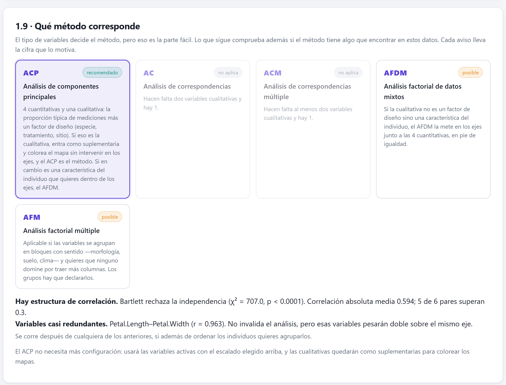
123456
Figura 1.4. El recomendador con los datos de iris: cuatro medidas cuantitativas y una cualitativa, la especie.
1El ACP, recomendado: la especie entra como suplementaria y colorea los mapas.
2El AC y el ACM no aplican: hace falta más de una cualitativa.
3El AFDM y el AFM, posibles, con la condición que los justificaría.
4Avisos con la cifra que los motiva: Bartlett, χ² = 707.0, y un par casi redundante, r = 0.963.
5El agrupamiento se ofrece después de cualquier método.
6La configuración que pide el método elegido.
1.5Qué necesitas y cómo abrir PCAPro
Requisitos
Una computadora con un navegador actual: Chrome, Edge, Firefox o Safari.
Pantalla de al menos 1280 píxeles de ancho; la app se adapta a pantallas menores, pero las tablas y figuras se aprovechan mejor en una grande.
No se necesita instalación ni permisos de administrador.
Conexión a internet solo en dos casos: para usar la versión en línea y para leer archivos .xlsx la primera vez, porque el lector de hojas de Excel se descarga al abrir la app. Los archivos .csv se leen siempre sin conexión.
Contenido de la carpeta
index.html
La app. Ábrela con doble clic.
servidor.ps1
Arranque opcional con servidor local.
datos/
Los archivos de ejemplo y de práctica.
js/, css/
El código del programa.
curso/
Material del taller de ACP.
tests/, lib/
Verificación de los cálculos.
Tres maneras de abrirlo
Tabla 1.4. Formas de abrir PCAPro y en qué se diferencian.
Forma
Cómo
Ten en cuenta
Doble clic
Copia la carpeta PCAPro completa a tu computadora y haz doble clic en index.html.
Todo funciona salvo el botón Ejemplo real: iris (150 × 4): el navegador no deja leer archivos de la carpeta por su cuenta. Carga datos/iris.csv con el selector de archivos.
Servidor local
Clic derecho en servidor.ps1 › Ejecutar con PowerShell, y abre http://localhost:8790 en el navegador.
Funciona todo, incluidos los ejemplos. El servidor está en tu propia computadora: nada sale a internet.
En línea
Abre luisangelbg.github.io/PCAPro/ en el navegador.
Siempre la versión más reciente. Los cálculos siguen ocurriendo en tu equipo.
Abre la app por cualquiera de las tres vías. Verás la portada de la figura 1.1.
Elige el idioma en el selector de la esquina superior derecha, si no aparece ya en español.
PulsaEmpezar con mis datos → para cargar un archivo, o Ver el ejemplo de iris para practicar.
iNota · lo que la app recuerda
El navegador guarda solo el idioma elegido. Los datos y los resultados viven mientras la pestaña está abierta: si recargas la página, el análisis empieza de cero. Por eso conviene descargar el informe y el paquete ZIP del Bloque 6 antes de cerrar. Tus archivos originales nunca se modifican.
1.6Recorrido por la interfaz
Todos los bloques comparten la misma organización, así que basta aprenderla una vez. Arriba está la barra de pasos; debajo, el contenido del bloque activo, que siempre sigue el mismo orden.
Parte
Qué contiene
Cómo la reconoces
Teoría del bloque
Temas desplegables que explican qué se calcula y cómo decidir. En el Bloque 1 está el marco teórico completo, con trece temas.
Tarjeta con filete violeta a la izquierda; cada tema se abre con un clic.
Tarjetas numeradas
Los pasos del bloque en orden: ajustes, resultados, figuras y descargas.
Títulos como 2.2 · Valores propios y varianza explicada.
Botón principal
Ejecuta el cálculo del bloque con los ajustes elegidos.
Botón violeta con flecha, como Extraer componentes →.
Indicadores
Las cifras que resumen el resultado.
Mosaicos grises; un borde verde, ámbar o rojo resalta lo favorable o lo que requiere atención.
Listas de verificación
Diagnósticos y recomendaciones, cada uno con la cifra que lo motiva.
Renglones con marca y color según su gravedad.
Figuras editables
Cada figura con su panel de edición y su exportación.
⚙ Editar figura (colores, títulos, tamaño de letra)
Paso siguiente
Lleva al bloque que sigue.
Al final del bloque, como Ir al Bloque 2: extracción →
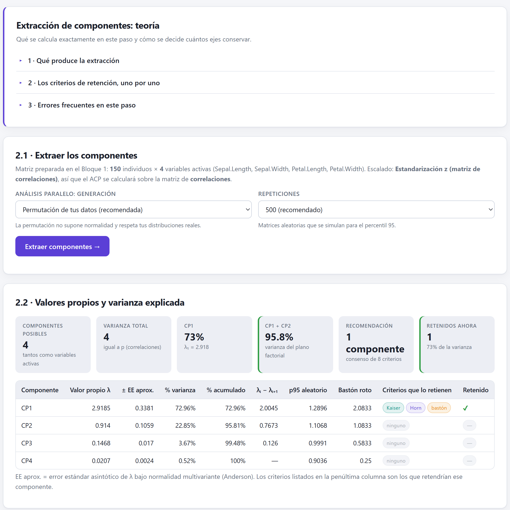
123456
Figura 1.5. Anatomía de un bloque: la parte superior del Bloque 2 después de extraer los componentes del ejemplo de iris.
1La teoría del bloque, siempre al principio.
2Cada tema se despliega con un clic.
3Los ajustes, con la opción recomendada ya elegida.
4El botón principal del bloque.
5Indicadores: la recomendación del consenso, 1 componente.
6En la tabla, qué criterios retienen cada componente.
Las figuras de todos los bloques funcionan igual. Debajo de cada una hay un panel de edición que se abre con ⚙ Editar figura (colores, títulos, tamaño de letra). Reúne títulos, qué elementos se dibujan, colores, tema, tipografía y cuatro reguladores de tamaño de letra. La figura se redibuja al instante con cada cambio. Al pie están el formato, la resolución, el fondo y el botón de descarga, con el tamaño resultante en píxeles.
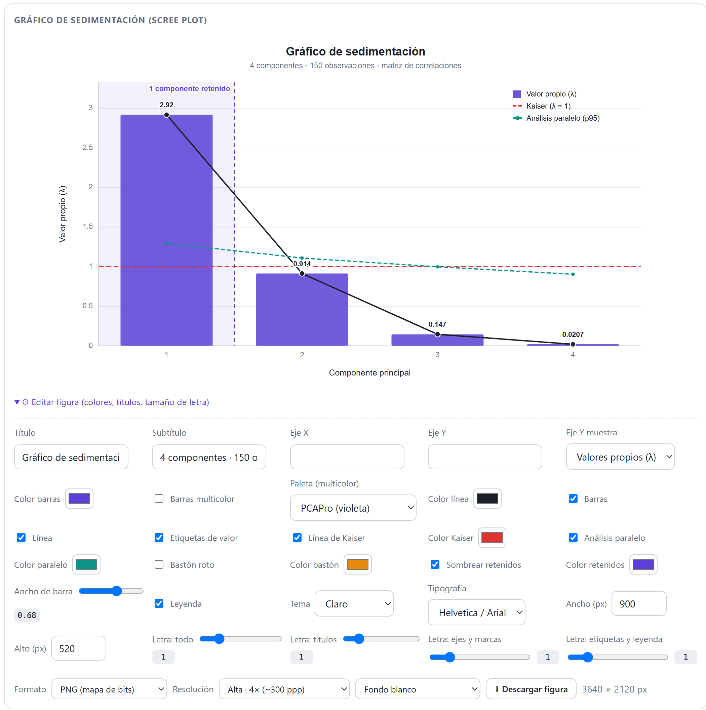
123456
Figura 1.6. El gráfico de sedimentación de iris con su panel de edición abierto.
1La zona sombreada marca los componentes retenidos.
2Abre y cierra el panel de edición.
3Colores, elementos visibles, paleta y tema.
4Tamaño de letra: todo, títulos, ejes, etiquetas.
5Formato y resolución de la descarga, hasta 12×.
6Descarga, con el tamaño final en píxeles.
iNota · SVG o PNG
Para un artículo, descarga en SVG si la revista acepta figuras vectoriales: se amplía sin perder nitidez y se puede retocar en Inkscape o Illustrator. Si pide mapa de bits, usa PNG a 8× (unos 600 ppp) o más. JPG y WEBP sirven para presentaciones y páginas web.
1.7Los conjuntos de datos de ejemplo
El programa trae dos ejemplos que se cargan con un botón desde la tarjeta 1.1 · Sube tu base de datos, y cinco archivos de práctica en la carpeta datos/, pensados para enseñar una lección cada uno. Los capítulos de cada bloque los usan en sus ejemplos paso a paso.
Tabla 1.5. Ejemplos y archivos de práctica.
Ejemplo o archivo
Tamaño
Contenido y para qué sirve
Ejemplo real: iris (150 × 4)
150 × 4 + especie
Largo y ancho de sépalos y pétalos de tres especies de Iris (Fisher, 1936). El ejemplo clásico: sirve para comprobar que los resultados coinciden con los de otros programas.
Ejemplo simulado: morfometría foliar (120 × 9)
120 × 9 + sitio
Nueve caracteres de hoja y planta en tres sitios, simulados sobre tres factores latentes: tamaño, grosor y fisiología. Funciona siempre, también con doble clic.
practica1_suelos.csv
90 × 6 + sitio
Fertilidad de suelos en tres posiciones de una ladera. El primer análisis completo: todo sale limpio.
practica2_semillas.csv
120 × 9 + especie
Morfometría y composición de semillas de dos especies, con problemas sembrados: redundancia, ruido y atípicos.
practica3_escalas.csv
100 × 7 + parcela
Variables en unidades muy dispares (mm³, µS/cm, pH…): enseña por qué hay que estandarizar.
practica4_sin_estructura.csv
80 × 6 + lote
Variables ambientales sin relación entre sí: enseña cuándo no hacer un ACP.
proyecto_integrador_agronomia.csv
150 × 12 + 2 grupos + 1 suplementaria
Experimento agronómico con cuatro tratamientos y tres bloques: el análisis completo de principio a fin.
▸Tu primer análisis en dos minutos
En la portada pulsa Ver el ejemplo de iris. La app abre el Bloque 1 con las cuatro medidas marcadas como activas y la especie como cualitativa.
Pulsa Preparar matriz y diagnosticar →. El diagnóstico muestra KMO = 0.540, bajo, y avisa que Sepal.Width tiene una MSA de 0.270. La tarjeta 1.9 recomienda el ACP (figura 1.4).
Pulsa Ir al Bloque 2: extracción → y luego Extraer componentes →. CP1 tiene λ₁ = 2.9185 y recoge el 72.96 % de la varianza; CP1 y CP2 juntos, el 95.8 %.
Lee la recomendación: el consenso de los ocho criterios retiene 1 componente, aunque el plano CP1–CP2 conserva casi toda la información. Esa tensión entre criterios es exactamente la decisión que la app te pone delante, y el capítulo 4 enseña a resolverla.
iNota · resultados reproducibles
Los cálculos de PCAPro se comprueban contra valores publicados por programas independientes, como R. Con iris, los valores propios coinciden con los de prcomp a seis decimales y el KMO con el de psych a tres. El análisis paralelo de Horn usa remuestreos, así que su percentil 95 puede variar ligeramente en la última cifra entre una corrida y otra; los valores propios no. El apéndice E describe la verificación.
1.8Flujo de trabajo recomendado
Los bloques están ordenados como se hace un estudio: primero se asegura que los datos admiten el análisis, luego se extraen los ejes, se decide si rotarlos, se leen los mapas, se interpretan y, al final, se reporta. Cada método recorre un camino distinto por esa secuencia, como líneas de metro que se detienen solo en algunas estaciones.
Figura 1.7. Rutas de cada método por los bloques. Los cinco empiezan en el Bloque 1 y terminan en el informe. La rotación es propia del ACP: con los otros cuatro, la app salta del Bloque 2 al 4. El agrupamiento es opcional para todos.
Tabla 1.6. Qué cambia en cada bloque según el método.
Bloque
ACP
AC, ACM, AFDM y AFM
1
Carga, papel de las variables, preparación y diagnóstico.
Igual, y la tarjeta 1.9 pide la configuración del método: filas y columnas en el AC, cualitativas que entran en el ACM y el AFDM, bloque de cada variable en el AFM.
2
Valores propios y los ocho criterios de retención.
Inercia de cada eje y criterios propios: inercia media, porcentaje acumulado y codo; en el ACM, además, Benzécri y Greenacre.
3
Siete rotaciones.
No aplica.
4
Círculo de correlaciones, individuos, biplot, cos² y contribuciones.
Mapas propios: simétrico en el AC; categorías e individuos en el ACM; variables, categorías e individuos en el AFDM; bloques, individuos y puntos parciales en el AFM.
5
Descripción de dimensiones, valores test, comparación de grupos, ajuste y borrador.
Lectura de cada eje por contribuciones, valores test de las categorías y borrador.
5b
Igual para los cinco: el agrupamiento trabaja sobre las coordenadas de los individuos, sean del método que sean.
6
Igual para los cinco: el informe nombra el método y reúne sus tablas y figuras.
✓Regla de decisión · ¿cuántos individuos hacen falta?
Criterio
Referencia
Qué dice
Razón n:p
Consenso habitual
Entre 5 individuos por variable (mínimo) y 20 (ideal); 10:1 es lo que se suele pedir.
Número absoluto
Comrey y Lee
50 muy deficiente, 100 deficiente, 200 aceptable, 300 bueno, 500 muy bueno.
Fuerza de la estructura
MacCallum y colaboradores, 1999
Con comunalidades altas (> 0.60) y tres o cuatro variables marcadoras por componente, 60 a 100 individuos pueden bastar; con comunalidades bajas (< 0.40) pueden hacer falta más de 300.
Para interpretar
Regla práctica
Al menos tres variables con carga alta en cada componente que retengas.
La regla moderna es la tercera: importa más qué tan fuerte es la estructura que el número bruto de filas. El diagnóstico del Bloque 1 calcula la razón n:p de tus datos y la califica.
!Importante · el orden sí importa
Aunque puedes volver a cualquier bloque ya activado, no interpretes un eje antes de revisar el diagnóstico del Bloque 1. Una variable con MSA baja, un atípico extremo o unidades sin estandarizar cambian los componentes, y ningún mapa lo corrige después. Si cambias algo en el Bloque 1, vuelve a pulsar Preparar matriz y diagnosticar →: la nueva preparación borra la extracción anterior, y la extracción y los bloques siguientes hay que rehacerlos a partir de ella.
1.9Cómo leer pruebas, umbrales y recomendaciones
La app acompaña cada decisión con pruebas estadísticas, umbrales y recomendaciones. Entender qué dice cada uno —y qué no dice— evita las dos equivocaciones más comunes: creer que un resultado significativo es importante y creer que una recomendación es una orden.
PEl valor P
Es la probabilidad de observar un resultado tan extremo como el tuyo si no hubiera efecto. En la prueba de Bartlett, un P < 0.05 dice que las variables están correlacionadas. Pero con muchos individuos casi siempre sale significativa, así que es una condición necesaria, no suficiente: el KMO dice si esas correlaciones bastan.
vEl valor test
Mide cuántas desviaciones estándar se aparta una categoría o un grupo del centro. Por encima de |1.96| la diferencia no se explica por azar (P < 0.05). En el Bloque 5 y en el agrupamiento es una descripción, no una prueba: los ejes y los grupos se construyeron para separar.
✓Regla de decisión · el índice KMO
KMO
Calificación de Kaiser
Qué hacer
≥ 0.90
Excelente
Adelante.
0.80 – 0.89
Meritorio
Adelante.
0.70 – 0.79
Aceptable
Adelante.
0.60 – 0.69
Mediocre
Con reservas: decláralo al reportar.
0.50 – 0.59
Bajo
Revisa las variables con MSA baja.
< 0.50
Inaceptable
No hagas el análisis con esas variables.
El mismo cálculo aplicado a cada variable da su MSA. Las variables con MSA < 0.50 se retiran de una en una, recalculando después de cada retiro, porque quitar una cambia las de las demás.
8
Criterios, no uno
Para decidir cuántos componentes retener, el Bloque 2 no confía en una sola regla: calcula ocho —Horn, Kaiser, Jolliffe, bastón roto, MAP de Velicer, codo, 70 % y 80 %— y los pone lado a lado con la cifra que decide cada uno. El consenso es una recomendación; el número lo fijas tú, y el informe declara la decisión.
iNota · significancia y magnitud
Con muchos datos, diferencias diminutas resultan significativas. Un componente puede separar dos tratamientos con P < 0.001 y, sin embargo, explicar una fracción mínima de la varianza. Pregúntate siempre si la magnitud importa para tu pregunta, no solo si el valor P es pequeño.
Con estas bases estás listo para recorrer los bloques. El siguiente capítulo presenta la portada de la app, la teoría que acompaña a cada bloque y la forma de citar el programa.
2
Capítulo dos · Inicio
Inicio, teoría integrada y cómo citar
La portada de la app, la teoría que acompaña a cada bloque, el idioma de trabajo y la forma de citar el programa. Es el capítulo corto que conviene leer antes de cargar el primer archivo.
2.1La portada de la app
2.2La teoría dentro de cada bloque
2.3Idioma y preferencias
2.4Cómo citar PCAPro
2.1La portada de la app
La portada es el paso Inicio, el primero de la barra y lo primero que ves al abrir PCAPro. No calcula nada: presenta el programa, resume el recorrido y ofrece tres puertas de entrada.
La parte superior —encabezado, barra de pasos y presentación con sus tres botones— se describió en la figura 1.1. Debajo hay tres secciones más, que muestra la figura 2.1. A la portada se vuelve desde cualquier bloque con un clic en el logotipo PCAPro. del encabezado o en el botón Inicio, y volver no borra el análisis en curso.
Tabla 2.1. Las zonas de la portada, de arriba abajo.
Zona
Qué contiene
Para qué sirve
Encabezado
Logotipo y selector de idioma.
Volver a la portada; cambiar entre español e inglés (sección 2.3).
Barra de pasos
Inicio y los bloques 1 a 6, con el 5b entre el 5 y el 6.
Moverse entre bloques ya activados (tabla 2.3).
Presentación
El propósito en una frase, tres botones, cuatro garantías y tres figuras de muestra.
Empezar: con tus datos, con el ejemplo o con la teoría (tabla 2.2).
Cómo funciona
Los seis pasos del recorrido, cada uno con lo que revisa.
Ver el orden del análisis de un vistazo.
Qué incluye
Una tarjeta por bloque con su descripción.
Ir directo a un bloque.
Por qué existe
La razón de ser del programa y la referencia para citarlo.
Copiar la cita con un clic (sección 2.4).
Las tres puertas de entrada
Tabla 2.2. Los botones de la presentación.
Botón
Qué hace
Cuándo usarlo
Empezar con mis datos →
Abre el Bloque 1 en la tarjeta 1.1 · Sube tu base de datos.
Cuando ya tienes tu archivo.
Ver el ejemplo de iris
Abre el Bloque 1 y carga el ejemplo de iris, listo para diagnosticar.
Para practicar o comprobar resultados. Requiere abrir la app con el servidor local o en línea (tabla 1.4).
Leer la teoría
Abre el Bloque 1 con el primer tema del marco teórico desplegado.
Antes de tu primer análisis, o para repasar.
La barra de pasos
Los bloques se activan en orden, a medida que terminas el anterior: un botón gris todavía no está disponible. Una vez activado, puedes ir y volver entre bloques sin perder lo calculado. La tabla 2.3 dice qué acción enciende cada uno.
Tabla 2.3. Qué activa cada bloque de la barra.
Bloque
Se activa al…
Observación
I1
Siempre disponibles.
—
2
Pulsar Preparar matriz y diagnosticar → en el Bloque 1.
Volver a preparar borra la extracción anterior.
3
Extraer los componentes en el Bloque 2.
Solo con el ACP; con los otros métodos queda apagado.
4
Aplicar la rotación en el Bloque 3; con los otros métodos, al ejecutarlos en el Bloque 2.
Si no quieres rotar, elige Sin rotar (comparación): también cuenta como paso.
55b
Construir los mapas en el Bloque 4.
Los dos se activan a la vez.
6
Interpretar en el Bloque 5 o agrupar en el 5b.
Basta con uno de los dos.
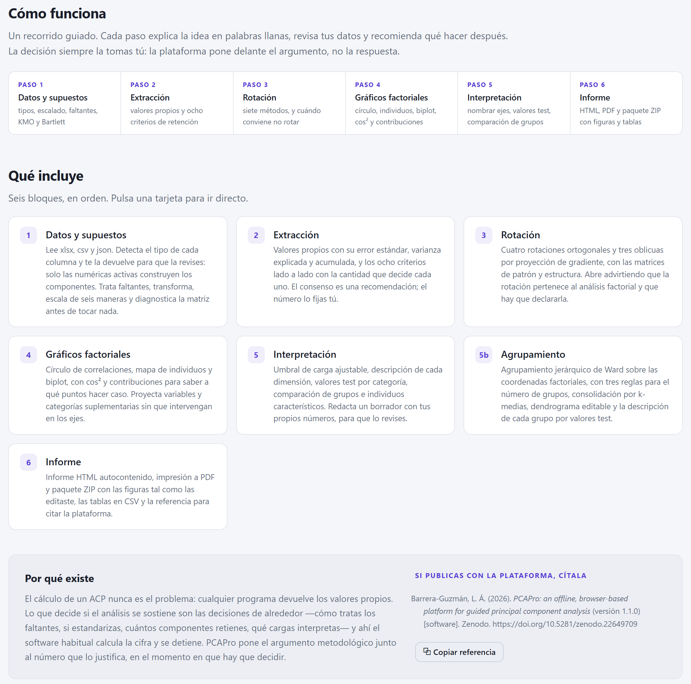
12345
Figura 2.1. La parte baja de la portada.
1Cómo funciona: los seis pasos del recorrido.
2Qué incluye: una tarjeta lleva a su bloque, o al Bloque 1 si aún no está activo.
3El agrupamiento, opcional, tiene su propia tarjeta, rotulada 5b.
4La referencia del programa, ya formateada.
5⧉ Copiar referencia la lleva al portapapeles.
iNota · el recorrido tiene seis pasos, la barra ocho botones
La sección Cómo funciona resume el recorrido en seis pasos porque el agrupamiento (5b) es opcional y la portada no es un paso de análisis. La barra, en cambio, muestra los ocho destinos posibles. Un mismo análisis puede ir del Bloque 5 directamente al informe.
2.2La teoría dentro de cada bloque
Cada bloque empieza con una tarjeta de teoría: temas desplegables que explican qué se calcula y cómo decidir, escritos para quien necesita entender sin un libro de estadística al lado. En total son 40 temas, cada uno redactado en español y en inglés; no es una traducción automática.
El más extenso es el marco teórico del Bloque 1, con trece temas que conviene tener claros antes de tocar los datos. Algunos llevan una etiqueta: esencial marca lo que no debes saltarte, y ▸ Bloque 2 o ▸ Bloque 3 indica que el tema se aplica más adelante. En la cabecera de esa tarjeta está también el botón Cómo citar.
!Importante · la teoría habla del ACP
Las tarjetas de teoría desarrollan el análisis de componentes principales y el agrupamiento. Lo propio del análisis de correspondencias, del ACM, del AFDM y del AFM —la inercia, las correcciones de Benzécri y Greenacre, el equilibrio entre bloques— aparece en las notas de cada tarjeta de resultados cuando usas esos métodos, y se desarrolla en los capítulos de este manual (secciones 4.5, 6.5 y 7.6).
θCómo aprovechar la teoría
No hace falta leer los cuarenta temas antes de empezar. Lee completo el marco del Bloque 1 una vez —en especial el tema 3, Postulados y supuestos— y deja los demás para el momento de la decisión: abre la teoría del Bloque 2 cuando los criterios de retención no coincidan, la del Bloque 4 antes de publicar una figura. Así la teoría llega cuando tiene una pregunta concreta que responder.
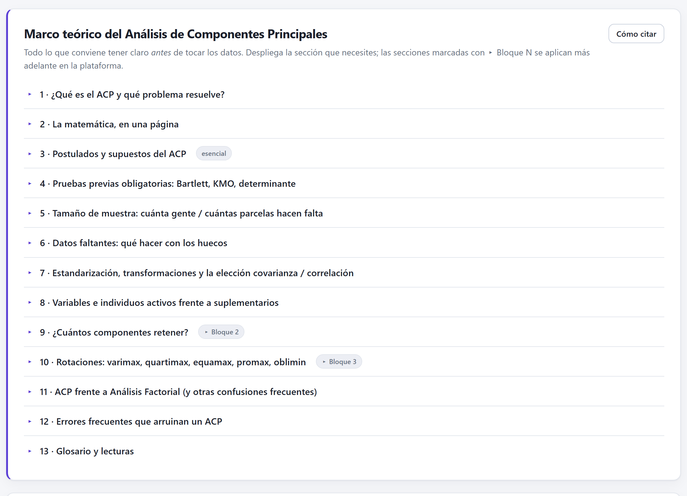
12345
Figura 2.2. El marco teórico del Bloque 1, con los trece temas cerrados.
1Cómo citar abre el diálogo de la figura 2.4.
2Cada tema se abre y se cierra con un clic.
3esencial: postulados y supuestos del ACP.
4▸ Bloque 2: se aplica al decidir cuántos componentes retener.
5El último tema reúne un glosario y lecturas recomendadas.
Tabla 2.4. Los trece temas del marco teórico y dónde los desarrolla este manual.
11 · ACP frente a Análisis Factorial (y otras confusiones frecuentes)
Bloques 2 y 3
5.1
12 · Errores frecuentes que arruinan un ACP
Todo el análisis
Apéndice B
13 · Glosario y lecturas
Consulta
Apéndices C y F
Los bloques siguientes tienen su propia tarjeta de teoría, más breve y centrada en lo que ese bloque decide.
Tabla 2.5. La teoría de los demás bloques.
Bloque
Título de la tarjeta
Temas
2
Extracción de componentes: teoría
Qué produce la extracción · Los criterios de retención, uno por uno · Errores frecuentes en este paso
3
Rotación: teoría
El problema que resuelve la rotación · Estructura simple: el objetivo de Thurstone · Rotaciones ortogonales: la familia ortomax · Rotaciones oblicuas: cuando los ejes pueden correlacionarse · ¿Es legítimo rotar componentes principales? · Cómo elegir el umbral de las cargas
4
Mapas factoriales: teoría
Las dos nubes: individuos y variables · cos² y contribuciones: las dos medidas que evitan malinterpretar · El biplot y su escala · Elipses: cuál dibujar y qué significa cada una · Elementos suplementarios · Convenciones al publicar una figura de ACP
5
Interpretación: teoría
Qué significa «interpretar» un componente · El valor test (v.test): cómo se caracteriza un eje con categorías · ¿Los grupos difieren en los componentes? — y la trampa de la circularidad · Calidad del ajuste: matriz reproducida y RMSR · Cómo se escriben los resultados
5b
Agrupamiento sobre los componentes: teoría
Por qué agrupar sobre los ejes y no sobre las variables · El criterio de Ward · Cuántos grupos · La consolidación por k-medias · Cómo se describe un grupo · Lo que un agrupamiento no demuestra
6
Informe y exportación
Qué produce este bloque
2.3Idioma y preferencias
PCAPro funciona completo en español y en inglés: la interfaz, los cuarenta temas de teoría, los textos de interpretación que redacta con tus cifras y el informe final. El idioma se elige en el selector del encabezado. La primera vez, la app usa el idioma de tu navegador —inglés si está en inglés, español en cualquier otro caso— y a partir de entonces recuerda tu elección.
12
Figura 2.3. La misma portada con la interfaz en inglés. 1 El selector de idioma. 2 Los bloques cambian de nombre: el 5b, Agrupamiento, aparece como Clustering.
Qué cambia al instante y qué no
El cambio de idioma es inmediato en los textos de la interfaz, pero no en lo que ya se calculó. Lo comprobamos con el ejemplo de iris: tras extraer los componentes en español y pasar la app a inglés, los títulos de las tarjetas cambiaron, pero el gráfico de sedimentación y los indicadores siguieron en español hasta volver a pulsar Extraer componentes →.
Tabla 2.6. Efecto de cambiar el idioma a mitad de un análisis.
Elemento
Cambia al instante
Cómo actualizarlo
Botones, menús, títulos de tarjetas y teoría
●
—
Resultados ya calculados: indicadores, tablas y listas de verificación
—
Vuelve a pulsar el botón principal del bloque.
Figuras ya dibujadas: títulos, ejes y leyendas por defecto
—
Vuelve a pulsar el botón principal del bloque.
Títulos que escribiste tú en el editor de figuras
—
El cambio de idioma no los toca, pero se pierden si vuelves a ejecutar el bloque: la figura se redibuja desde sus valores por defecto.
Informe y paquete ZIP
◐
Salen en el idioma activo al momento de generarlos.
✓Regla de decisión · ¿en qué idioma trabajo?
Si vas a…
entonces…
Publicar en español o trabajar en clase
Elige español antes de cargar los datos y déjalo así.
Publicar en inglés
Elige inglés antes de cargar los datos: las figuras saldrán ya con títulos y ejes en inglés, y el informe también.
Cambiar a mitad del análisis
Vuelve a ejecutar los bloques desde el primero que quieras en el otro idioma, en orden, y edita las figuras después: volver a ejecutar un bloque borra los cambios hechos en sus figuras.
Los nombres de los archivos también cambian con el idioma: el informe se descarga como …_informe_ACP.html o …_PCA_report.html, y las tablas del ZIP van en tablas/ o en tables/.
Qué recuerda la app
PCAPro no tiene cuentas de usuario ni un panel de ajustes, y guarda lo mínimo.
Qué
Se recuerda
Detalle
Idioma
●
Queda guardado en tu navegador, en esa computadora.
Datos, ajustes y resultados del análisis
—
Viven mientras la pestaña está abierta; recargar la página empieza de cero.
Estilo de las figuras
—
Se conserva mientras no vuelvas a ejecutar el bloque ni recargues la página; descarga cada figura en cuanto la tengas como quieres.
Modo claro u oscuro
◐
La interfaz sigue el modo de tu sistema operativo; las figuras conservan su tema, Claro por defecto, para que se descarguen igual.
2.4Cómo citar PCAPro
Citar el software con que se hizo un análisis es parte de reportarlo: permite que otros sepan exactamente con qué herramienta, y en qué versión, se obtuvieron los resultados. Es también lo que hace visible el trabajo detrás de un programa libre. La referencia aparece en cinco lugares de la app, siempre idéntica.
Tabla 2.7. Dónde encontrar la referencia.
Lugar
Qué ofrece
Botón Cómo citar, en la teoría del Bloque 1
Un diálogo con la referencia y dos botones para copiarla en formato de texto o en BibTeX (figura 2.4).
Portada, sección Por qué existe
La referencia y ⧉ Copiar referencia (figura 2.1).
Tarjeta 6.4 · Cómo citar PCAPro del Bloque 6
La referencia con sus dos botones de copia, al terminar el análisis.
Informe generado
El párrafo de métodos ya incluye «(Barrera-Guzmán, 2026)», y una sección final repite la referencia con su BibTeX.
Paquete ZIP
El archivo CITATION.bib, listo para importar en Zotero, Mendeley o LaTeX.
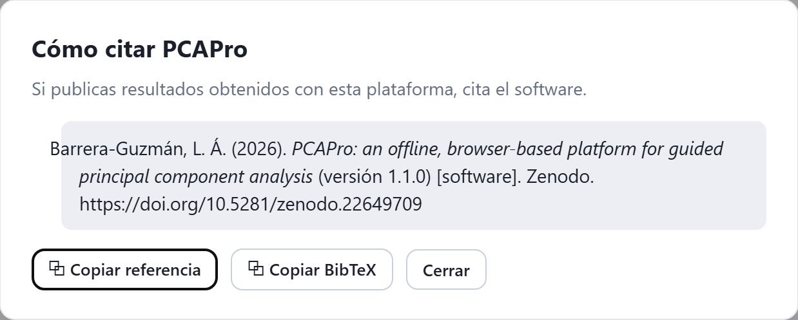
1234
Figura 2.4. El diálogo Cómo citar PCAPro. 1 La referencia. 2 La copia como texto. 3 La copia en BibTeX. 4 Cierra el diálogo.
La referencia
Barrera-Guzmán, L. Á. (2026). PCAPro: an offline, browser-based platform for guided principal component analysis (versión 1.1.0) [software]. Zenodo. https://doi.org/10.5281/zenodo.22649709
En BibTeX, tal como la copia el botón ⧉ Copiar BibTeX y como va en CITATION.bib:
@software{pcapro,
author = {Barrera-Guzmán, Luis Ángel},
title = {{PCAPro}: an offline, browser-based platform for guided principal component analysis},
year = {2026},
version = {1.1.0},
publisher = {Zenodo},
doi = {10.5281/zenodo.22649709},
url = {https://github.com/luisangelbg/PCAPro}
}
θEl DOI de concepto y los DOI de versión
Cada versión publicada de PCAPro se archiva en Zenodo con su propio identificador digital (DOI), y todas cuelgan de un DOI de concepto que siempre lleva a la versión más reciente. La referencia usa el de concepto, 10.5281/zenodo.22649709: así todas las citas del programa se acumulan en un mismo registro, y la versión exacta que usaste queda dicha en el texto, «(versión 1.1.0)». Si una revista o un revisor te pide el identificador de la versión concreta, la 1.1.0 es 10.5281/zenodo.22694679.
Qué escribir en la sección de métodos
El informe del Bloque 6 redacta el párrafo de métodos con los ajustes y las cifras de tu análisis, e incluye ya la cita. Con el ejemplo de iris, recién extraídos los componentes y sin rotar, dice:
▸Párrafo generado por el informe · iris
Se analizaron 150 observaciones y 4 variables cuantitativas (Sepal.Length, Sepal.Width, Petal.Length, Petal.Width) mediante análisis de componentes principales. Los datos faltantes se trataron por eliminación de filas incompletas. Se aplicó sin transformación previa y estandarización z (matriz de correlaciones). La adecuación muestral se verificó con el índice de Kaiser–Meyer–Olkin (KMO = 0.54) y la prueba de esfericidad de Bartlett (χ²(6) = 707, p < 0.0001). El número de componentes se decidió combinando el análisis paralelo de Horn (500 matrices generadas por permutación de los datos observados, percentil 95), el criterio de Kaiser, el bastón roto, el criterio MAP de Velicer y el gráfico de sedimentación. No se aplicó rotación. Todos los cálculos se realizaron en PCAPro (Barrera-Guzmán, 2026), que implementa la descomposición espectral por rotaciones de Jacobi y las rotaciones factoriales por el algoritmo de proyección de gradiente.
!Importante · es un borrador, no un texto final
El párrafo sirve de punto de partida, pero revísalo antes de pegarlo. Tres cosas que casi siempre hay que ajustar: la redacción, que al armarse por piezas puede quedar forzada —en el ejemplo, «se aplicó sin transformación previa»—; el criterio de retención que de verdad usaste para decidir, que el párrafo enumera en general; y el número de componentes retenidos, que debes declarar con su porcentaje de varianza.
✓Regla de decisión · qué citar además del programa
Si en tu análisis usaste…
cita también
Cualquier ACP
Pearson (1901) y Hotelling (1933), o un texto de referencia como Jolliffe (2002).
Análisis paralelo para retener componentes
Horn (1965).
Criterio MAP
Velicer (1976).
Rotación varimax o promax
Kaiser (1958); Hendrickson y White (1964).
Prueba de esfericidad
Bartlett (1950).
Agrupamiento sobre los ejes
Ward (1963); Husson, Josse y Pagès (2010).
No hace falta buscar los datos completos: la sección Referencias metodológicas del informe los trae, y el apéndice F los reúne.
iNota · cita también este manual si lo usas en clase
Si preparas un curso, una tesis o un material didáctico apoyado en este manual, cítalo aparte del programa: Barrera-Guzmán, L. Á. (2026). PCAPro. Manual de usuario (1.ª ed.).
Con la portada, la teoría, el idioma y la cita resueltos, el siguiente capítulo entra al primer bloque de análisis: cómo preparar la hoja de datos, cargarla y comprobar si admite un análisis factorial.
3
Capítulo tres · Bloque 1
Datos y supuestos
Cómo preparar la hoja, cargarla, decir qué papel juega cada columna, tratar faltantes y escalas, y comprobar si los datos admiten un análisis factorial antes de calcular nada. Termina con la elección del método y cuatro archivos de práctica, uno por cada situación típica.
3.1Preparar la hoja de datos
3.2Cargar un archivo y la vista previa
3.3El papel de cada variable
3.4Faltantes, transformaciones y escalado
3.5El diagnóstico: Bartlett, KMO y MSA
3.6Exploración gráfica y recomendaciones
3.7Qué método corresponde
3.8Paso a paso: cuatro archivos de práctica
3.1Preparar la hoja de datos
La mayoría de los problemas de un análisis factorial se originan antes de abrir el programa, en la forma de la hoja. Diez minutos ordenándola ahorran horas de resultados raros.
PCAPro espera una tabla rectangular: la primera fila con los nombres de las variables y cada fila siguiente con un individuo —una planta, una parcela, una muestra de suelo—. Es el formato «ancho» que ya usas para capturar datos de campo.
Así sí
ID
Sitio
MO_pct
N_total_pct
1
S001
Ladera alta
2.15
0.080
2
S002
Ladera alta
1.04
0.079
3
S031
Ladera media
3.09
4
S061
Vega
3.54
0.182
Así no
ID
Sitio
MO
N total
1
S001
1
2.15 %
0.080
2
— Ladera media —
3
S031
2
3.09
sin dato
4
S061
3
≈ 3.5
0,182
A la izquierda, cuatro filas de practica1_suelos.csv, con un faltante dejado en blanco a modo de ejemplo. A la derecha, cinco errores comunes: un sitio codificado con números, un renglón de título en medio de los datos, un faltante escrito como texto no reconocido, un número aproximado y un decimal con coma en un archivo que usa punto. El signo % al final de un número, en cambio, se ignora sin problema.
Tabla 3.1. Reglas para una hoja que PCAPro lee sin problemas.
Regla
Por qué
Una sola tabla por hoja, empezando en la celda A1
La app toma la primera fila no vacía como encabezado y todo lo de abajo como datos.
Sin celdas combinadas ni renglones de título intercalados
Un renglón como «— Ladera media —» se leería como un individuo más, casi vacío.
Una columna por variable, con un nombre corto y único
El nombre aparece en tablas y figuras. Evita espacios y acentos si el archivo pasará por otros programas.
Solo el número en cada celda
«12 cm» o «≈ 3.5» no se leen como número. El signo % al final sí se ignora.
Grupos con texto, no con códigos: «Valle», «T1», «Testigo»
Una columna 1, 2, 3 parece numérica; la app sospecha que es un código, pero una etiqueta de texto no deja dudas.
Una columna de identificador con valores distintos
Etiqueta los puntos en los mapas; sin ella, los individuos se llaman «Ind 1», «Ind 2»…
Faltantes vacíos o con un código reconocido (tabla 3.2)
Cualquier otro texto en una columna numérica cuenta como valor no numérico.
Prefijos para bloques temáticos: suelo_pH, planta_altura
Así el recomendador detecta los bloques y propone el análisis factorial múltiple (sección 3.7).
Tabla 3.2. Textos que la app reconoce como dato faltante, sin distinguir mayúsculas.
La app lee SD y sd como «sin dato». Si alguna columna guarda desviaciones estándar o una categoría llamada así, renómbrala antes de cargar el archivo; de lo contrario esas celdas quedarán vacías.
3.2Cargar un archivo y la vista previa
La tarjeta 1.1 · Sube tu base de datos acepta archivos .xlsx, .xls, .csv, .tsv y .txt. Arrastra el archivo a la zona punteada o haz clic en ella para buscarlo. Al terminar la lectura aparece un mensaje verde con las filas y columnas leídas, y se abren las tarjetas 1.2, 1.3 y 1.4.
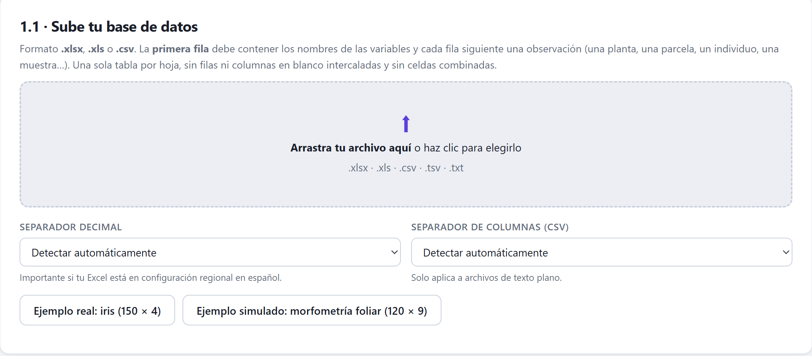
12345
Figura 3.1. La tarjeta 1.1 · Sube tu base de datos.
1Zona de carga: arrastra el archivo o haz clic.
2Separador decimal (tabla 3.3).
3Separador de columnas, solo para archivos de texto.
4Ejemplo de iris; necesita servidor local o la versión en línea.
5Ejemplo simulado; funciona siempre.
Tabla 3.3. El separador decimal.
Opción
Cómo lee «1,234» y «12,5»
Cuándo elegirla
Detectar automáticamente
Cada valor por separado: si termina en coma y uno a tres dígitos, y no tiene un punto seguido de dígitos, la coma es decimal: «12,5» = 12.5, pero también «1,234» = 1.234. En otro caso, las comas se eliminan como separadores de miles.
La mayoría de los archivos.
Punto (12.34)
Las comas se eliminan: «1,234» = 1234.
Si tu archivo usa coma para los miles.
Coma (12,34)
Los puntos se eliminan y la coma es decimal: «1.234,5» = 1234.5.
Archivos exportados con configuración regional en español.
iNota · hojas de cálculo
Si el libro de Excel tiene varias hojas, aparece el selector Hoja del libro para elegir cuál analizar. Los separadores no aplican a .xlsx, que ya guarda los números como números. Recuerda que leer .xlsx necesita conexión la primera vez que abres la app; los .csv se leen siempre sin conexión (sección 1.5).
La tarjeta 1.4 · Vista previa del archivo muestra las doce primeras filas tal como se leyeron. Un símbolo delante de cada nombre recuerda su papel: ⌗ activa · ⊕ cuantitativa suplementaria · ⌸ cualitativa · ◇ identificador · ∅ excluida. Si ves números donde esperabas texto, o guiones donde había datos, revisa el separador decimal antes de seguir.
3.3El papel de cada variable
Al cargar el archivo, la app examina cada columna, deduce su tipo y le propone un papel. La propuesta suele ser correcta, pero revisarla es el paso más importante del bloque: solo las variables marcadas como activas construyen los componentes.
Tabla 3.4. Cómo decide la app el tipo y el papel inicial de una columna.
Si la columna…
Tipo detectado
Papel propuesto
tiene al menos 85 % de valores numéricos (y tres o más)
Numérica continua o entera
Activa
es numérica pero no varía
Constante
Excluir
es numérica entera con muy pocos valores distintos (8 o menos, y no más del 5 % de las filas)
Numérica (enteros), con la alerta «¿código de grupo?»
Cualitativa / grupo
es de texto y todos sus valores son distintos
Identificador
Identificador de fila
es de texto con más de 30 categorías
Texto
Excluir
es de texto con 30 categorías o menos
Categórica
Cualitativa / grupo
Tabla 3.5. Los cinco papeles.
Papel en la app
Qué hace en el análisis
Úsalo para
Activa (entra al ACP)
Construye los componentes.
Las mediciones que quieres resumir, todas sobre la misma pregunta.
Cuantitativa suplementaria
No interviene en el cálculo; se proyecta después sobre el círculo de correlaciones.
Una variable de respuesta, como el rendimiento, que quieres ver en el mapa sin que lo defina.
Cualitativa / grupo
Colorea los individuos, dibuja elipses y permite comparar grupos; en el ACM, el AC y el AFDM puede entrar a los ejes.
Factores de diseño y características con categorías: sitio, tratamiento, especie.
Identificador de fila
Pone nombre a cada individuo en tablas y mapas.
La clave de la muestra.
Excluir
La columna queda fuera de todo.
Fechas, observaciones de campo, columnas auxiliares.
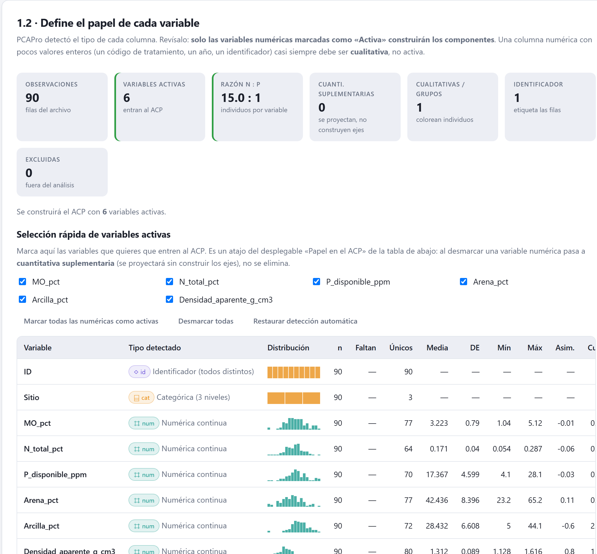
123456
Figura 3.2. La tarjeta 1.2 · Define el papel de cada variable con practica1_suelos.csv.
1Indicadores de papeles; la razón n:p se colorea sola.
2Cuántas variables activas entrarán.
3Selección rápida: desmarcar pasa a suplementaria.
4Marcar todas, desmarcar todas o volver a lo detectado.
5Histograma en miniatura de cada columna.
6Sitio, detectada como categórica de 3 niveles.
La tabla de variables sigue hacia la derecha con la dispersión, la forma de la distribución, las alertas y el desplegable del papel, que muestra la figura 3.3 con el archivo de semillas. La selección rápida y el desplegable Papel en el ACP están sincronizados: cambiar uno cambia el otro.
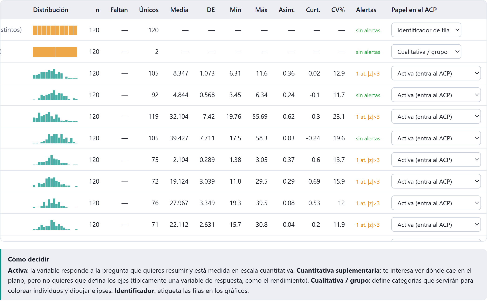
Figura 3.3. Parte derecha de la tabla de variables con practica2_semillas.csv. La columna Alertas marca en naranja las variables con un valor a más de tres desviaciones de la media; la columna Papel en el ACP ofrece solo los papeles que admite cada tipo: una columna de texto no puede ser activa. Debajo, el recuadro Cómo decidir resume la tabla 3.5.
Tabla 3.6. Las alertas de la tabla de variables.
Alerta
Color
Qué significa y qué hacer
varianza cero
rojo
Todos los valores son iguales; no aporta nada y queda excluida.
N % faltantes
naranja > 5 % · rojo > 20 %
Revisa si conviene imputar o excluir la variable (sección 3.4).
asimétrica · muy asimétrica
naranja |g₁| > 1 · rojo |g₁| > 2
Considera una transformación logarítmica o de raíz cuadrada.
N at. |z|>3
naranja
Hay N valores a más de tres desviaciones de la media: comprueba que no sean errores de captura.
¿código de grupo?
naranja
Enteros con pocos valores distintos: probablemente un tratamiento o un bloque.
sin alertas
verde
—
✓Regla de decisión · ¿activa, suplementaria o fuera?
Si la variable…
entonces
Describe a los individuos desde la misma pregunta que las demás
Activa.
Es la respuesta que quieres explicar con la estructura (rendimiento, mortalidad)
Cuantitativa suplementaria: así no fabricas la relación que quieres encontrar.
Es un factor de diseño (tratamiento, bloque, sitio)
Cualitativa / grupo, y fuera de los ejes (sección 1.4).
Es suma, cociente o porcentaje de otras activas (área = largo × ancho)
Deja solo las variables originales o solo la derivada, no las dos.
Mide otro tema (clima entre variables de planta)
Suplementaria, o bien un análisis factorial múltiple con bloques.
El botón de preparación se activa con dos variables activas, pero un ACP con menos de tres rara vez tiene algo que resumir. El indicador de la razón n:p se pone verde a partir de 10 individuos por variable, ámbar entre 5 y 10, y rojo por debajo de 5.
3.4Faltantes, transformaciones y escalado
La tarjeta 1.3 · Preparación de la matriz reúne las tres decisiones que transforman la tabla cruda en la matriz que se analiza. Se aplican en este orden: primero los faltantes, luego la transformación y al final el escalado. La figura 3.4 muestra la tarjeta completa.
Datos faltantes
Tabla 3.7. Opciones para los datos faltantes de las variables activas.
Opción
Qué hace
Úsala cuando
Eliminar filas incompletas (listwise)
Descarta toda fila con algún faltante en las variables activas. Es la opción por defecto.
Faltan pocos datos y dispersos: pierdes menos del 10 % de las filas.
Imputar con la media de la variable
Rellena cada hueco con la media de su columna.
Faltan pocos datos, la variable es simétrica y no quieres perder filas.
Imputar con la mediana de la variable
Rellena cada hueco con la mediana.
Igual que la anterior, con variables asimétricas o con atípicos.
Con cualquiera de las dos imputaciones, una fila vacía en todas las activas se descarta igual. Si después del tratamiento quedan menos de tres filas, la app no prepara la matriz y lo avisa.
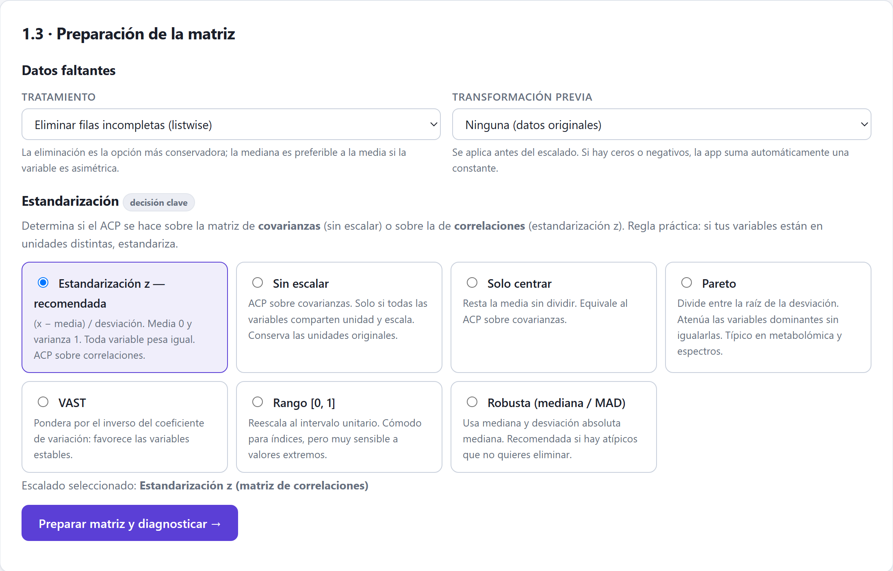
1234567
Figura 3.4. La tarjeta 1.3 · Preparación de la matriz.
1Tratamiento de los datos faltantes.
2Transformación previa.
3El escalado, marcado como decisión clave.
4Estandarización z, elegida por defecto.
5Las otras seis formas de escalar.
6El escalado elegido, tal como irá al informe.
7Prepara la matriz y lanza el diagnóstico.
θEl precio de imputar
Rellenar con la media no inventa información, pero la aplana: todos los huecos reciben el mismo valor, así que la varianza de la variable baja y sus correlaciones con las demás se atenúan. Con un 2 % de huecos el efecto es despreciable; con un 20 % puede cambiar los componentes. Si imputas, decláralo en los métodos, y si faltan muchos datos considera métodos iterativos como los de missMDA en R.
Transformación previa
Tabla 3.8. Transformaciones disponibles. Se aplican a cada variable activa antes de escalar.
La transformación elegida se aplica a todas las variables activas, no solo a las asimétricas. Si solo una o dos lo necesitan, transfórmalas en tu hoja de cálculo antes de cargar el archivo y deja aquí Ninguna.
Escalado: la decisión clave
El ACP busca las direcciones de mayor varianza, y la varianza depende de las unidades. El escalado decide cuánto pesa cada variable. Empieza por la regla de decisión; la tabla 3.9 detalla las siete opciones de la app.
✓Regla de decisión · ¿cómo escalo?
Si tus variables activas…
entonces
Están en unidades distintas (%, ppm, cm, g)
Estandarización z. Es el caso de casi todos los estudios agronómicos y ecológicos.
Comparten unidad y escala y quieres conservarlas
Sin escalar. La app lo considera defendible, en ámbar, si la mayor desviación estándar no pasa de 4 veces la menor; por encima lo marca en rojo.
Tienen atípicos reales que no quieres quitar
Robusta, y compara con z.
Son intensidades o espectros con picos dominantes
Pareto.
Si dudas, estandariza. Un ACP sobre correlaciones rara vez es un error; uno sobre covarianzas con unidades mezcladas lo es casi siempre. La sección 3.8 muestra el caso con cifras.
Tabla 3.9. Las siete formas de escalar.
Opción
Cálculo
Efecto y uso
Estandarización z(por defecto)
(x − media) / DE
Toda variable pesa igual. ACP sobre la matriz de correlaciones. La opción correcta si las unidades difieren.
Sin escalar
x
ACP sobre covarianzas. Solo si todas las variables comparten unidad y escala, por ejemplo medidas de un mismo órgano en milímetros.
Solo centrar
x − media
Equivale a sin escalar: el ACP centra de todos modos.
Pareto
(x − media) / √DE
Atenúa las variables dominantes sin igualarlas. Típico en metabolómica y espectros.
VAST
(x − media) / DE × media / DE
Premia las variables estables, de coeficiente de variación bajo.
Rango [0, 1]
(x − mín) / (máx − mín)
Cómodo para índices, pero un solo valor extremo comprime al resto.
Robusta
(x − mediana) / MAD
Usa mediana y desviación absoluta mediana: resiste a los atípicos que no quieres eliminar.
3.5El diagnóstico: Bartlett, KMO y MSA
Al pulsar Preparar matriz y diagnosticar → la app construye la matriz, calcula sus correlaciones y abre la tarjeta 1.5 · Diagnóstico de la base de datos: una calificación de la A a la D, ocho indicadores y la adecuación muestral de cada variable.
θQué supone un ACP
El tema 3 del marco teórico, Postulados y supuestos, los desarrolla; en resumen son cinco condiciones. Las variables deben estar correlacionadas, porque de eso vive el análisis; las relaciones deben ser aproximadamente lineales, porque así las mide Pearson; la muestra debe ser suficiente para que las correlaciones sean estables; no debe haber atípicos que creen un eje por sí solos; y las escalas deben ser comparables o estar estandarizadas. El ACP descriptivo no exige normalidad, aunque distribuciones muy sesgadas deforman las correlaciones.
θBartlett, KMO y MSA en una frase cada uno
Bartlett pregunta si las variables están correlacionadas en absoluto; con muestras grandes casi siempre dice que sí, así que no basta. KMO pregunta si esas correlaciones son de estructura común: compara las correlaciones con las correlaciones parciales, que se vuelven pequeñas cuando varias variables comparten un factor. La MSA es el mismo cálculo para cada variable: dice cuáles aportan a la estructura y cuáles solo añaden ruido. La escala de Kaiser para interpretarlos está en la sección 1.9.
La calificación de la A a la D
La calificación suma puntos de seis criterios hasta un máximo de 100. Resume el diagnóstico en una letra, pero no lo sustituye.
A Excelente: 82 o más · B Buena: 66 a 81 · C Aceptable con reservas: 48 a 65 · D Problemática: menos de 48
!Importante · la letra no ve todo
La calificación no considera las escalas, los atípicos, la asimetría ni la redundancia. Por eso un archivo con unidades dispares y sin estandarizar puede sacar una A, y uno con cuatro variables inaceptables una B. Lee siempre los colores de los indicadores, la tabla de MSA y la lista de recomendaciones de la sección 3.6: ahí están los problemas que la letra no pesa.
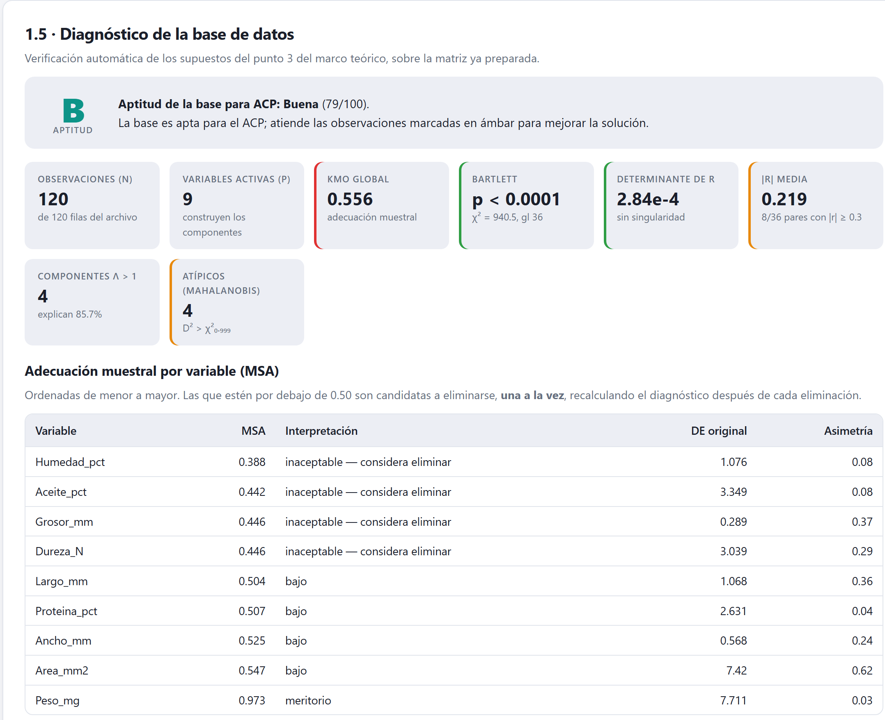
123456
Figura 3.5. El diagnóstico de practica2_semillas.csv, un archivo con problemas sembrados.
1La calificación: B, «Buena», con 79 de 100 puntos.
2KMO de 0.556, en rojo: bajo.
3Correlación absoluta media de 0.219, en ámbar.
4Cuatro atípicos multivariantes.
5Cuatro variables con MSA inaceptable.
6Peso_mg, la única meritoria.
Tabla 3.10. Los ocho indicadores del diagnóstico.
Indicador
Qué mide
Color
Observaciones (n)
Individuos que quedaron tras el tratamiento de faltantes.
—
Variables activas (p)
Columnas que construyen los componentes.
—
KMO global
Qué parte de las correlaciones es común a varias variables y no solo de pares.
verde ≥ 0.80 · ámbar ≥ 0.60 · rojo
Bartlett
Si la matriz de correlaciones difiere de la identidad.
verde si p < 0.05 · rojo
Determinante de R
Cercano a 0: variables linealmente dependientes; cercano a 1: casi sin correlación.
verde > 10⁻⁵ · ámbar
|r| media
Correlación absoluta media entre pares, y cuántos pares superan 0.3.
verde ≥ 0.30 · ámbar
Componentes λ > 1
Cuántos ejes retendría Kaiser y cuánto explicarían. Es una vista previa; el Bloque 2 decide.
—
Atípicos (Mahalanobis)
Individuos cuya distancia D² supera el percentil 99.9 de χ² con p grados de libertad.
ámbar si hay alguno · verde
Adecuación muestral por variable
La tabla de MSA ordena las variables de menor a mayor. Las que quedan por debajo de 0.50 son candidatas a salir del análisis, pero de una en una: al retirar una variable cambian las correlaciones parciales de todas, y otra que parecía inaceptable puede quedar bien. La sección 3.8 lo muestra con las semillas.
Identifica la variable con la MSA más baja.
Pregúntate si tiene sentido quitarla desde tu disciplina. Si es central para tu pregunta, déjala y acepta un KMO más modesto.
Desmárcala en la selección rápida de la tarjeta 1.2: pasa a suplementaria y seguirá visible en los mapas.
Pulsa otra vez Preparar matriz y diagnosticar → y vuelve a leer la tabla.
Repite mientras quede alguna por debajo de 0.50 y el retiro se justifique.
3.6Exploración gráfica y recomendaciones
Debajo del diagnóstico, la tarjeta 1.6 · Exploración gráfica reúne cinco figuras editables. Sirven para ver lo que las cifras resumen: la tabla 3.12 las describe, y la figura 3.6 muestra la que más decisiones cambia.
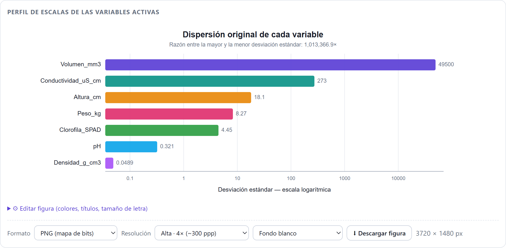
1234
Figura 3.6. Perfil de escalas de practica3_escalas.csv. 1 La razón entre la mayor y la menor desviación estándar: más de un millón de veces. 2 Volumen_mm3, con una desviación de 49 500. 3 El pH, con 0.321. 4 El eje es logarítmico: cada marca multiplica por diez.
Tabla 3.12. Las figuras de exploración.
Figura
Qué muestra
Qué buscar
Mapa de datos faltantes
Cada fila del archivo contra cada variable, con los huecos en rojo y su conteo.
Faltantes agrupados en una variable o en un grupo de individuos.
Perfil de escalas
La desviación estándar original de cada variable, en escala logarítmica.
Diferencias de varios órdenes de magnitud: hay que estandarizar.
Distribución de cada variable
Histogramas con la curva normal de referencia y la asimetría g₁.
Colas largas, bimodalidad, valores imposibles.
Matriz de correlaciones
Las correlaciones de Pearson entre activas, en colores.
Bloques de variables correlacionadas y pares casi redundantes.
Comparación después del preprocesamiento
Diagramas de caja de las variables ya transformadas y escaladas.
Que las escalas hayan quedado comparables.
Las recomendaciones
La tarjeta 1.7 · Recomendaciones sobre tu base de datos traduce el diagnóstico a diez puntos, siempre en el mismo orden, cada uno con su color, la cifra que lo motiva y la acción sugerida. La figura 3.7 la muestra con el archivo sin estructura, y la tabla 3.13 resume cuándo toma cada color.
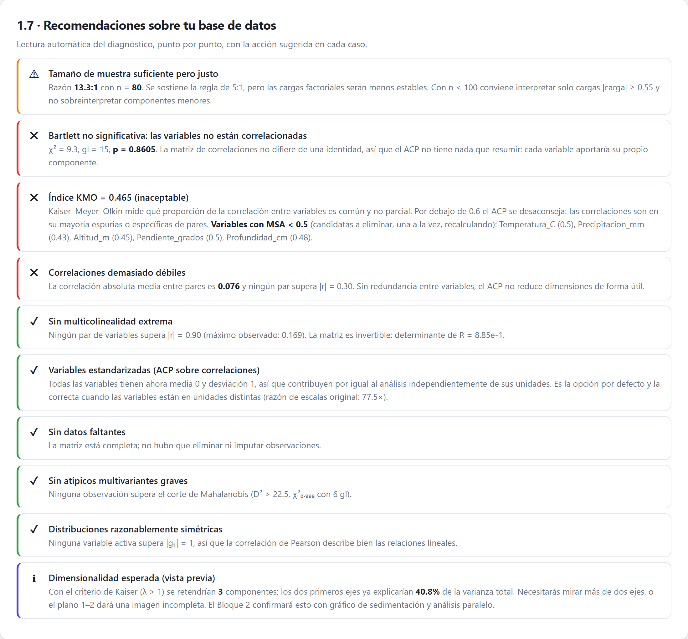
12345
Figura 3.7. Las recomendaciones de practica4_sin_estructura.csv. 1 Muestra justa: n = 80. 2 Bartlett no significativa. 3 KMO inaceptable. 4 Correlaciones demasiado débiles. 5 Aun así, Kaiser retendría 3 componentes: una advertencia sobre ese criterio.
Tabla 3.13. Los diez puntos de la lista de recomendaciones.
#
Punto
✔ verde
⚠ ámbar
✖ rojo
1
Tamaño de muestra
n:p ≥ 10 y n ≥ 100
n:p ≥ 5
n:p < 5
2
Bartlett
p < 0.05
—
p ≥ 0.05, o matriz singular
3
KMO
≥ 0.80 sin MSA < 0.50
≥ 0.60, o alguna MSA < 0.50
< 0.60
4
Estructura de correlación
algún par con |r| ≥ 0.30
—
|r| media < 0.30 y ningún par ≥ 0.30
5
Multicolinealidad
ningún par con |r| ≥ 0.90
algún par ≥ 0.90
—
6
Escalas
estandarización z
sin escalar o solo centrar, razón de desviaciones ≤ 4
sin escalar o solo centrar, razón > 4
7
Faltantes
≤ 5 % de las celdas
≤ 15 %
> 15 %
8
Atípicos multivariantes
ninguno
alguno
—
9
Asimetría
ninguna |g₁| > 1
alguna
—
10
Dimensionalidad esperada
Informativo (ℹ): componentes con λ > 1 y varianza del plano 1–2.
Dos puntos pueden salir también como informativos (ℹ): el de escalas, cuando eliges Pareto, VAST, rango o robusta, que la app no califica y te pide documentar; y el de atípicos, cuando hay tan pocas observaciones (n ≤ p + 2) que la distancia de Mahalanobis no se puede calcular.
iNota · un redondeo que confunde
En la figura 3.7, el punto del KMO lista «Variables con MSA < 0.5» e incluye «Temperatura_C (0.5)». Su MSA real es 0.497; la lista la muestra con dos decimales. Para los valores exactos consulta la tabla de MSA del diagnóstico, que usa tres.
La matriz preparada y las descargas
La tarjeta 1.8 · Matriz preparada y descargas, al final del bloque, muestra las diez primeras filas de la matriz que se analizará y ofrece cuatro descargas.
Botón
Contenido
⬇ Matriz preparada (CSV)
La matriz tras faltantes, transformación y escalado: lo que realmente entra al análisis.
⬇ Matriz de correlaciones (CSV)
Las correlaciones entre variables activas.
⬇ Resumen de variables (CSV)
La tabla de la tarjeta 1.2 con descriptivos y papeles.
⬇ Informe del Bloque 1 (TXT)
El diagnóstico y las recomendaciones en texto plano.
3.7Qué método corresponde
Entre las recomendaciones y las descargas está la tarjeta 1.9 · Qué método corresponde, que presentó la figura 1.4. Tiene tres partes: una tarjeta por método con su veredicto, una lista de avisos y, debajo, la configuración que pide el método elegido. Un clic en una tarjeta elige el método; las marcadas no aplica no se pueden elegir.
Tabla 3.14. Cuándo recomienda la app cada método.
Método
Recomendado si…
Posible si…
ACP
Hay al menos dos cuantitativas activas y ninguna cualitativa, o hasta dos cualitativas con tres o más cuantitativas: la firma de mediciones más un factor de diseño.
Hay más cualitativas; quedarían como suplementarias.
AC
Hay exactamente dos cualitativas y ninguna cuantitativa.
Hay dos o más cualitativas: se cruza un par.
ACM
Hay tres o más cualitativas y ninguna cuantitativa.
Hay dos o más cualitativas.
AFDM
Hay cuantitativas y cualitativas, sin la firma de factor de diseño.
Con la firma de factor de diseño: si la cualitativa es una característica.
AFM
Los nombres de seis o más cuantitativas forman dos o más bloques por prefijo (con _ o -), que cubren al menos el 75 % y alguno tiene tres variables.
Hay cuatro o más variables en total; los bloques se declaran a mano.
Una sexta tarjeta, Agrupamiento sobre componentes (HCPC), aparece siempre como «posible»: no compite con los otros cinco, se corre después de cualquiera de ellos (capítulo 8). Si hay más de un método recomendado, la app preselecciona el más específico en este orden: AFM, AFDM, ACM, AC y ACP. Si ninguno está recomendado, toma el primero que sea posible.
Para el recomendador, una cualitativa es cualquier columna con el papel Cualitativa / grupo y al menos dos niveles; una cuantitativa, cualquier columna numérica activa. Si cambias un papel en la tarjeta 1.2 y vuelves a preparar la matriz, los veredictos se recalculan.
Tabla 3.15. Los avisos de la tarjeta 1.9, cada uno con la cifra que lo motiva.
Aviso
Se emite cuando
Muestra pequeña
Hay menos de 50 observaciones.
Pocas observaciones por variable
Hay menos de 5 observaciones por variable.
No hay correlación que resumir (rojo)
Bartlett no rechaza la independencia (p ≥ 0.05), o la |r| media es menor que 0.20 y a lo sumo un par supera 0.30.
Variables casi redundantes
Algún par de cuantitativas tiene |r| ≥ 0.90.
Parece una tabla de abundancias
Tres o más activas, todas enteras no negativas, con al menos 20 % de ceros. Sobre esos datos el ACP produce el «arco de Gauch»: conviene el AC o transformar.
Categorías con muy pocos casos
Alguna categoría tiene menos de 5 casos o menos del 2 % de las filas.
Las cualitativas no están asociadas (rojo)
La v de Cramér más alta entre pares de cualitativas es menor que 0.10.
!Importante · el veredicto mira los tipos; los avisos, el contenido
El veredicto de cada tarjeta se basa en qué tipo de variables tienes; los avisos dicen si el método tiene algo que encontrar. Pueden contradecirse. Con practica4_sin_estructura.csv, la tarjeta del ACP dice «recomendado» —seis cuantitativas y una cualitativa— y justo debajo aparece en rojo «No hay correlación que resumir». Manda el aviso: con esos datos no hay análisis que hacer.
La configuración de cada método
Tabla 3.16. Lo que pide la tarjeta 1.9 según el método elegido.
Método
Configuración
ACP
Ninguna: usa las activas con el escalado elegido, y las cualitativas quedan como suplementarias.
AC
Dos desplegables, Filas y Columnas, para elegir qué cualitativas se cruzan. Deben ser distintas.
ACM
Una casilla por cualitativa; las desmarcadas quedan como suplementarias. Hacen falta al menos dos.
AFDM
Una casilla por cualitativa: marca las que son características del individuo y desmarca los factores de diseño. Hace falta al menos una.
AFM
Una tabla con cada variable activa y un campo para el nombre de su bloque. Las que llevan el mismo nombre van juntas; cada bloque necesita al menos dos variables.
El botón del final del bloque cambia con la elección —Ir al Bloque 2: ACP →, Ir al Bloque 2: ACM →— para que siempre sepas qué método vas a ejecutar. Con el AC, el ACM y el AFDM, las filas que tengan vacía alguna de las cualitativas usadas se descartan al ejecutar el método, y el Bloque 2 lo indica con el indicador Filas sin dato.
3.8Paso a paso: cuatro archivos de práctica
Los cuatro archivos de la carpeta datos/ recrean las situaciones que más se repiten en la práctica. Carga cada uno con la zona de carga de la tarjeta 1.1, deja los papeles detectados y el escalado z salvo que el caso indique otra cosa, y pulsa Preparar matriz y diagnosticar →. Las cifras son las que da la app.
Caso 1 · Suelos: todo en orden
▸practica1_suelos.csv · 90 muestras de suelo de tres sitios: ladera alta, ladera media y vega
Al cargar, la app detecta ID como identificador, Sitio como cualitativa de 3 niveles y las seis variables de suelo como activas. La razón n:p es 15.0 : 1, en verde.
Tras preparar, la calificación es A, Excelente (91/100): KMO = 0.752, Bartlett χ² = 443.9 con 15 gl (p < 0.0001), determinante 5.79 × 10⁻³ y |r| media 0.455, con 9 de 15 pares por encima de 0.3.
Todas las MSA superan 0.69; la más baja es Arcilla_pct (0.695). No hay atípicos, faltantes ni asimetrías.
El par más fuerte es materia orgánica y nitrógeno total (r = 0.891), esperable en suelos. Dos componentes superan λ = 1 y el plano 1–2 retiene el 87.2 %.
La única observación ámbar es «Tamaño de muestra suficiente pero justo»: la razón pasa de 10, pero n = 90 no llega a 100. La tarjeta 1.9 recomienda el ACP, con Sitio como suplementaria.
Lectura. Un archivo así se puede extraer con confianza. El aviso de tamaño sugiere prudencia con las cargas menores: con n < 100 conviene interpretar solo las que superen 0.55.
Caso 2 · Escalas: por qué estandarizar
▸practica3_escalas.csv · 100 observaciones de cuatro parcelas, con variables en unidades muy dispares
Carga el archivo y, en la tarjeta 1.3, elige Sin escalar a propósito. Prepara la matriz.
La calificación es A (94/100): KMO = 0.757, Bartlett significativa. Nada en la letra sugiere un problema.
Pero la lista de recomendaciones marca en rojo «Escalas muy dispares sin estandarizar», y el perfil de escalas (figura 3.6) muestra por qué: la desviación de Volumen_mm3 es 49 500 y la del pH 0.321.
Si se extrajeran así los componentes, CP1 recogería el 100.00 % de la varianza y sería, literalmente, Volumen_mm3: su coeficiente en CP1 vale 1.000 y el de todas las demás 0.000.
Vuelve a la tarjeta 1.3, elige Estandarización z — recomendada y prepara de nuevo. La calificación sigue en A, la alerta roja pasa a verde, y los tres primeros componentes recogen ahora 41.95 %, 35.02 % y 13.07 %, con Altura, Peso y Volumen repartiendo peso en CP1.
10⁶×
Una letra que no avisa
La razón entre desviaciones de este archivo es de 1 013 367 veces, y aun así la calificación es A: KMO y Bartlett usan correlaciones, que no dependen de las unidades. La advertencia solo está en la lista de recomendaciones.
Caso 3 · Sin estructura: cuándo no hacer un ACP
▸practica4_sin_estructura.csv · 80 puntos de muestreo en dos lotes, con seis variables ambientales independientes
Carga y prepara con estandarización z. La calificación es D, Problemática (47/100).
Bartlett no es significativa: χ² = 9.3 con 15 gl, p = 0.8605. El KMO es 0.465, inaceptable, y ninguna variable llega a una MSA de 0.54.
La |r| media es 0.076 y ningún par alcanza 0.30; el más alto, precipitación con altitud, es r = 0.169. El determinante vale 0.885: la matriz de correlaciones es casi la identidad.
Aun así, el punto informativo dice que Kaiser retendría 3 componentes y que el plano 1–2 explicaría el 40.8 %.
En la tarjeta 1.9, el ACP aparece como «recomendado» por los tipos de variables, y debajo el aviso rojo «No hay correlación que resumir».
Lectura. No hay análisis que hacer: cada variable es su propio eje. El caso enseña dos cosas que conviene recordar. Primera, que el criterio de Kaiser retiene componentes incluso en datos sin estructura, y por eso el Bloque 2 no se fía de él solo. Segunda, que el veredicto del método no reemplaza a los avisos. Si esperabas que esas variables estuvieran relacionadas, el hallazgo es precisamente que no lo están.
Caso 4 · Semillas: retirar variables de una en una
▸practica2_semillas.csv · 120 semillas, 60 silvestres y 60 cultivadas, con problemas sembrados
Carga y prepara. La calificación es B (79/100), pero los indicadores cuentan otra historia: KMO = 0.556, bajo; cuatro variables con MSA inaceptable; dos pares redundantes, Ancho_mm con Area_mm2 (r = 0.934) y Largo_mm con Area_mm2 (r = 0.921); y cuatro atípicos multivariantes, el mayor G017 con D² = 75.5 (figura 3.5).
Retira la variable de MSA más baja, Humedad_pct (0.388), desmarcándola en la selección rápida, y vuelve a preparar.
Repite con la nueva más baja hasta que ninguna quede por debajo de 0.50. La tabla 3.17 muestra la secuencia.
Tabla 3.17. Retiro sucesivo de variables en el archivo de semillas.
Paso
Se retira
Activas
KMO
Letra
Qué pasa con las demás
0
—
9
0.556
B
Humedad 0.388 · Aceite 0.442 · Grosor 0.446 · Dureza 0.446 por debajo de 0.50.
1
Humedad_pct (0.388)
8
0.558
B
Siguen tres por debajo de 0.50.
2
Dureza_N (0.447)
7
0.577
B
Aceite 0.461 y Grosor 0.482.
3
Aceite_pct (0.461)
6
0.591
B
Todas ≥ 0.50: Grosor_mm subió a 0.503 sin retirarla.
4
Area_mm2 (redundante)
5
0.726
A
Desaparecen los pares redundantes, pero Grosor_mm cae a 0.333.
5
Grosor_mm (0.333)
4
0.741
A
Todas ≥ 0.54; quedan dos atípicos: G017 (D² = 58.0) y G101 (D² = 40.9).
Lectura. Tres lecciones en una tabla. La primera: retirar de una en una importa. En el paso 3, Grosor_mm quedó bien sin tocarla; si se hubieran quitado de golpe las cuatro inaceptables del inicio, se habría perdido sin razón. La segunda: la redundancia pesa. Area_mm2 es casi el producto de largo por ancho, y quitarla subió el KMO de 0.591 a 0.726. La tercera: los retiros se encadenan, porque cada conjunto de variables tiene sus propias correlaciones parciales, y Grosor_mm, que se había salvado, cayó al quitar Area_mm2.
!Importante · cada variable que quitas cambia la pregunta
El caso termina con 4 de 9 variables y una calificación A. Es un buen resultado estadístico, pero ya no describe la composición química de las semillas, solo su tamaño, peso y proteína. Antes de retirar una variable pregúntate si tu pregunta sigue en pie sin ella, y en los métodos declara cuáles quitaste y por qué. Los dos atípicos que quedan no se eliminan por ser atípicos: revisa si G017 y G101 son errores de captura y, si son semillas reales, compara el análisis con y sin ellas.
Con la matriz preparada, diagnosticada y el método elegido, el siguiente capítulo entra al Bloque 2: extraer los componentes y decidir cuántos conservar.
4
Capítulo cuatro · Bloque 2
Extracción
Qué calcula la extracción, cómo leer valores propios, varianza y cargas, y cómo decidir cuántos componentes conservar con ocho criterios que casi nunca coinciden. Termina con lo que el Bloque 2 muestra cuando el método es el AC, el ACM, el AFDM o el AFM, y con dos análisis completos.
4.1Valores propios, varianza y cargas
4.2Los ocho criterios de retención
4.3El consenso y la decisión
4.4Tablas, figuras y descargas
4.5Inercia y ejes en AC, ACM, AFDM y AFM
4.6Paso a paso: iris y semillas
4.1Valores propios, varianza y cargas
El Bloque 2 hace la cuenta central del ACP: descompone la matriz preparada en ejes ordenados de mayor a menor varianza. Todo lo que verás después —rotación, mapas, interpretación— se construye con lo que sale de aquí.
El bloque se abre desde la barra de pasos una vez que preparaste la matriz en el Bloque 1. Tiene una tarjeta de teoría con tres temas y, debajo, la tarjeta 2.1 · Extraer los componentes, que recuerda cuántos individuos y variables entran y sobre qué matriz se calculará: la de correlaciones si estandarizaste, la de covarianzas con cualquier otro escalado.
θLos cuatro productos de la extracción
Sobre la matriz de correlaciones o covarianzas se calcula su descomposición espectral. Salen cuatro objetos:
Valores propios λ₁ ≥ λ₂ ≥ … ≥ λp: la varianza que recoge cada eje. Con correlaciones suman p, porque cada variable estandarizada aporta 1.
Vectores propios: los coeficientes de la combinación lineal que define cada componente.
Puntuaciones: la posición de cada individuo sobre cada eje, la nueva tabla reducida.
Cargas: la correlación entre cada variable y cada componente. Es lo que se interpreta.
Permutación de tus datos (recomendada) baraja cada columna por separado; Datos normales aleatorios (Horn clásico) simula datos normales.
La permutación no supone normalidad y sirve también con covarianzas.
Repeticiones
200 (rápido), 500 (recomendado) o 1000.
500 es un buen equilibrio; con 1000 el percentil 95 varía menos entre corridas.
Los indicadores de la tarjeta 2.2
Tabla 4.2. Los seis indicadores de la extracción.
Indicador
Qué dice
Color
Componentes posibles
Tantos como variables activas.
—
Varianza total
Igual a p con correlaciones; en unidades al cuadrado con covarianzas.
—
CP1
Porcentaje de varianza del primer eje y su λ₁.
—
CP1 + CP2
La varianza del plano factorial que dibujará el Bloque 4.
verde ≥ 60 % · ámbar ≥ 45 % · rojo
Recomendación
El número de componentes que da el consenso de los ocho criterios (sección 4.3).
—
Retenidos ahora
Los que conservas y cuánta varianza suman. Empieza igual a la recomendación.
verde ≥ 70 % · ámbar ≥ 50 % · rojo
123456789
Figura 4.1. Las tarjetas 2.1 y 2.2 con practica2_semillas.csv, sus nueve variables activas y estandarización z.
1Cómo se generan las matrices del análisis paralelo.
2Cuántas matrices aleatorias se simulan.
3Lanza la extracción.
4Varianza del plano 1–2, en ámbar: 58 %.
5El número que sugiere el consenso.
6Los componentes que conservas ahora, en rojo: 38.6 %.
7Percentil 95 de los valores propios aleatorios.
8Qué referencias supera cada componente.
9CP4 supera el bastón roto, pero el criterio ya se detuvo en CP2.
La tabla de valores propios
Tabla 4.3. Columnas de la tabla de valores propios.
Columna
Contenido
Valor propio λ
La varianza del componente.
± EE aprox.
Error estándar asintótico de Anderson, λ·√(2/(n−1)), válido bajo normalidad multivariante.
% varianza · % acumulado
λ entre la varianza total, y su suma hasta ese componente.
λᵢ − λᵢ₊₁
La distancia al siguiente valor propio.
p95 aleatorio
El valor que el azar produce el 5 % de las veces (análisis paralelo).
Bastón roto
La varianza esperada si se repartiera al azar.
Criterios que lo retienen
Etiquetas Kaiser (λ > 1, solo con correlaciones), Horn (λ > p95) y bastón (λ > bastón roto), evaluadas en cada fila por separado.
Retenido
✔ en los componentes que conservas.
!Importante · las etiquetas no son los criterios
Las etiquetas de la tabla comparan cada fila con su referencia; los criterios, en cambio, cuentan componentes seguidos desde el primero y se detienen en el primero que falla. En la figura 4.1, CP4 lleva la etiqueta «bastón» (1.0052 > 0.9956), pero CP2 ya no la tenía (1.7377 < 1.829): el criterio del bastón roto retiene un solo componente. Una etiqueta aislada después de un hueco no cuenta.
θCuándo dos ejes no se distinguen
Si dos valores propios consecutivos difieren menos que su error estándar, los dos ejes son intercambiables: otra muestra podría girarlos dentro de su plano. Con las semillas, λ₂ − λ₃ = 0.2456 y el EE de λ₂ es 0.2253: CP2 y CP3 están casi empatados. El plano 2–3 es estable, pero la orientación de cada eje no lo es, y leerlos por separado es arriesgado. Es una buena razón para rotar en el Bloque 3.
4.2Los ocho criterios de retención
La tarjeta 2.3 · ¿Cuántos componentes retener? calcula ocho reglas publicadas y muestra, para cada una, cuántos componentes retendría y cuánta varianza sumarían. Ninguna es la correcta por sí sola; cada una tiene un sesgo conocido.
Tabla 4.4. Los ocho criterios, en el orden de la app, con su peso en el consenso.
Criterio
Regla que aplica la app
Sesgo conocido
Peso
Análisis paralelo (Horn)
Componentes seguidos cuyo λ supera el percentil 95 de los λ de 200, 500 o 1000 matrices sin estructura.
El mejor evaluado en simulaciones.
3
Kaiser–Guttman (λ > 1)
λ > 1. Con covarianzas se convierte en Media de los λ: λ mayor que el promedio.
Sobreestima; retiene ejes aun en datos sin estructura.
1
Bastón roto
Componentes seguidos cuyo λ supera bk = (varianza total / p) · Σi=k..p 1/i.
Conservador; frecuente en ecología.
2
MAP de Velicer
El número de componentes que minimiza la media de las correlaciones parciales al cuadrado. Se calcula siempre sobre correlaciones.
Tiende a quedarse corto con pocos datos.
2
Codo del scree (Cattell)
El componente donde la caída de λ cambia más de pendiente (máxima segunda diferencia), contando ese componente.
Visual por naturaleza; conviene mirarlo.
1
Varianza acumulada ≥ 70 %
El primer k cuya varianza acumulada llega al 70 %.
Siempre se alcanza añadiendo ejes.
1
Varianza acumulada ≥ 80 %
Lo mismo con el 80 %.
Umbral exigente.
1
Jolliffe (λ > 0.7)
λ > 0.7. Con covarianzas repite la regla de la media y la nota dice «no aplica sin estandarizar».
Versión relajada de Kaiser; retiene aún más.
1
Con las semillas los ocho criterios se reparten entre 1 y 4 componentes. No es un error de la app: es lo habitual cuando hay un eje dominante —el tamaño, que suma cuatro variables— y otros ejes más débiles. La tabla del MAP, debajo de la lista, muestra por qué Velicer se queda con uno: la media de las correlaciones parciales al cuadrado baja de 0.136 a 0.0855 al extraer el primero y vuelve a subir con el segundo (0.115).
✓Regla de decisión · ¿a qué criterio le hago caso?
Si…
entonces
Horn, bastón roto y MAP coinciden
Ese es el número. Los demás criterios solo confirman.
Horn da más que el bastón roto y el MAP
Quédate en el rango entre ambos y elige por interpretabilidad (sección 4.3).
Solo Kaiser o Jolliffe piden un eje más
No lo añadas por ellos: son los que más sobreestiman.
El ACP es sobre covarianzas
Ignora Kaiser y Jolliffe; la regla de la media es su equivalente, pero Horn por permutación sigue siendo válido.
Un eje cumple los números pero no se puede nombrar
No lo retengas: el criterio de interpretabilidad manda.
El análisis paralelo usa números aleatorios: al repetir la extracción el percentil 95 cambia unas centésimas (1.569, 1.578 y 1.555 para CP1 de las semillas en tres corridas). Si un λ queda a menos de 0.02 de su percentil, el voto de Horn puede cambiar entre corridas; súbelo a 1000 repeticiones antes de decidir.
123456
Figura 4.2. La tarjeta 2.3 · ¿Cuántos componentes retener? con las semillas, justo después de extraer.
1Horn: 3 componentes, 74.5 % de la varianza.
2✔ en los criterios que coinciden con los retenidos.
3Codo: 2 componentes.
4El mínimo del MAP, con un componente.
5Tu decisión: el número y el botón del consenso.
6Avisos sobre la varianza conservada.
12345
Figura 4.3. El gráfico de sedimentación de las semillas. 1 La franja de los componentes retenidos. 2 La línea de Kaiser en λ = 1. 3 El percentil 95 del análisis paralelo: CP3 queda por encima y CP4 por debajo. 4 El panel de edición. 5 Formato, resolución, fondo y descarga.
4.3El consenso y la decisión
La recomendación es una moda ponderada: cada criterio vota por su número de componentes con el peso de la tabla 4.4 —Horn 3; bastón roto y MAP 2; los demás 1— y gana el número con más votos. Si hay empate, gana el menor.
Tabla 4.5. El recuento de votos con las nueve variables de las semillas.
Empate entre 1 y 3 con 4 votos: la app recomienda 1, el menor.
Tu decisión
El campo Componentes a retener: admite cualquier número entre 1 y p. Al cambiarlo se actualizan los indicadores, la tabla de cargas, las cuatro figuras y el texto de debajo; el botón Usar la recomendación del consenso vuelve al número sugerido. Tres avisos pueden aparecer en ese texto:
Tabla 4.6. Avisos de la decisión.
Situación
Aviso
La varianza conservada es menor que 50 %
En rojo: menos de la mitad de la información queda representada.
Más de 95 % con más de dos componentes
En ámbar: probablemente no estés reduciendo dimensiones.
Un solo componente
En ámbar: sin plano factorial no hay rotación ni mapas; es habitual retener el CP2 declarando cuánto aporta.
Figura 4.4. La figura Comparación de criterios de retención resume la tabla 4.4 en una sola imagen: un punto por criterio en el número que propone y la línea roja «tu elección». Se actualiza al cambiar el número de componentes, y es la que conviene incluir como material suplementario de un artículo.
!Importante · qué borra cambiar el número
Cambiar los componentes retenidos borra la rotación y los mapas calculados después: hay que volver a calcular los Bloques 3 y 4 con el nuevo número. Volver a pulsar Extraer componentes → conserva el número que elegiste a mano; volver a preparar la matriz en el Bloque 1, no: la extracción empieza de cero con la recomendación.
iNota · las marcas ✔ de la lista
La lista de criterios marca con ✔ los que coinciden con el número retenido al extraer. Si después cambias el número a mano, la lista no se redibuja: las marcas siguen en los criterios del número anterior. La figura 4.4 y los indicadores sí se actualizan.
▸Cómo reportar la decisión
«Se retuvieron tres componentes, que explican el 74.5 % de la varianza, con base en el análisis paralelo de Horn (500 permutaciones, percentil 95) y la interpretabilidad de la solución; el bastón roto y el MAP de Velicer sugerían uno, y el criterio de Kaiser, cuatro.» Nombrar los criterios que discrepan es más honesto que citar solo el que conviene.
4.4Tablas, figuras y descargas
La tarjeta 2.4 · Figuras de extracción reúne cuatro figuras editables, y la 2.5 · Matriz de componentes (cargas sin rotar), la tabla de cargas y las descargas del bloque.
La tabla tiene una columna por componente retenido. Las cargas que superan el umbral se resaltan en color —violeta si son positivas, rojo si son negativas— y las demás se atenúan. Carga dominante indica el componente con la carga absoluta mayor. El umbral solo cambia el resaltado, no los cálculos.
✓Regla de decisión · ¿qué umbral de carga uso?
Si tu muestra tiene…
resalta a partir de
n ≥ 300
0.30 a 0.40
100 ≤ n < 300
0.40 (el valor por defecto)
n < 100
0.55, como pide la recomendación de tamaño del Bloque 1
Quieres solo lo muy claro para un resumen
0.70: la variable comparte con el eje la mitad de su varianza
Una carga de 0.40 equivale a un 16 % de varianza compartida con el componente; una de 0.70, a un 49 %.
Tabla 4.8. Las descargas del Bloque 2, en CSV.
Botón
Columnas
⬇ Valores propios (CSV)
Componente, valor propio, EE, % de varianza, % acumulado, diferencia, p95 aleatorio, bastón roto y si se retuvo.
⬇ Cargas (CSV)
Las cargas de todos los componentes, no solo los retenidos, y la comunalidad con los retenidos.
⬇ Puntuaciones de los individuos (CSV)
El identificador, las cualitativas y las puntuaciones en todos los componentes.
iNota · la escala de las puntuaciones
Las puntuaciones descargadas son las proyecciones de la matriz preparada sobre los vectores propios: su varianza en cada componente es λk, no 1. Si vas a usarlas en otro análisis que las necesite en unidades estándar, divide cada columna entre su desviación estándar.
El botón Ir a rotación → lleva al Bloque 3, que ya quedó activo al extraer.
123456
Figura 4.5. La tarjeta 2.5 con las semillas y tres componentes retenidos.
1Variables mal representadas (comunalidad < 0.5).
2Umbral para resaltar: 0.30 a 0.70.
3Comunalidad con los componentes retenidos.
4Carga negativa resaltada, en rojo.
5Humedad_pct: 0.014, casi nada de su varianza.
6Descargas y paso al Bloque 3.
Tabla 4.7. Las figuras del Bloque 2.
Figura
Qué muestra
Opciones propias
Gráfico de sedimentación
Los λ en barras y línea, la franja de los retenidos, Kaiser y el percentil 95 de Horn.
Eje Y en λ o en % de varianza; mostrar el bastón roto; barras multicolor.
Análisis paralelo de Horn
Los λ observados frente a la media y el percentil 95 aleatorios.
Banda media–p95 y línea de la media.
Varianza acumulada
La curva acumulada con un umbral y tu elección marcada.
Umbral en % (80 por defecto), área bajo la curva.
Comparación de criterios
Un punto por criterio en el número que propone (figura 4.4).
Notas, un solo color, marca de tu elección.
4.5Inercia y ejes en AC, ACM, AFDM y AFM
Si en la tarjeta 1.9 elegiste otro método, la tarjeta 2.1 no cambia de aspecto, pero su botón dice Ejecutar AFM → (o la sigla que corresponda) y los resultados son otros. En estos métodos no se habla de varianza sino de inercia: la dispersión de la nube medida con la métrica propia de cada método.
Tabla 4.9. Qué se descompone y cuánto vale la inercia total.
Método
Qué entra
Inercia total
AC
La tabla de contingencia de las dos cualitativas elegidas.
φ² = χ²/n: cuánto se aparta la tabla de la independencia.
ACM
La tabla disyuntiva de las cualitativas marcadas.
J/Q − 1 (J categorías, Q variables), un valor artificial.
AFDM
Cuantitativas estandarizadas y categorías divididas entre √pk.
Cuantitativas + (categorías − cualitativas).
AFM
Los bloques de cuantitativas estandarizadas, cada uno dividido entre su primer valor propio.
La suma de las inercias ponderadas; ningún bloque aporta más de 1 al primer eje.
!Importante · el AFDM y el AFM ignoran el escalado del Bloque 1
Estos dos métodos toman las cuantitativas después del tratamiento de faltantes pero antes de la transformación y el escalado, y las estandarizan por su cuenta, porque su equilibrio entre tipos o bloques lo exige. Elegir Pareto o una transformación logarítmica en la tarjeta 1.3 no cambia sus resultados. Si necesitas una variable transformada, transfórmala en la hoja antes de cargarla.
Lo que muestra el bloque
Tabla 4.10. Las tarjetas del Bloque 2 con un método distinto del ACP.
Tarjeta
Contenido
2.2 · Inercia y ejes
Individuos o filas, columnas, ejes posibles, inercia total, ejes retenidos; en el AC, además, la χ² de independencia. Tabla de λ con % de inercia y acumulado, y una nota sobre cómo leer la inercia de ese método.
Tarjeta propia del método
AC: las doce celdas que más aportan a la χ², con observado, esperado y residuo. ACM: la v de Cramér entre cada par de variables. AFDM: r² de cada cuantitativa y η² de cada cualitativa con cada eje. AFM: la inercia de cada bloque en cada eje y el coeficiente RV entre bloques.
2.3 · ¿Cuántos ejes retener?
Cuatro criterios (tabla 4.11), el consenso y el número de ejes.
2.4 · Figuras de extracción
El gráfico de sedimentación.
2.5 · Coordenadas
Coordenadas de las columnas, categorías o variables en los primeros cuatro ejes, su cos² en el plano 1–2 y su contribución al eje 1.
Tabla 4.11. Criterios de retención fuera del ACP. Horn y el MAP no aplican: están pensados para correlaciones.
Criterio
Regla
Peso
Ejes por encima de la inercia media (AC, AFDM, AFM)
λ mayor que la inercia total entre el número de ejes.
2
Ejes por encima de 1/Q (Benzécri) (ACM)
λ > 1/Q: solo esos ejes tienen contenido.
3
Inercia acumulada ≥ 70 % y ≥ 80 %
En el ACM, con la inercia ajustada de Greenacre.
1 y 1
Codo del scree
Igual que en el ACP; solo con tres ejes o más.
1
Tabla 4.12. Qué vigilar en cada método, con ejemplos de la app.
Método
Qué vigilar
Ejemplo
AC
La χ² de independencia antes que los porcentajes: con una tabla independiente el primer eje puede recoger casi toda una inercia minúscula.
Tratamiento × Bloque del proyecto integrador: χ² = 0.78, gl 6, p = 0.99, inercia total 0.0054, y aun así Dim1 = 93.4 %. No hay mapa que leer: es un diseño balanceado.
ACM
Los porcentajes crudos subestiman; lee la columna % ajustado (Greenacre), que solo existe para los ejes con λ > 1/Q.
Las mismas dos variables: Dim1 = 21.4 % crudo y 93.45 % ajustado, igual que el AC. La v de Cramér de 0.052 avisa que no hay asociación.
AFDM
Que la inercia total coincida con cuantitativas + (categorías − cualitativas); r² y η² se comparan en la misma escala.
Iris con Species activa: inercia 6 (4 + 3 − 1); Species tiene η² = 0.964 en el eje 1 y 0.746 en el 2. Dos ejes, 86.9 %, y los cuatro criterios coinciden.
AFM
Los RV entre bloques y que cada bloque tenga al menos dos variables.
Figura 4.6.
1234
Figura 4.6. Un AFM con proyecto_integrador_agronomia.csv: 144 parcelas completas y cuatro bloques declarados a mano —crecimiento (4 variables), agua (3), nutrición (3) y fenología (2)—, con el rendimiento como suplementaria. 1 La nota sobre la ponderación. 2 El primer valor propio de cada bloque analizado por separado. 3 La inercia del crecimiento en el eje 1: 0.551, nunca más de 1. 4 El RV entre bloques: todos por debajo de 0.07.
La lectura de la figura 4.6 es instructiva: los RV cercanos a 0 dicen que los cuatro bloques casi no comparten estructura, y por eso ningún eje domina —el primero recoge solo 31.4 % de la inercia— y hacen falta cuatro ejes para llegar al 87.5 %. Los criterios discrepan (media 4, acumulada 70 % 3, acumulada 80 % 4, codo 5) y el consenso queda en cuatro.
iNota · detalles de la interfaz en estos métodos
Con un método distinto del ACP el Bloque 2 no ofrece descargas, y el botón Ir a rotación → no aparece: al Bloque 4 se pasa con el botón 4 de la barra de pasos, que queda activo al ejecutar el método (el 3 se apaga, porque la rotación es del ACP). Tres detalles de la versión 1.1: los indicadores de la tarjeta 2.2 se apilan en una columna en lugar de formar una fila; la tarjeta 2.4 solo muestra el gráfico de sedimentación, que no mueve la franja de retenidos si cambias el número de ejes; y la tabla de λ llama a los ejes CP1, CP2… en el AFDM y el AFM, mientras la de coordenadas los llama Dim1, Dim2…
4.6Paso a paso: iris y semillas
Dos análisis completos del Bloque 2. En el primero los criterios casi coinciden y la decisión es sobre el plano; en el segundo se reparten y hay que decidir con la interpretación. Las cifras son las de la app; los percentiles de Horn varían ligeramente entre corridas.
Caso 1 · Iris: un eje fuerte y un plano útil
▸iris.csv · 150 flores, cuatro medidas, estandarización z
Carga el ejemplo de iris, prepara la matriz en el Bloque 1 y abre el Bloque 2. Deja permutación y 500 repeticiones y pulsa Extraer componentes →.
Los valores propios son 2.9185, 0.9140, 0.1468 y 0.0207. CP1 recoge 72.96 %; CP1 + CP2, 95.81 %.
Horn, Kaiser, bastón roto, MAP y varianza ≥ 70 % proponen 1; codo, varianza ≥ 80 % y Jolliffe proponen 2. El recuento es 9 votos contra 3: la recomendación es 1 componente.
Con un componente, la tabla de cargas avisa que Sepal.Width está mal representada: carga −0.460 y comunalidad 0.212. El texto de la decisión recuerda que sin CP2 no habrá mapas.
Escribe 2 en Componentes a retener:. La comunalidad de Sepal.Width sube a 0.991: CP2 es, casi en exclusiva, el ancho del sépalo (carga 0.883).
Lectura. Iris tiene una dimensión dominante —el tamaño de la flor, con cargas de 0.89 a 0.99 en tres medidas— y una segunda que es una sola variable. Retener dos es la práctica habitual: se declara que CP2 aporta 22.85 % y que lo define Sepal.Width. CP3 y CP4 juntos no llegan al 4.2 %.
Caso 2 · Semillas: criterios repartidos
▸practica2_semillas.csv · 120 semillas, nueve variables, estandarización z
Carga el archivo, deja las nueve variables activas, prepara y extrae. CP1 recoge 38.65 % y el plano 1–2, 57.96 %.
Los criterios van de 1 a 4 (figura 4.2): bastón roto y MAP, 1; codo, 2; Horn y varianza ≥ 70 %, 3; Kaiser, varianza ≥ 80 % y Jolliffe, 4. El consenso empata 1 y 3 y recomienda 1 (tabla 4.5).
Con un componente el aviso es rojo: se conserva 38.6 % y cinco variables quedan mal representadas.
Retén 3, lo que pide Horn. Se conserva 74.5 %, y la tabla de cargas (figura 4.5) se ordena en tres temas: CP1, el tamaño (largo, ancho, área y peso, de 0.87 a 0.98); CP2, la firmeza (grosor 0.769 y dureza 0.786); CP3, la composición (aceite 0.764 frente a proteína −0.691).
Humedad_pct se queda con comunalidad 0.014: no pertenece a ninguno de los tres temas, lo mismo que decía su MSA de 0.388 en el Bloque 1.
Revisa la tabla de valores propios: λ₂ − λ₃ = 0.2456 apenas supera el EE de λ₂ (0.2253). CP2 y CP3 comparten carga en grosor, dureza, aceite y proteína; la rotación del Bloque 3 los separará mejor.
Lectura. Aquí el consenso no ayuda: empata y resuelve hacia el número más pequeño, que deja fuera dos tercios de la información. La decisión la toman Horn —el criterio más fiable— y la interpretación: tres componentes con nombre claro. Kaiser pedía un cuarto eje con λ = 1.0052, que no supera el percentil 95 (1.14) y no se puede nombrar. Compara con el capítulo 3: el retiro de variables por MSA llevaba a otra solución, de un solo componente de tamaño, con seis o cuatro variables. Las dos son válidas, pero responden preguntas distintas.
3 de 8
Una mayoría que no existe
Con las semillas ningún número reúne más de tres criterios. Cuando ocurre, la recomendación es un desempate y no un acuerdo: la tarjeta 2.3 se lee entera antes de aceptar el número del indicador.
Con el número de componentes decidido, el siguiente capítulo entra al Bloque 3: rotar la solución para que cada eje sea más fácil de nombrar.
5
Capítulo cinco · Bloque 3
Rotación
Cómo girar los componentes retenidos para que cada uno quede definido por su propio grupo de variables, qué rotación elegir, cómo leer las matrices de patrón, estructura y Φ, y cómo saber si la rotación mejoró la solución. Solo aplica al ACP.
5.1Para qué rotar y cuándo no
5.2Rotaciones ortogonales y oblicuas
5.3Calidad de la estructura simple
5.4El umbral de las cargas
5.5Paso a paso: morfometría foliar
5.1Para qué rotar y cuándo no
Los componentes del Bloque 2 maximizan varianza, no claridad. Lo habitual es que casi todas las variables carguen fuerte en el CP1 y que los ejes siguientes sean contrastes difíciles de nombrar. Rotar busca otra orientación de esos mismos ejes en la que cada uno tenga su grupo de variables.
θQué se conserva y qué cambia
Los k componentes retenidos definen un subespacio, y ese subespacio contiene la misma información sea cual sea la orientación de los ejes dentro de él. Por eso rotar conserva la varianza total de los k componentes y la comunalidad de cada variable, y cambia el reparto de la varianza entre ejes, las cargas individuales y el orden: los ejes rotados ya no van de mayor a menor λ y la app los llama CPR1, CPR2…
✓Regla de decisión · ¿roto o no roto?
Si tu objetivo es…
entonces
Interpretar y nombrar las dimensiones
Rota. Es para lo que existe la rotación.
Usar las puntuaciones en otro análisis (regresión, agrupamiento)
Probablemente no: los componentes sin rotar son ortogonales y están ordenados, justo lo que ese análisis necesita.
Tienes un solo componente retenido
No se puede: la app pide al menos dos y lo avisa.
La solución sin rotar ya es simple
Rota de todos modos para comprobarlo; si no mejora, repórtala sin rotar (sección 5.3).
Rotar componentes principales es práctica aceptada —SPSS, SAS y psych::principal la ofrecen— siempre que se declare. La tarjeta de teoría del bloque incluye la redacción habitual para la sección de métodos.
El Bloque 3 se abre con la tarjeta de teoría, de seis temas, y la tarjeta 3.1 · Elegir la rotación. Pulsar Aplicar rotación → muestra los resultados y activa el Bloque 4. Con el AC, el ACM, el AFDM y el AFM el bloque queda apagado: la rotación es propia del ACP.
Tabla 5.1. Las opciones de la tarjeta 3.1.
Opción
Valores
Nota
Método
Varimax (recomendada), quartimax, equamax, parsimax, promax, oblimin directo, quartimin y Sin rotar (comparación).
Al cambiar de método aparece debajo una descripción breve.
Umbral de carga interpretable
0.30, 0.40 (habitual), 0.50, 0.55 y 0.70.
Cambiarlo vuelve a calcular la rotación al momento (sección 5.4).
δ (oblimin)
De −5 a 0.8; 0 por defecto. Solo con oblimin directo.
Negativo, ejes más ortogonales; positivo, más oblicuos.
κ (promax)
De 2 a 10; 4 por defecto. Solo con promax.
Más alto, más oblicuo.
Normalización de Kaiser
Casilla, marcada. Se oculta con Sin rotar.
Igual que SPSS y stats::varimax de R.
La opción Sin rotar (comparación) no gira nada: muestra la solución del Bloque 2 con los mismos indicadores, para comparar, y también activa el Bloque 4. En los mapas del Bloque 4 decides después qué solución dibujar; por defecto es la sin rotar.
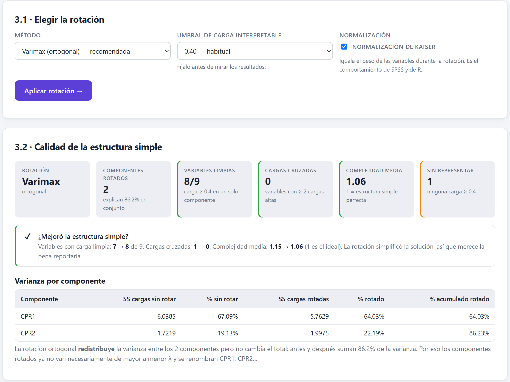
123456789
Figura 5.1. Las tarjetas 3.1 y 3.2 con el ejemplo simulado de morfometría foliar, dos componentes y rotación varimax.
1El método de rotación.
2El umbral de carga interpretable.
3La normalización de Kaiser, activa por defecto.
4Aplica la rotación.
5Variables que cargan en un solo componente.
6Complejidad media de Hofmann.
7Variables sin ninguna carga sobre el umbral.
8La comparación con la solución sin rotar.
9El reparto de la varianza tras rotar.
5.2Rotaciones ortogonales y oblicuas
Las ortogonales mantienen los ejes perpendiculares: los componentes siguen sin correlacionarse. Las oblicuas permiten que se correlacionen, lo que suele ser más realista en biología, donde las dimensiones —tamaño, forma, fisiología— rara vez son independientes.
Familia ortomax: Q(γ) = Σ a⁴ij − (γ/p) · Σj (Σi a²ij)² Complejidad de Hofmann de una variable: c = (Σ a²)² / Σ a⁴
Tabla 5.2. Las siete rotaciones de la app.
Rotación
Tipo
Parámetro
Qué hace y cuándo usarla
Varimax
ortogonal
γ = 1
Simplifica columnas: empuja cada carga hacia 0 o ±1 dentro de cada componente. La opción por defecto y la más reportada.
Quartimax
ortogonal
γ = 0
Simplifica filas: cada variable en el menor número de ejes. Tiende a dejar un primer factor general.
Equamax
ortogonal
γ = k/2
Compromiso entre las dos anteriores; inestable con pocas variables.
Parsimax
ortogonal
γ = p(k−1)/(p+k−2)
Busca la máxima parsimonia global; poco frecuente.
Promax
oblicua
κ = 4
Parte de varimax y eleva las cargas a la potencia κ para exagerar el contraste. Rápida; la preferida con muestras grandes.
Oblimin directo
oblicua
δ = 0
Familia general; δ controla cuánta correlación se permite.
Quartimin
oblicua
δ = 0 fijo
La oblicua más simple: oblimin con δ = 0.
Tabla 5.3. Detalles del cálculo que conviene conocer.
Aspecto
Qué hace la app
Algoritmo
Proyección de gradiente de Jennrich (2001, 2002), el de GPArotation en R, con hasta 1500 iteraciones. Si no converge, un aviso ámbar sugiere otra rotación o revisar variables casi redundantes.
Normalización de Kaiser
Divide cada fila de cargas entre la raíz de su comunalidad antes de rotar y la restaura después, para que las variables mal representadas no pesen menos.
Signo
Cada componente rotado se orienta para que predominen las cargas positivas. El signo es arbitrario: un CPR puede salir invertido respecto del CP sin rotar.
Orden
Los componentes rotados se ordenan por su suma de cargas al cuadrado, de mayor a menor.
Las tres matrices de una rotación oblicua
Con una rotación oblicua aparece, en la tarjeta 3.3 · Matriz de cargas rotadas, un recuadro adicional con la matriz de estructura y la correlación entre componentes.
Tabla 5.4. Patrón, estructura y Φ.
Matriz
Qué es
Uso
Patrón
El coeficiente único de cada variable sobre cada componente, controlando los demás. Son pesos de regresión: pueden superar |1|.
La que se interpreta y se reporta. Es la tabla principal de la tarjeta 3.3.
Estructura
La correlación simple variable–componente: patrón × Φ. Incluye el efecto de los otros componentes.
Valores más altos y menos limpios; útil como complemento.
Φ
La correlación entre los componentes rotados.
Dice si la oblicuidad hacía falta.
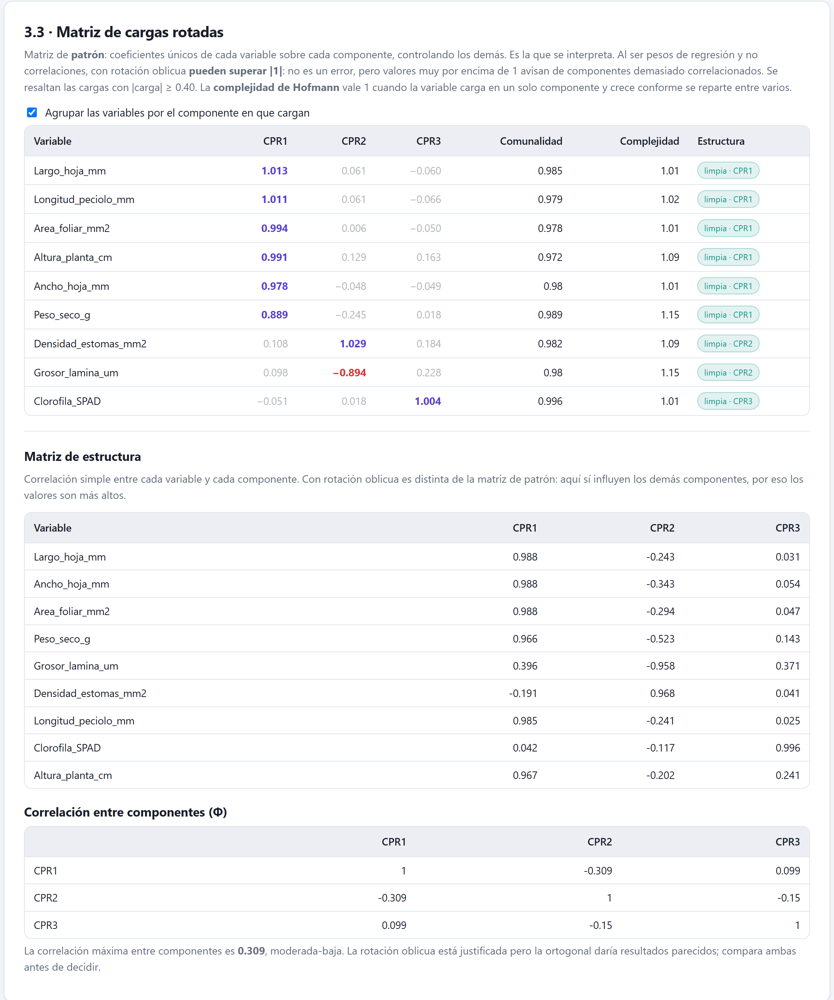
1234567
Figura 5.2. La tarjeta 3.3 con rotación promax y tres componentes. 1 Coeficientes de patrón mayores que 1: no es un error. 2 CPR2 quedó con Densidad_estomas positiva; en varimax salía negativa. 3 La matriz de estructura. 4 Grosor_lamina_um: 0.098 en el patrón de CPR1, pero 0.396 en la estructura, por su relación con CPR2. 5 La matriz Φ. 6 La correlación mayor, −0.309. 7 La lectura automática de Φ.
✓Regla de decisión · ¿ortogonal u oblicua?
Aplica primero una oblicua (promax) y mira la mayor |Φ| fuera de la diagonal. Si es…
entonces
menor que 0.15
Los ejes salieron casi ortogonales solos: vuelve a varimax, más parsimoniosa.
entre 0.15 y 0.32
La oblicua está justificada, pero la ortogonal dará casi lo mismo: compara y elige la más clara.
0.32 o más
Los componentes comparten más del 10 % de varianza: usa la oblicua e interpreta el patrón.
Son los mismos cortes que usa la nota automática bajo la tabla Φ. Con la morfometría foliar la mayor |Φ| es 0.244 con dos componentes y 0.309 con tres: las dos rotaciones cuentan la misma historia.
!Importante · con oblicuas, los porcentajes no suman
En una rotación oblicua las sumas de cuadrados de cada componente se solapan, así que no reparten la varianza. El indicador Componentes rotados · explican … en conjunto y la última columna de la tabla Varianza por componente suman esos cuadrados, y con oblicuas eso no es la varianza conjunta: con promax y tres componentes marcan 98.5 %, más que el 98.2 % real, y con oblimin δ = 0.5 llegan a un imposible 162.5 %. La varianza conjunta de los componentes es siempre la del Bloque 2, porque rotar no la cambia. Reporta esa, y para cada componente oblicuo reporta sus cargas, no un porcentaje.
iNota · valores positivos de δ
El campo δ admite hasta 0.8, pero valores positivos fuerzan componentes muy correlacionados. Con la morfometría foliar, δ = 0.5 subió la mayor |Φ| de 0.18 (con δ = −1) a 0.67 y apareció una carga cruzada. Deja δ = 0 salvo que tengas una razón teórica para cambiarlo.
5.3Calidad de la estructura simple
El objetivo de rotar es la estructura simple de Thurstone: que cada variable cargue fuerte en un componente y casi nada en los demás, y que cada componente tenga su propio grupo de variables. La tarjeta 3.2 · Calidad de la estructura simple mide qué tan cerca estás.
Tabla 5.5. Los indicadores de la tarjeta 3.2.
Indicador
Qué cuenta
Color
Rotación
El método y si es ortogonal u oblicua.
—
Componentes rotados
Cuántos se rotaron y la suma de sus cargas al cuadrado (ver el aviso de la sección 5.2).
—
Variables limpias
Superan el umbral en un solo componente.
verde ≥ 75 % · ámbar ≥ 50 % · rojo
Cargas cruzadas
Superan el umbral en dos o más componentes.
verde 0 · ámbar 1 o 2 · rojo
Complejidad media
La media de la complejidad de Hofmann: 1 si cada variable carga en un solo eje, hasta k si se reparte por igual.
verde < 1.3 · ámbar < 1.8 · rojo
Sin representar
Ninguna carga llega al umbral.
verde 0 · ámbar
Debajo, el recuadro ¿Mejoró la estructura simple? compara las variables limpias, las cargas cruzadas y la complejidad media antes y después de rotar, con el mismo umbral. Da la rotación por buena, en verde, si aumentan las variables limpias o baja la complejidad media; si no, en ámbar, sugiere otro método o reportar la solución sin rotar.
86.2 %
Lo que la rotación no toca
Sin rotar, CP1 y CP2 suman 67.09 % + 19.13 %; con varimax, CPR1 y CPR2 suman 64.03 % + 22.19 %. El total es el mismo, y también la comunalidad de cada variable.
Tabla 5.6. Columnas de la matriz de cargas rotadas.
Columna
Contenido
CPR1, CPR2…
Cargas rotadas (patrón, si la rotación es oblicua); resaltadas si superan el umbral.
Comunalidad
La misma que antes de rotar. Con oblicuas se calcula con Φ.
Complejidad
Complejidad de Hofmann de la variable.
Estructura
limpia · CPRj, cruzada o sin carga.
La lectura de cada componente
La tarjeta 3.4 redacta, para cada componente rotado, su porcentaje y las variables que superan el umbral, separadas en positivas y negativas. Añade dos observaciones: si hay cargas de los dos signos, lo llama eje de contraste; si solo una variable supera el umbral, lo marca en ámbar como frágil, porque un componente suele necesitar al menos tres variables marcadoras. El nombre del eje lo pones tú.
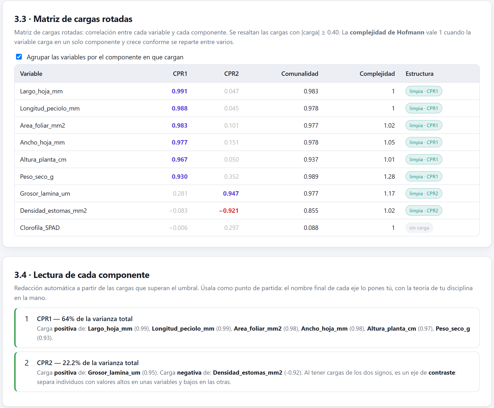
123456
Figura 5.3. Las tarjetas 3.3 · Matriz de cargas rotadas y 3.4 · Lectura de cada componente con varimax y dos componentes.
1Ordena las variables por el componente en que cargan.
2Complejidad de Hofmann de cada variable.
3Peso_seco_g: 0.352 en CPR2, bajo el umbral.
4Carga negativa resaltada en rojo.
5Clorofila_SPAD, sin carga en ningún eje.
6La lectura automática de CPR2: un eje de contraste.
Tabla 5.7. Las figuras de la tarjeta 3.5.
Figura
Qué muestra
Opciones propias
Mapa de calor de la matriz de cargas
Variables × componentes en escala de color, con los valores.
Paleta continua, agrupar por componente, ocultar bajo el umbral.
Plano de cargas
Las variables como vectores en dos componentes rotados, con su posición sin rotar en gris discontinuo.
Ejes, colorear por variable o por cos², círculo interior, unir con línea.
Cargas por componente
Barras por componente con la línea del umbral.
Columnas, ordenar por magnitud, colores positivo y negativo.
Varianza antes y después de rotar
La suma de cargas al cuadrado de cada componente, sin rotar y rotada.
Colores, valores, contorno.
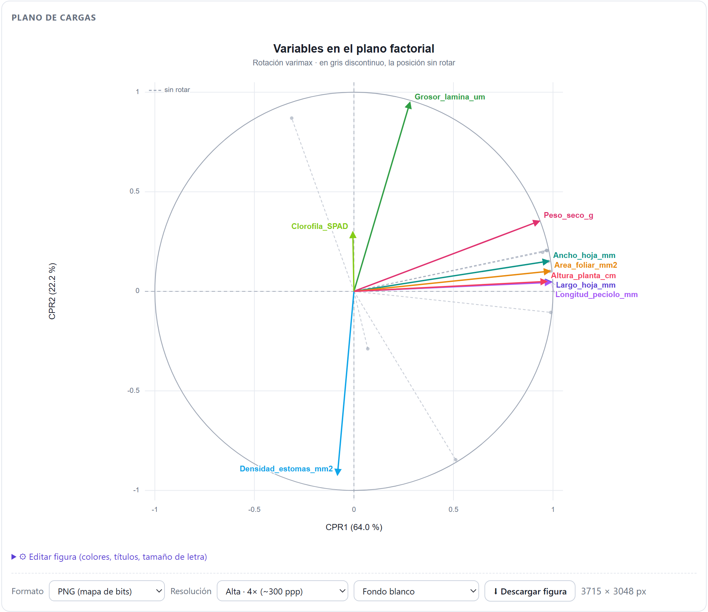
123456
Figura 5.4. El plano de cargas con varimax. 1 La leyenda de la posición sin rotar. 2 Grosor_lamina_um rotado, casi sobre CPR2. 3 Su posición sin rotar: aparece en el lado opuesto porque la app invirtió el signo de CPR2 (tabla 5.3), no porque la rotación girara 180°. 4 Clorofila_SPAD, un vector corto: está mal representada en este plano. 5 El círculo unitario, que solo se dibuja con matriz de correlaciones. 6 Cada eje con su porcentaje rotado.
Tabla 5.8. Las descargas del Bloque 3, en CSV.
Botón
Contenido
⬇ Cargas rotadas (CSV)
Cargas (o patrón), comunalidad, complejidad y tipo de estructura de cada variable.
⬇ Matriz de estructura (CSV)
Correlaciones variable–componente; igual a las cargas si la rotación es ortogonal.
⬇ Correlación entre componentes (CSV)
La matriz Φ; la identidad si la rotación es ortogonal.
⬇ Puntuaciones rotadas (CSV)
Puntuaciones de cada individuo en los componentes rotados, por el método de regresión de Thurstone sobre las variables estandarizadas, con las cualitativas.
El botón Ir a los mapas factoriales → lleva al Bloque 4.
5.4El umbral de las cargas
Una carga solo se interpreta si supera el umbral. El umbral no cambia la rotación —las cargas son las mismas—, pero decide qué variables cuentan como limpias, cruzadas o sin carga, qué se resalta en las tablas y figuras y qué redacta la lectura automática.
Tabla 5.9. Los umbrales de la app.
Umbral
Etiqueta en la app
Varianza compartida
Cuándo
0.30
mínimo
9 %
Muestras grandes (n ≥ 300) o análisis exploratorio.
0.40
habitual
16 %
El valor por defecto; muestras de 100 a 300.
0.50
prácticamente significativa
25 %
Cuando quieres solo relaciones sustantivas.
0.55
muestras pequeñas
30 %
n < 100, como pide la recomendación de tamaño del Bloque 1.
0.70
muy exigente
49 %
Resúmenes muy limpios; puede dejar componentes sin marcadoras.
Cambiar el umbral en la tarjeta 3.1 recalcula al momento, y también cambia la columna «antes» de la comparación con la solución sin rotar, que se evalúa con el mismo umbral. La tabla 5.10 lo muestra con la morfometría foliar, tres componentes y varimax.
Tabla 5.10. El mismo varimax con tres umbrales.
Umbral
Limpias sin rotar → rotadas
Cruzadas sin rotar → rotadas
Qué pasa
0.30
7 → 8
2 → 1
Peso_seco_g queda cruzada: 0.922 en CPR1 y 0.369 en CPR2.
0.40
8 → 9
1 → 0
Todas limpias tras rotar.
0.55
9 → 9
0 → 0
La comparación ya no distingue; solo baja la complejidad (1.21 → 1.10).
!Importante · fija el umbral antes de mirar
El umbral se decide por el tamaño de muestra y se declara en los métodos. Subirlo o bajarlo hasta que la tabla «se vea bien» es una forma de sobreajuste: con los datos de la tabla 5.10, pasar de 0.30 a 0.40 hace desaparecer una carga cruzada real de 0.369. Si una variable queda cerca del umbral, repórtala con su valor.
5.5Paso a paso: morfometría foliar
El ejemplo simulado de la app —Ejemplo simulado: morfometría foliar (120 × 9) en la tarjeta 1.1— tiene nueve medidas de hoja y planta y una cualitativa, el sitio. Es un caso típico para rotar: un eje de tamaño enorme y otros más finos. Las cifras son las de la app.
▸Morfometría foliar · 117 observaciones, nueve variables, escalado z
Carga el ejemplo simulado, prepara la matriz y extrae en el Bloque 2. KMO = 0.821. CP1 recoge 67.09 % y CP2 19.13 %. El consenso recomienda 2 componentes (86.2 %); Kaiser, MAP y Jolliffe proponían 3.
Sin rotar, CP1 mezcla seis medidas de tamaño con Grosor_lamina_um (0.511), que además carga −0.846 en CP2: una carga cruzada. Clorofila_SPAD tiene comunalidad 0.088.
Abre el Bloque 3, deja Varimax (ortogonal) — recomendada, umbral 0.40 y normalización, y pulsa Aplicar rotación →.
La tarjeta 3.2 (figura 5.1) muestra 8 de 9 variables limpias, ninguna cruzada y complejidad 1.06; la comparación dice 7 → 8 limpias y 1.15 → 1.06: la rotación mejoró.
La matriz (figura 5.3) queda en dos grupos. CPR1, tamaño (64.03 %): largo, peciolo, área, ancho, altura y peso seco, de 0.93 a 0.99. CPR2, estructura de la lámina (22.19 %): grosor 0.947 frente a densidad de estomas −0.921, un contraste entre hojas gruesas con pocos estomas y hojas delgadas con muchos.
Clorofila_SPAD sigue sin carga: con dos componentes no pertenece a ninguno.
Para comprobar la oblicuidad, elige Promax (oblicua). La mayor |Φ| es 0.244: la nota dice que la oblicua está justificada pero la ortogonal da resultados parecidos. Los grupos no cambian.
Por curiosidad, vuelve al Bloque 2 y retén 3. Tras varimax, CPR3 es solo Clorofila_SPAD (0.996), y la lectura automática lo marca como frágil: una sola variable marcadora.
Lectura. La solución de dos componentes con varimax es la que se reporta: dos ejes con nombre y sin cargas cruzadas. El tercer componente que pedían Kaiser y el MAP no es una dimensión, sino la varianza propia de la clorofila, que no se relaciona con la forma de la hoja; se declara como variable sin estructura común. La rotación no creó los grupos: los hizo visibles. CP2 sin rotar ya contenía el contraste grosor–estomas, pero mezclado con el tamaño.
▸Cómo reportarlo
«Se realizó un ACP sobre la matriz de correlaciones de nueve variables (n = 117). Se retuvieron dos componentes, que explican el 86.2 % de la varianza, con base en el análisis paralelo y el gráfico de sedimentación. Se aplicó una rotación varimax con normalización de Kaiser y se interpretaron las cargas con |a| ≥ 0.40. El primer componente rotado (64.0 %) agrupó las medidas de tamaño y el segundo (22.2 %) contrapuso el grosor de la lámina a la densidad de estomas. El contenido de clorofila no cargó en ninguno (comunalidad 0.09). Una rotación promax dio la misma estructura, con una correlación entre componentes de 0.24.»
Con la solución rotada, el siguiente capítulo entra al Bloque 4: los mapas factoriales de variables e individuos.
6
Capítulo seis · Bloque 4
Gráficos factoriales
Cómo construir y leer los mapas: el círculo de correlaciones, el mapa de individuos y el biplot, con las dos medidas que evitan malinterpretarlos —cos² y contribuciones—, las elipses de grupo y los elementos suplementarios. Incluye los mapas propios del AC, el ACM, el AFDM y el AFM, y el editor que comparten todas las figuras de la app.
6.1Las dos nubes: individuos y variables
6.2cos² y contribuciones
6.3Círculo, mapa de individuos y biplot
6.4Elipses y elementos suplementarios
6.5Los mapas del AC, ACM, AFDM y AFM
6.6El editor de figuras
6.7Paso a paso
6.1Las dos nubes: individuos y variables
Un ACP produce dos representaciones del mismo análisis, y cada una se lee con reglas distintas. Confundirlas —leer distancias entre flechas o ángulos entre puntos— es el error más común al interpretar un mapa factorial.
Tabla 6.1. Las dos nubes.
Nube de individuos
Nube de variables
Qué se dibuja
Un punto por observación.
Un vector por variable.
Coordenada
La puntuación sobre el eje.
La carga: la correlación con el eje.
Qué se lee
Distancias: dos individuos cercanos tienen perfiles parecidos.
Ángulos desde el origen, y la longitud del vector.
Escala
La de las puntuaciones; cambia de un eje a otro.
Siempre entre −1 y 1 con matriz de correlaciones.
Figura de la app
Mapa de individuos.
Círculo de correlaciones.
El Bloque 4 se activa en la barra de pasos al aplicar una rotación en el Bloque 3 —también vale Sin rotar (comparación)— y necesita al menos dos componentes retenidos. Tiene una tarjeta de teoría con seis temas y la tarjeta 4.1 · Construir los mapas, con dos opciones. Al pulsar Generar mapas factoriales → aparecen siete tarjetas de resultados y se activan el Bloque 5 y el agrupamiento (5b).
Tabla 6.2. Las opciones de la tarjeta 4.1.
Opción
Valores
Nota
Solución a representar
Sin rotar (componentes originales), por defecto, o Rotada (la del Bloque 3).
Si no hay rotación, o fue «Sin rotar», se usa la original. Cambiarla exige volver a generar los mapas.
Variable de agrupación
Sin agrupar o cualquier columna cualitativa del Bloque 1, con su número de niveles.
Colorea individuos y dibuja elipses. Cambiarla redibuja las figuras al momento.
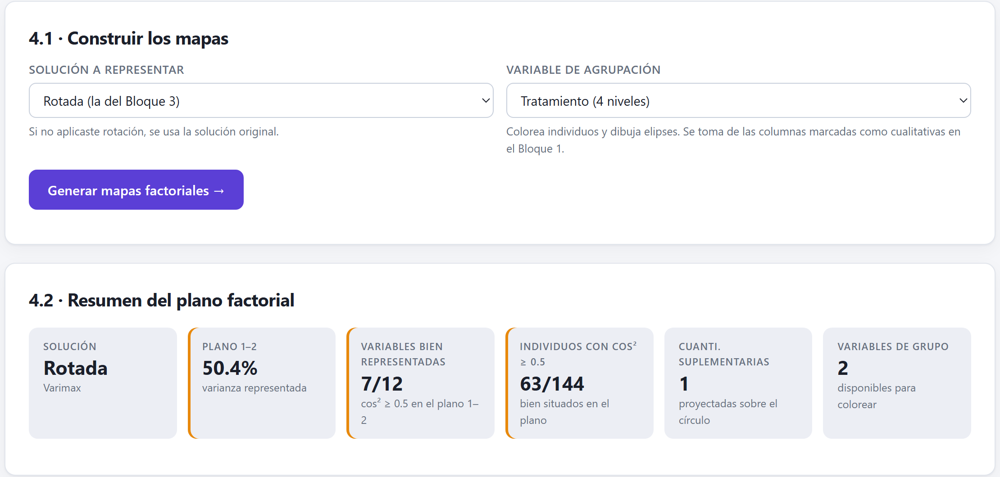
1234567
Figura 6.1. Las tarjetas 4.1 y 4.2 · Resumen del plano factorial con proyecto_integrador_agronomia.csv, rotación varimax y agrupación por tratamiento.
1La solución: sin rotar o rotada.
2La cualitativa que colorea los mapas.
3Construye los mapas.
4Varianza del plano 1–2, en ámbar.
5Variables con cos² ≥ 0.5 en el plano.
6Individuos bien situados en el plano.
7Suplementarias proyectadas.
Tabla 6.3. Los indicadores de la tarjeta 4.2.
Indicador
Qué cuenta
Color
Solución
Sin rotar o rotada, con el método.
—
Plano 1–2
Varianza de los dos primeros ejes de la solución elegida.
verde ≥ 60 % · ámbar ≥ 45 % · rojo
Variables bien representadas
Variables activas con cos² ≥ 0.5 en el plano 1–2.
verde ≥ 70 % · ámbar
Individuos con cos² ≥ 0.5
Individuos bien situados en el plano 1–2.
verde ≥ 60 % · ámbar
Cuanti. suplementarias
Cuántas se proyectan sobre el círculo.
—
Variables de grupo
Cualitativas disponibles para colorear.
—
6.2cos² y contribuciones
Un mapa plano muestra lo que cabe en dos ejes y oculta el resto. Dos medidas dicen qué se puede leer en él: el cos², qué tan bien está representado un elemento, y la contribución, cuánto pesó en construir el eje.
La coordenada al cuadrado. Con correlaciones, cos² = carga²; su suma en todos los ejes es 1.
cos² entre la varianza del eje, en %. Suma 100 por eje.
100/p
Individuos
Coordenada² entre la distancia² al centro en el espacio completo, con todos los componentes, no solo los retenidos.
Coordenada² entre la suma de coordenadas² del eje, en %.
100/n
✓Regla de decisión · ¿puedo leer este elemento en el plano?
cos² en el plano 1–2
Etiqueta de la app
Lectura
≥ 0.70
muy buena
Su posición es fiable.
0.50 a 0.70
aceptable
Léelo, con prudencia en los detalles.
0.30 a 0.50
pobre
Solo la dirección general.
< 0.30
no interpretable
Está mal proyectado: su información está en otros ejes. Busca otro plano.
Un vector corto no es una variable poco importante: es una variable que este plano no muestra. Un individuo con contribución alta y cos² bajo es sospechoso: suele ser un atípico que arrastra el eje.
Dónde aparecen
Tabla 6.5. cos² y contribuciones en el Bloque 4.
Lugar
Contenido
Tabla bajo el círculo (4.3)
Coordenadas de cada variable en todos los ejes retenidos, cos² del plano 1–2, contribución al plano y la etiqueta de calidad, ordenadas por cos².
Individuos más influyentes (4.4)
Los 12 individuos que más aportan al plano 1–2, con coordenadas, cos² y contribución. La nota da el valor esperado, 200/n %.
Figura Contribuciones (4.6)
Barras de variables o individuos, por eje o por plano, con la línea roja del valor esperado.
Figura Calidad de representación (cos²) (4.6)
Mapa de calor variables × ejes.
Color de los vectores y puntos
El círculo colorea por cos² por defecto; el mapa de individuos puede hacerlo desde el editor.
iNota · dos formas de sumar el plano
En las tablas, Contrib. plano (%) es la suma de las contribuciones a los dos ejes, así que la columna suma 200 y su referencia es 200/p o 200/n. En la figura de contribuciones, la opción Plano 1–2pondera cada eje por su varianza, suma 100 y su referencia es 100/p. Con iris, Sepal.Width marca 92.5 en la tabla (7.3 en CP1 + 85.3 en CP2). Las dos ordenan igual cuando los ejes pesan parecido; si no, compara solo dentro de cada una.
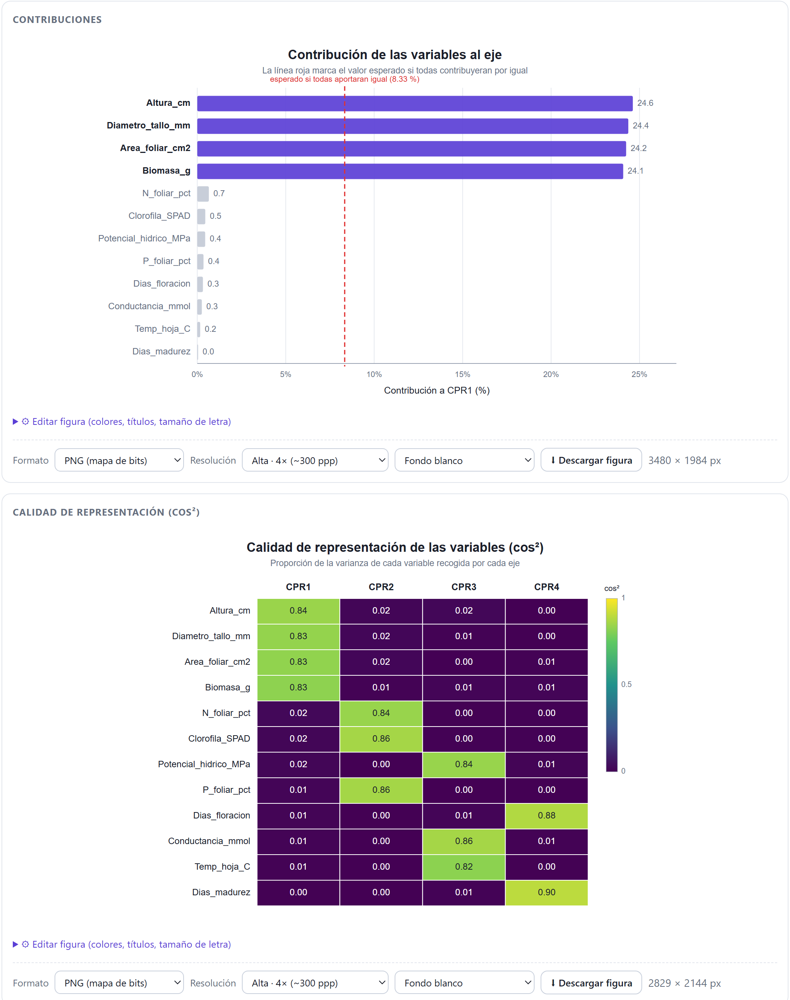
12345
Figura 6.2. La tarjeta 4.6 · Contribuciones y calidad con el proyecto integrador y varimax. 1 La línea del valor esperado, 100/12 = 8.33 %. 2 Las cuatro variables de crecimiento definen CPR1, con 24 % cada una. 3 Las demás, en gris, casi no aportan. 4 En el mapa de cos², cada variable brilla en un solo eje: la firma de una rotación limpia. 5 La escala de color va de 0 a 1.
6.3Círculo, mapa de individuos y biplot
El círculo de correlaciones
θCómo se lee
Vectores en la misma dirección: variables correlacionadas positivamente.
Vectores opuestos: correlación negativa.
Vectores perpendiculares: sin correlación en este plano.
Vectores largos, cerca del círculo unitario: bien representados. El círculo interior punteado marca 0.71, es decir, cos² = 0.5.
Las reglas solo valen para vectores largos. El ángulo entre dos vectores cortos no dice nada.
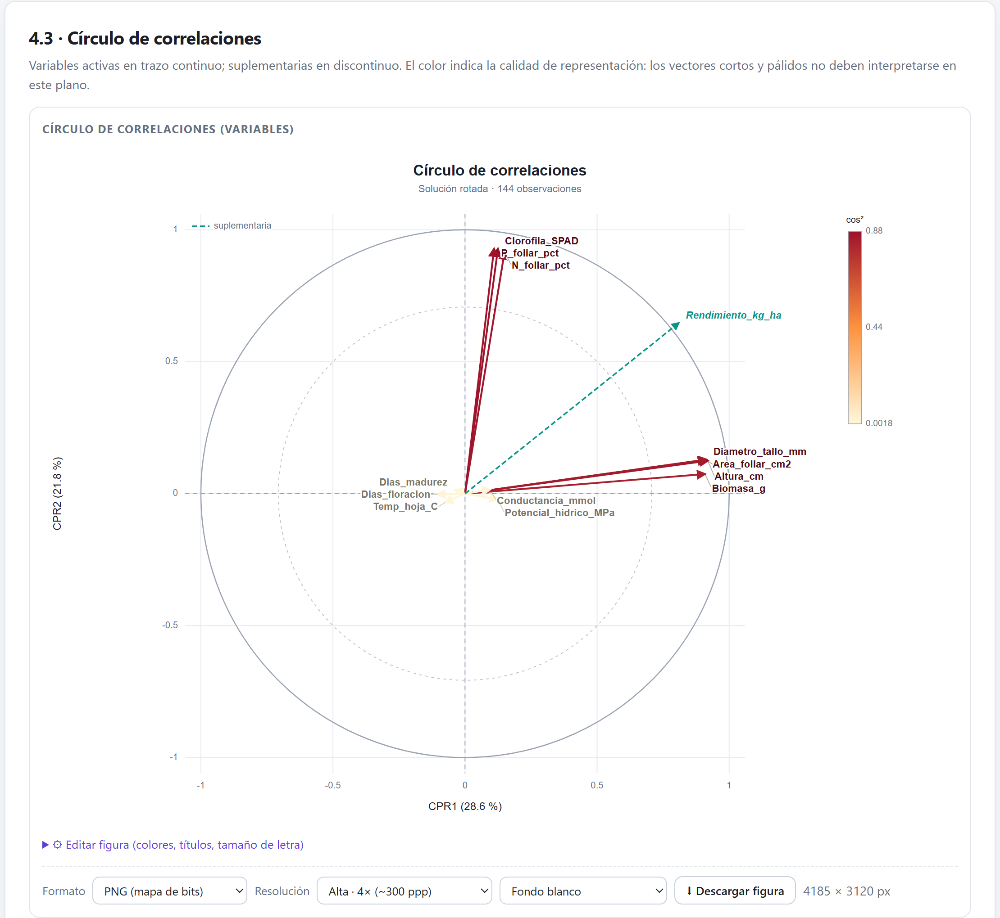
123456
Figura 6.3. La tarjeta 4.3 · Círculo de correlaciones con el proyecto integrador y varimax.
1Leyenda: las suplementarias van en trazo discontinuo.
2Rendimiento_kg_ha, suplementaria.
3Escala de cos²: los vectores pálidos no se leen.
4Crecimiento: cuatro vectores juntos sobre CPR1.
5Agua y fenología, casi en el origen.
6El círculo interior, cos² = 0.5.
El mapa de individuos
La tarjeta 4.4 · Mapa de individuos dibuja un punto por observación. Sin variable de agrupación los puntos van en un color; con ella, cada grupo lleva su color, su elipse y su centroide, un rombo con el nombre del grupo. Los ejes no tienen la misma escala por defecto: el eje con menos varianza se estira. Para leer distancias con rigor marca Misma escala en ambos ejes en el editor.
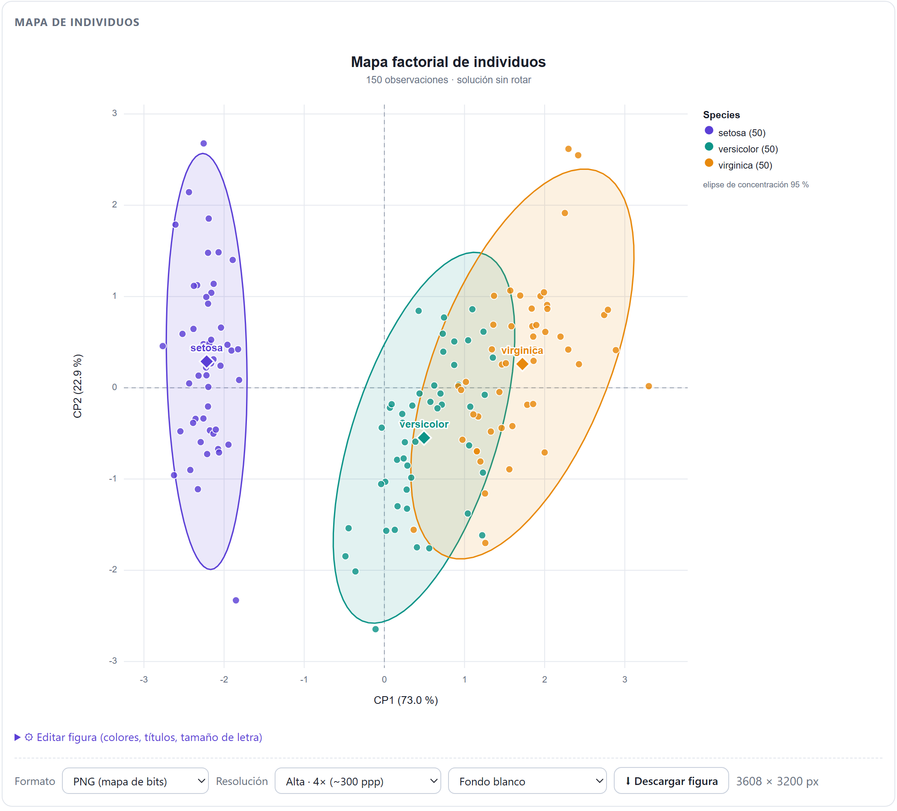
123456
Figura 6.4. El mapa de individuos de iris, sin rotar y agrupado por especie. 1 Setosa, separada de las otras dos a lo largo de CP1. 2 El centroide de virginica. 3 El tipo y nivel de la elipse aparecen bajo la leyenda. 4 Versicolor y virginica se solapan. 5 Un individuo fuera de la elipse del 95 %. 6 Cada eje con su porcentaje.
El biplot
La tarjeta 4.5 · Biplot superpone individuos y variables. Individuos y variables viven en escalas distintas, así que las flechas se multiplican por un factor que se ajusta en Escala de las flechas (0.2 a 1.6; 0.8 por defecto). Ese factor no tiene significado estadístico.
✓Regla de decisión · ¿qué se lee en un biplot?
Sí
No
La proyección de un individuo sobre la dirección de una flecha: lejos en su sentido, valores altos en esa variable.
La longitud absoluta de una flecha comparada con la distancia entre puntos.
Grupos de individuos en la dirección de un grupo de variables: se caracterizan por ellas.
La distancia entre un punto y la punta de una flecha.
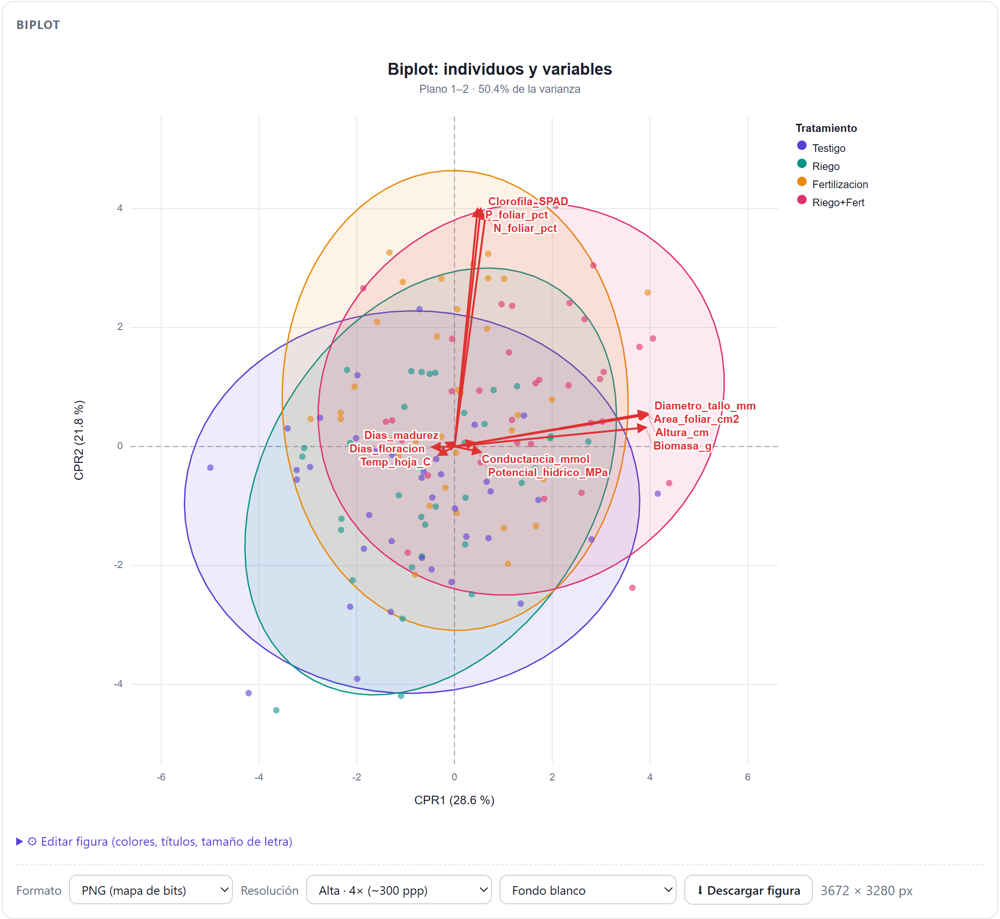
12345
Figura 6.5. El biplot del proyecto integrador con varimax, agrupado por tratamiento. 1 Las flechas de nutrición. 2 La elipse de riego + fertilización, desplazada hacia crecimiento y nutrición altos. 3 La del testigo, hacia valores bajos de ambos. 4 Las flechas cortas de agua y fenología: no se leen en este plano. 5 La leyenda de grupos.
Tabla 6.6. Opciones propias de cada figura del Bloque 4, además de las comunes (sección 6.6).
Figura
Opciones
Círculo
Colorear por cos², contribución o variable; ocultar cos² menor a un valor; solo las N mejores; mostrar suplementarias y su color; círculo unitario y círculo 0.71.
Individuos
Colorear por grupo, cos² o contribución; envoltura por grupo y nivel; relleno y borde de la elipse; centroides y su etiqueta; tamaño según cos²; etiquetas: ninguna, todas las que quepan o las N que más contribuyen; misma escala en ambos ejes.
Biplot
Escala, color y grosor de las flechas; nombres de variables; envoltura por grupo.
Contribuciones
Variables o individuos; eje o plano 1–2; solo los N mayores; línea de referencia; colores sobre y bajo el umbral.
cos²
Paleta continua; ordenar por los primeros N ejes; escala de 0 a 1 o ajustada al máximo.
Todos los mapas permiten elegir el Eje horizontal y el Eje vertical entre los componentes retenidos. El plano 1–2 no es obligatorio: si una variable queda corta en él, el plano 1–3 o el 3–4 pueden mostrarla.
6.4Elipses y elementos suplementarios
Las envolturas de grupo se eligen en el editor del mapa de individuos y del biplot. Responden a preguntas distintas.
Tabla 6.7. Las tres envolturas.
Envoltura
Qué encierra y cómo se calcula
Úsala para
Elipse de concentración (por defecto)
Aproximadamente el 90, 95 o 99 % de los individuos del grupo: la covarianza del grupo en el plano con el radio de χ² con 2 gl. Su tamaño no depende de n.
Describir la dispersión y el solapamiento real.
Elipse de confianza de la media
La región donde está el centroide: la misma elipse con el radio dividido entre √n.
Sugerir que los centroides difieren. Con n grande se vuelve diminuta.
Envolvente convexa
El polígono mínimo que contiene todos los puntos. No supone ninguna distribución.
Grupos no elípticos o con pocos individuos.
Un grupo necesita al menos tres individuos para su elipse. El nivel (90, 95 o 99 %) se aplica a las dos elipses y aparece escrito bajo la leyenda.
!Importante · una elipse no es una prueba
Que dos elipses de la media no se toquen sugiere que los centroides difieren, pero no es una prueba estadística: para eso hace falta un MANOVA, un PERMANOVA o un análisis discriminante. Y el ACP no busca separar grupos, porque ignora la variable de agrupación; si tu objetivo es discriminar, la herramienta es otra. Declara en el pie de figura el tipo de elipse y su nivel.
Elementos suplementarios
Las columnas que en el Bloque 1 marcaste como cuantitativas suplementarias o cualitativas no intervinieron en los ejes, pero se proyectan sobre ellos. Aparecen en la tarjeta 4.7 · Elementos suplementarios, que solo se muestra si hay alguno.
Tabla 6.8. Cómo se proyectan.
Tipo
Coordenada
Dónde se ven
Cuantitativa
Su correlación de Pearson con las coordenadas de los individuos en cada eje, con los valores no vacíos (al menos 3). La tabla da los n válidos y el cos² del plano.
Vector discontinuo en el círculo (color propio, editable).
Categoría
El centroide: la media de las coordenadas de los individuos de esa categoría.
Rombos del mapa de individuos, al agrupar por esa variable.
!Importante · suplementarias con la solución rotada
Con la solución rotada, la app gira las puntuaciones de los individuos con la misma matriz que las cargas. Como los componentes originales tienen varianzas distintas, las puntuaciones rotadas pueden quedar correlacionadas aunque la rotación sea ortogonal: en el proyecto integrador, CPR1 y CPR2 se correlacionan 0.258. Por eso, en esa solución, el cos² del plano de una suplementaria puede pasar de 1 —el rendimiento marca 1.073— y su vector sale del círculo. Lee cada correlación por separado y, si vas a reportar el cos² de una suplementaria, usa la solución sin rotar.
Tabla 6.9. Las descargas de la tarjeta 4.8, en CSV.
Botón
Contenido
⬇ Individuos: coordenadas, cos² y contribuciones (CSV)
Por individuo, con sus cualitativas, en todos los ejes retenidos.
⬇ Variables: coordenadas, cos² y contribuciones (CSV)
Por variable activa, en todos los ejes retenidos.
⬇ Elementos suplementarios (CSV)
Correlaciones de las cuantitativas y centroides de las categorías.
El botón Ir a la interpretación → lleva al Bloque 5. Si vuelves a extraer o cambias el número de componentes, los mapas se borran y hay que generarlos otra vez; si repites la rotación, pulsa de nuevo Generar mapas factoriales → para que los mapas usen la nueva.
6.5Los mapas del AC, ACM, AFDM y AFM
Con un método distinto del ACP, el Bloque 4 se activa al ejecutar el método en el Bloque 2 y la tarjeta 4.1 conserva su botón, pero sus dos opciones no se usan: no hay rotación, y la variable de grupo se elige en el editor del mapa de individuos (Variable de grupo). Los resultados son otros.
Tabla 6.10. Las tarjetas del Bloque 4 según el método.
Método
Tarjetas, además de 4.1 · Resumen del plano
AC
4.2 · Mapa simétrico: filas y columnas, en coordenadas principales. La opción Vista asimétrica (columnas en coordenadas estándar) permite leer la relación fila–columna con rigor. No hay mapa de individuos: el AC analiza una tabla.
ACM
4.2 · Mapa de categorías, cada una en el baricentro de sus individuos y coloreada por su variable; 4.3 · Mapa de individuos.
AFDM
4.2 · Círculo de correlaciones (cuantitativas); 4.3 · Mapa de variables: cuantitativas y cualitativas juntas, con r² y η²; 4.4 · Mapa de categorías; 4.5 · Mapa de individuos.
AFM
4.2 · Mapa de los bloques, por su inercia en cada eje; 4.3 · Círculo de correlaciones por bloque, con todas las variables; 4.4 · Mapa de individuos; 4.5 · Puntos parciales.
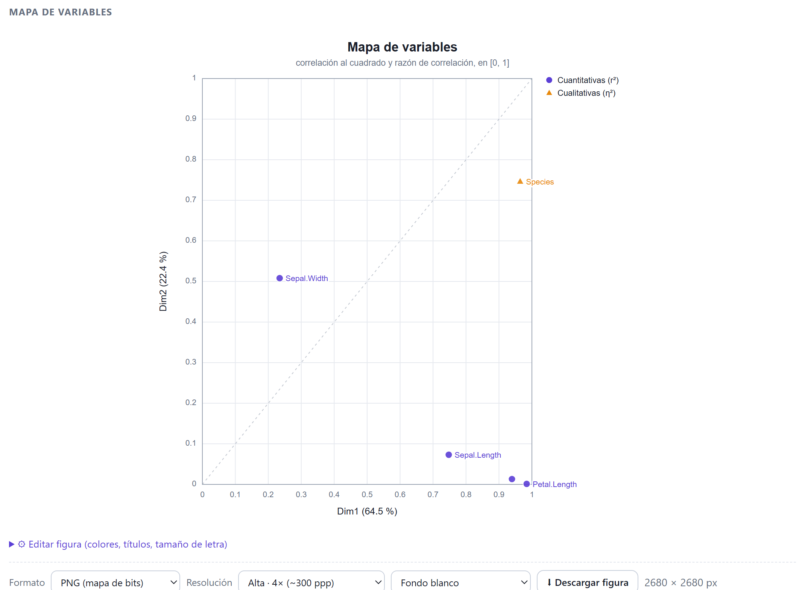
1234
Figura 6.6. El mapa de variables de un AFDM de iris con la especie activa. 1 Species: η² = 0.964 en Dim1 y 0.746 en Dim2, la única variable fuerte en los dos ejes. 2 Petal.Width (r² = 0.939 y 0.013) sin nombre: su etiqueta no cabía junto a la de Petal.Length. 3 La diagonal de referencia. 4 Sepal.Width, la que define Dim2 entre las cuantitativas.
Tabla 6.11. Cómo leer los mapas propios de cada método.
Mapa
Lectura
Simétrico del AC
Distancias entre filas, o entre columnas, se leen directamente; la distancia de una fila a una columna solo orienta.
Categorías (ACM, AFDM)
Dos categorías cercanas aparecen juntas en los mismos individuos. Las categorías raras quedan lejos del centro: mira su cos² antes de leerlas.
Variables (AFDM)
Cuantitativas por r² y cualitativas por η², en [0, 1]. Las variables arriba a la derecha pesan en los dos ejes.
Bloques (AFM)
Un bloque cerca de (1, 0) está descrito casi por completo por el eje 1; dos bloques cercanos cuentan la misma historia.
Puntos parciales (AFM)
Cada individuo visto desde cada bloque; el rombo es la posición global. Líneas abiertas: los bloques discrepan sobre ese individuo. Por defecto muestra los 8 que más contribuyen.
iNota · detalles de estos mapas
Con estos métodos el Bloque 4 no ofrece descargas: las coordenadas están en la tarjeta 2.5 del Bloque 2. Los ejes se llaman Dim1, Dim2… En el AFM, el círculo colorea los vectores por contribución, no por bloque: para distinguir bloques usa el mapa de los bloques o los puntos parciales. El botón del final es Ir a la interpretación →.
6.6El editor de figuras
Todas las figuras de la app —las de este bloque y las de los demás— comparten el mismo editor. Se abre con ⚙ Editar figura (colores, títulos, tamaño de letra) debajo de cada figura, y cada cambio redibuja la figura al momento.
Tabla 6.12. Los controles que se repiten en las figuras.
Grupo
Controles
Textos
Título, subtítulo y títulos de los ejes. Un título de eje vacío usa el automático, con el porcentaje.
Paletas de grupos
PCAPro (violeta), Nature (NPG), Lancet, Clinical Oncology, NEJM, D3 clásica, Suave, Okabe–Ito (daltónicos), Botánica y Escala de grises.
Cuatro deslizadores, presentes en todas las figuras: Letra: todo (0.6 a 2.6) y, por separado, títulos, ejes y marcas, y etiquetas y leyenda (0.6 a 3). Si un texto agrandado se sale, el lienzo se amplía solo.
Aspecto
Tema (Claro, Papel, Oscuro, Minimalista), tipografía (Helvetica / Arial, Serif, Segoe UI, Monoespaciada), tamaño en píxeles, marco, leyenda y ejes en cero.
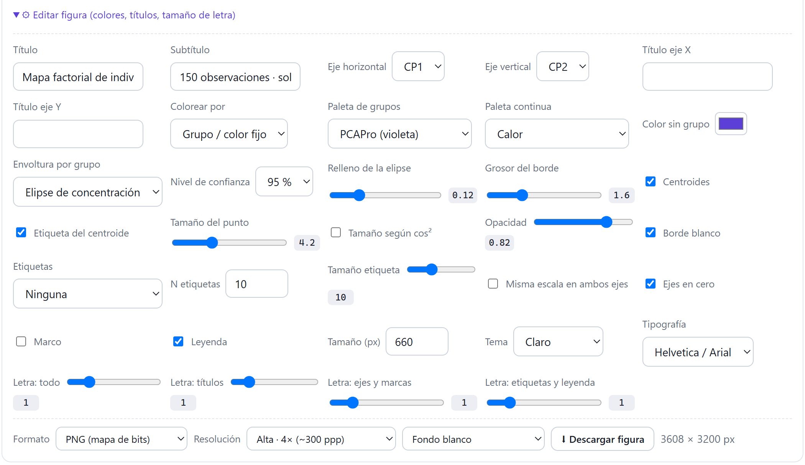
12345678
Figura 6.7. El editor del mapa de individuos, abierto.
1Abre y cierra el editor.
2Los ejes del mapa.
3El tipo de envoltura.
4Su nivel de confianza.
5Qué individuos llevan nombre.
6Misma escala en los dos ejes.
7Los cuatro tamaños de letra.
8El tamaño final de la imagen.
Tabla 6.13. La barra de exportación, bajo cada figura.
Control
Opciones
Formato
PNG (mapa de bits), SVG (vectorial, editable), JPG y WEBP.
Resolución
Pantalla 2× (~150 ppp), Alta 4× (~300 ppp, por defecto), Muy alta 6×, Publicación 8× (~600 ppp) y Máxima 12× (~900 ppp). No aplica al SVG.
Fondo
Blanco o transparente; el transparente solo funciona con PNG.
⬇ Descargar figura
Descarga con el nombre del archivo de datos y de la figura. Al lado se lee el tamaño final en píxeles.
✓Regla de decisión · ¿cómo exporto para publicar?
Si la revista…
entonces
Acepta vectores (PDF, EPS, SVG)
SVG: se escala sin perder nitidez y se edita en Inkscape o Illustrator.
Pide mapa de bits
PNG a 8× (~600 ppp); 4× como mínimo.
Imprime en blanco y negro o quieres accesibilidad
Paleta Okabe–Ito o Escala de grises, y Cividis para escalas continuas.
La figura va en una presentación con fondo de color
PNG con fondo transparente, o el tema Oscuro.
Pon siempre el porcentaje en los ejes, declara si la solución está rotada y di en el pie qué elipse usaste. El signo de un eje es arbitrario: si lo inviertes para leer mejor, decláralo.
!Importante · los cambios no se guardan al recalcular
El informe del Bloque 6 incluye las figuras tal como las dejaste. Pero si vuelves a generar los mapas, cambias de idioma y regeneras, o recalculas un bloque anterior, las figuras se vuelven a crear con los valores por defecto y se pierden los títulos y colores editados. Edita las figuras al final, cuando el análisis ya no vaya a cambiar.
6.7Paso a paso
Un análisis completo con el archivo proyecto_integrador_agronomia.csv: 150 parcelas de un ensayo con cuatro tratamientos —testigo, riego, fertilización y riego con fertilización— en tres bloques, y trece variables de planta. La pregunta es qué dimensiones resumen la respuesta de las plantas y cómo se reparten los tratamientos en ellas. Las cifras son las de la app.
▸Proyecto integrador · 144 parcelas completas, doce variables, escalado z
En el Bloque 1 deja Parcela como identificador y Tratamiento y Bloque como cualitativas, y desmarca Rendimiento_kg_ha: pasa a suplementaria, porque es la respuesta que queremos explicar. Al preparar quedan 144 filas de 150 y KMO = 0.783.
En el Bloque 2, seis de los ocho criterios —Horn, Kaiser, bastón roto, MAP, 80 % y Jolliffe— coinciden en 4 componentes, que explican el 87.2 %.
En el Bloque 3, varimax deja 12 de 12 variables limpias y complejidad 1.05: CPR1 crecimiento (altura, diámetro, área foliar y biomasa, de 0.91 a 0.92), CPR2 nutrición (clorofila, P y N foliar, de 0.92 a 0.93), CPR3 agua (conductancia 0.929, potencial hídrico 0.917, temperatura de la hoja −0.907) y CPR4 fenología (días a madurez 0.947 y a floración 0.938).
En el Bloque 4 elige Rotada (la del Bloque 3) y agrupa por Tratamiento. El plano CPR1–CPR2 recoge 50.4 % (28.6 + 21.8), en ámbar; 7 de 12 variables y 63 de 144 parcelas están bien representadas en él.
El círculo (figura 6.3) muestra dos haces perpendiculares: crecimiento y nutrición son independientes. Agua y fenología quedan en el origen: no se leen aquí. En el editor elige Eje horizontal CPR3 y Eje vertical CPR4 para verlas.
El rendimiento, suplementario, se correlaciona 0.809 con CPR1 y 0.647 con CPR2: sube con el crecimiento y con la nutrición.
Los centroides de la tabla 4.7 ordenan los tratamientos: testigo (−0.87, −0.94), riego (−0.49, −0.59), fertilización (0.01, 0.77) y riego + fertilización (1.36, 0.80). La fertilización mueve la nutrición; solo la combinación mueve también el crecimiento. En CPR3, riego queda en 0.48 y fertilización en −0.97.
Los centroides de Bloque quedan todos a menos de 0.31 del origen: el bloque no ordena las parcelas.
Las elipses de concentración del biplot (figura 6.5) se solapan mucho: las diferencias entre centroides son reales en promedio, pero una parcela suelta no se asigna a su tratamiento por su posición.
En Individuos más influyentes, PAR005 y PAR058 aportan 8.21 % y 7.97 % al plano, cuando lo esperado es 1.39 %. Tienen cos² de 0.86 y 0.96: están bien representadas, así que son parcelas extremas, no errores de proyección. Conviene revisar su captura.
Lectura. El ensayo se resume en cuatro dimensiones independientes, y el plano 1–2 muestra las dos que más importan para el rendimiento. La fertilización actúa sobre la nutrición y el riego sobre el estado hídrico, pero solo su combinación desplaza las parcelas hacia el crecimiento alto, que es donde apunta el rendimiento. Para afirmar que los tratamientos difieren hace falta una prueba —un MANOVA o un PERMANOVA sobre las puntuaciones—; los mapas muestran dónde y en qué dimensión.
▸Cómo describir la figura
«Figura 3. Biplot del plano formado por los dos primeros componentes rotados (varimax), que explican el 50.4 % de la varianza (28.6 % y 21.8 %). Los puntos son parcelas coloreadas por tratamiento, con elipses de concentración del 95 %; las flechas, las variables activas. El rendimiento, proyectado como variable suplementaria, se correlacionó 0.81 con el primer componente y 0.65 con el segundo.»
Con los mapas construidos, el siguiente capítulo entra al Bloque 5: la lectura de cada eje y el borrador de la sección de resultados.
7
Capítulo siete · Bloque 5
Interpretación
De los números a las frases: cómo nombrar cada componente, qué variables y categorías lo describen, cómo comparar grupos sin caer en la circularidad, cuánto de la estructura reproduce la solución y cómo convertir todo en un borrador de la sección de resultados.
7.1Nombrar un eje
7.2Descripción de dimensiones y valores test
7.3Comparar grupos sin caer en la circularidad
7.4Calidad del ajuste
7.5El borrador de resultados
7.6Interpretar AC, ACM, AFDM y AFM
7.7Paso a paso
7.1Nombrar un eje
Un componente es una combinación lineal y, por sí mismo, no significa nada. Interpretarlo es encontrar el concepto de tu disciplina que explica por qué esas variables varían juntas, y darle un nombre corto que un lector entienda sin mirar la tabla de cargas.
θEl procedimiento
Mira las variables con |carga| por encima del umbral que fijaste.
Sepáralas por signo. Si hay de los dos, el eje es un contraste: opone dos conjuntos de características.
Busca qué tienen en común: tamaño, vigor, un gradiente ambiental, una estrategia de uso de recursos.
Ponle un nombre corto y sustantivo. Si no puedes nombrarlo, probablemente no debiste retenerlo.
Confírmalo con las variables suplementarias, las categorías y los individuos extremos.
El Bloque 5 se activa al generar los mapas del Bloque 4 y trabaja sobre la solución que elegiste ahí: sin rotar o rotada. Tiene una tarjeta de teoría con cinco temas y la tarjeta 5.1 · Configuración, con dos opciones. Al pulsar Interpretar componentes → aparecen siete tarjetas de resultados y se activa el Bloque 6.
Tabla 7.1. Las opciones de la tarjeta 5.1.
Opción
Valores
Nota
Umbral de carga interpretable
0.30, 0.40 (por defecto), 0.50, 0.55 y 0.70.
Es independiente del umbral del Bloque 3: conviene usar el mismo.
Comparar grupos sobre los componentes
No comparar grupos o una cualitativa del Bloque 1.
Añade la tarjeta 5.5 con un ANOVA y un Kruskal–Wallis por componente.
Cambiar cualquiera de las dos opciones vuelve a interpretar al momento. Los nombres que escribiste se conservan mientras no cambie el número de componentes.
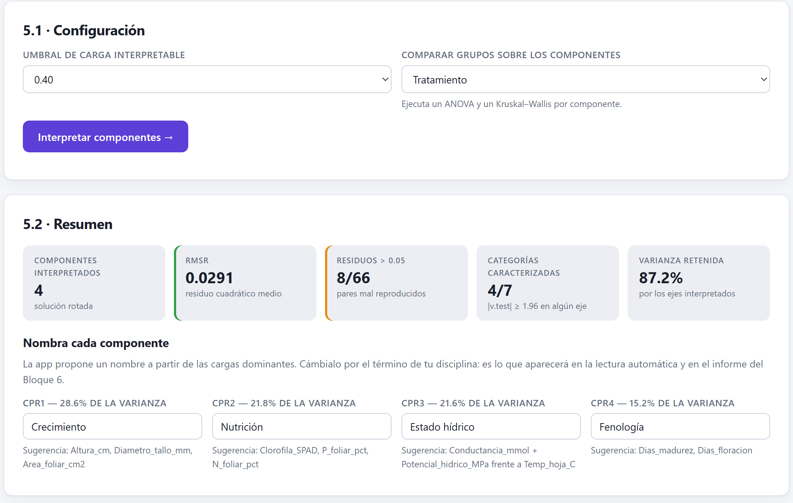
1234567
Figura 7.1. Las tarjetas 5.1 y 5.2 · Resumen con el proyecto integrador, rotación varimax y los cuatro componentes ya nombrados.
1El umbral de carga.
2La cualitativa que se compara.
3Lanza la interpretación.
4RMSR en verde: buen ajuste.
5Pares mal reproducidos, en ámbar.
6Componente y su porcentaje.
7La sugerencia de la app, que se conserva.
Tabla 7.2. Los indicadores de la tarjeta 5.2.
Indicador
Qué cuenta
Color
Componentes interpretados
Cuántos, y si la solución es rotada o sin rotar.
—
RMSR
Residuo cuadrático medio (sección 7.4).
verde < 0.05 · ámbar < 0.08 · rojo
Residuos > 0.05
Pares de variables cuyo residuo supera 0.05 en valor absoluto.
verde < 10 % · ámbar < 25 % · rojo
Categorías caracterizadas
Categorías con |v.test| ≥ 1.96 en algún eje (sección 7.2).
—
Varianza retenida
La de todos los ejes interpretados.
—
Los nombres
Bajo los indicadores, Nombra cada componente ofrece un campo por componente, relleno con una sugerencia construida a partir de las cargas que superan el umbral. Escribe encima el término de tu disciplina: el nombre pasa a la lectura de los componentes, al borrador de resultados y al informe del Bloque 6. La sugerencia original queda siempre visible debajo del campo.
Tabla 7.3. Cómo construye la app la sugerencia.
Si las cargas sobre el umbral son…
la sugerencia es
Todas positivas
Las tres mayores: «Altura_cm, Diametro_tallo_mm, Area_foliar_cm2».
De los dos signos
Las dos mayores de cada lado: «Conductancia_mmol + Potencial_hidrico_MPa frente a Temp_hoja_C».
Todas negativas
Las tres mayores precedidas de «Menor».
Ninguna
«(sin carga clara)»: el eje no se interpreta con ese umbral.
✓Regla de decisión · ¿es un buen nombre?
Pregunta
Si la respuesta es no…
¿Resume a todas las variables marcadoras, no solo a la primera?
Busca un término más general, o revisa si hay dos temas mezclados.
Si es un contraste, ¿dice qué queda en cada extremo?
Usa la forma «A frente a B», o un nombre de gradiente: «grosor de la lámina».
¿Lo confirman las suplementarias y los individuos extremos?
El nombre describe las cargas, pero no el sistema: reconsidéralo.
¿Lo entendería un lector sin ver la tabla?
Evita los nombres de columna: «Crecimiento», no «Altura_cm, Biomasa_g».
El signo de un eje es arbitrario. Nombra el eje por su extremo positivo y, si inviertes el signo en una figura para leer mejor, hazlo en todas y decláralo.
7.2Descripción de dimensiones y valores test
Dos tarjetas describen cada eje desde fuera de las cargas: la 5.3 · Descripción de cada dimensión, con las variables cuantitativas, y la 5.4 · Caracterización por categorías (valores test), con las cualitativas. Juntas equivalen a la función dimdesc() de FactoMineR.
Variables que describen el eje
El selector Eje a describir: elige el componente de la tabla. La tabla ordena todas las variables —activas y cuantitativas suplementarias— por el valor absoluto de su correlación con las puntuaciones de ese eje. Para las activas, esa correlación es la carga; para las suplementarias, la misma coordenada del círculo del Bloque 4.
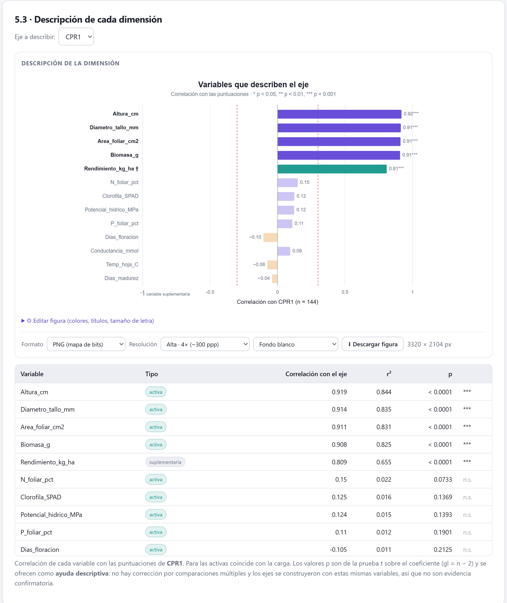
1234
Figura 7.2. La tarjeta 5.3 con CPR1 del proyecto integrador. 1 El eje que se describe. 2 El rendimiento, suplementario, en verde azulado y con †. 3 Las líneas de referencia en ±0.30. 4 Las variables no significativas, marcadas n.s.
Tabla 7.4. Columnas de la tabla de descripción.
Columna
Contenido
Tipo
activa o suplementaria.
Correlación con el eje · r²
La correlación y su cuadrado: la proporción de la varianza de la variable que recoge el eje.
p y estrellas
Prueba t sobre el coeficiente con n − 2 gl (con los n válidos, en las suplementarias): * p < 0.05, ** p < 0.01, *** p < 0.001, n.s.
La figura Descripción de la dimensión dibuja las mismas correlaciones como barras. Su editor tiene su propio selector de eje, orden por magnitud o por signo, solo las significativas, solo las N mayores y las líneas en ±0.30, que no cambian con el umbral de la tarjeta 5.1.
Valores test de las categorías
Cada categoría de las cualitativas del Bloque 1 se sitúa en el centroide de sus individuos. El valor test mide cuánto se aparta ese centroide del centro del eje respecto a lo que se esperaría si la categoría fuera una muestra al azar de los individuos.
Figura 7.3. La tarjeta 5.4 con el proyecto integrador. 1 Riego + fertilización, con v = 5.1 en CPR1: la categoría que más caracteriza el crecimiento. 2 Los bloques, sin ningún valor significativo. 3 La clave de las estrellas. 4 Fertilización también caracteriza la fenología (v = 2.22).
✓Regla de decisión · ¿cómo leo un valor test?
|v|
Lectura
< 1.96
La categoría no se distingue del centro en ese eje (en gris).
≥ 1.96 (*)
Caracteriza el eje con p < 0.05; el signo dice de qué lado.
≥ 2.58 (**)
p < 0.01.
Ordena por |v|: las categorías con el valor más alto son las que mejor caracterizan el eje. Con n grande casi cualquier diferencia pequeña pasa de 1.96: mira también la distancia del centroide en el mapa.
!Importante · los valores p de las activas son circulares
Los ejes se construyeron con las variables activas, así que su correlación con el eje será significativa casi siempre: con n = 144, basta |r| ≥ 0.17. Esos p son una ayuda de lectura, no evidencia. Los valores p de las suplementarias sí dicen algo, porque esas variables no intervinieron en los ejes, aunque tampoco llevan corrección por comparaciones múltiples.
Individuos característicos
La tarjeta 5.6 · Individuos característicos de cada eje lista, para cada componente, los cinco individuos con la coordenada más negativa y los cinco con la más positiva. Sirven para comprobar el nombre: si llamaste «Crecimiento» a CPR1, las parcelas del extremo positivo deberían ser las más vigorosas que conoces.
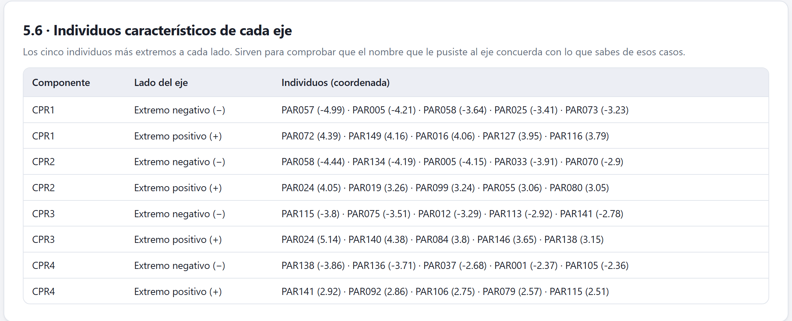
Figura 7.4. La tarjeta 5.6 con el proyecto integrador. PAR005 y PAR058 aparecen en el extremo negativo de CPR1 y de CPR2 a la vez: poco crecimiento y mala nutrición. PAR024 encabeza el lado positivo de CPR2 y de CPR3.
7.3Comparar grupos sin caer en la circularidad
Si elegiste una cualitativa en Comparar grupos sobre los componentes, aparece la tarjeta 5.5 · Comparación de grupos sobre los componentes. Para cada componente compara las puntuaciones de los grupos con un ANOVA de una vía y con la prueba de Kruskal–Wallis. Solo entran los grupos con al menos dos individuos.
Tabla 7.5. Columnas de la tabla de comparación.
Columna
Contenido
Referencia
F, gl, p (ANOVA)
La prueba F de un ANOVA de una vía sobre las puntuaciones.
—
η²
Proporción de la varianza del componente explicada por el factor.
0.01 pequeño · 0.06 medio · 0.14 grande
ω²
Versión menos sesgada de η²; repórtala con muestras pequeñas.
Las mismas
H, p (Kruskal)
La alternativa que no supone normalidad.
—
Lectura
«separa los grupos» con el tamaño del efecto si p < 0.05; si no, «no distingue grupos».
Por el p del ANOVA
Debajo están la figura Puntuaciones por grupo —diagramas de caja o medias con IC 95 %, un panel por componente con su prueba F— y la tabla Medias por grupo, con n, media, DE e intervalo de confianza del 95 % de cada media.
!Importante · qué se puede afirmar
Estos contrastes son legítimos porque la cualitativa no intervino en los ejes. Pero tienen dos límites que hay que declarar: son k pruebas sin corrección por comparaciones múltiples, y los ejes se eligieron a posteriori por maximizar varianza, así que los p son optimistas. Úsalos para describir en qué dimensión difieren los grupos. Si tu pregunta es «¿difieren los grupos?», la respuesta es un MANOVA, un PERMANOVA o un análisis discriminante sobre las variables originales.
iNota · un control negativo gratuito
Si tu diseño tiene un factor que no debería importar, compáralo también. En el proyecto integrador, con Bloque ningún componente distingue los grupos: F entre 0.05 y 1.06, η² ≤ 0.015. Es la comprobación de que las diferencias entre tratamientos no son un artefacto del terreno.
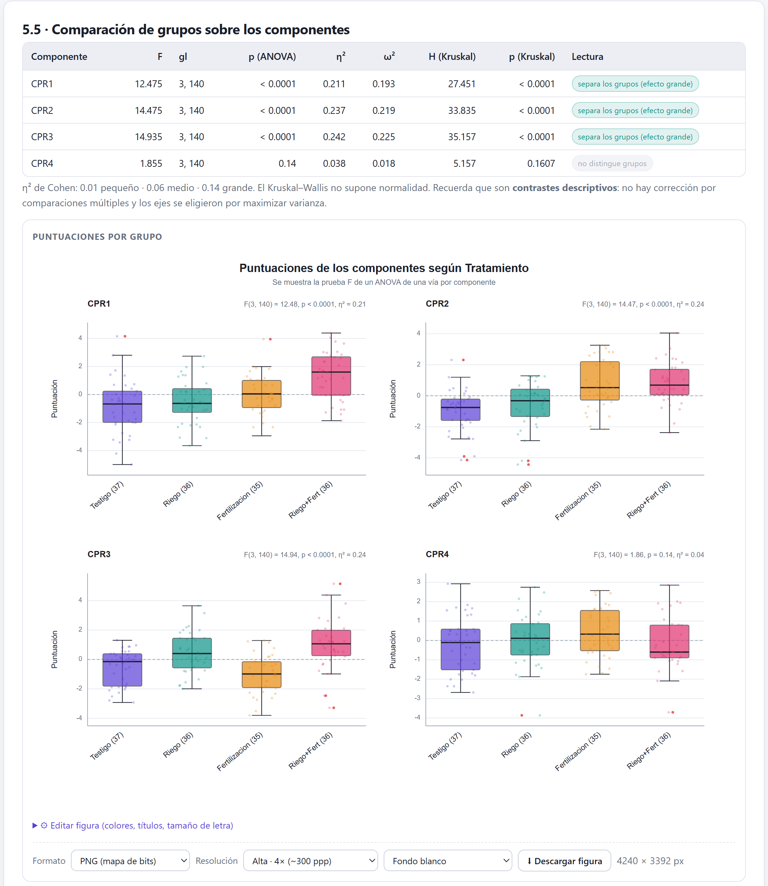
12345
Figura 7.5. La tarjeta 5.5 con el tratamiento. 1 CPR4, la fenología, no distingue los tratamientos. 2 La prueba F de cada panel, con η². 3 Riego + fertilización, el único tratamiento con la mediana de CPR1 claramente sobre cero. 4 En CPR4 las cajas se solapan casi por completo. 5 Puntuaciones atípicas, en rojo.
7.4Calidad del ajuste
Los k componentes retenidos permiten reconstruir la matriz de correlaciones. La diferencia entre la observada y la reproducida son los residuos; si son pequeños, los componentes recogen toda la estructura que importa.
R̂ = A · Aᵀ (sin rotar u ortogonal) · R̂ = P · Φ · Pᵀ (oblicua) RMSR = √( Σi<j residuo²ij / [p(p − 1)/2] )
✓Regla de decisión · ¿retuve suficientes componentes?
RMSR
Lectura
< 0.05
Buen ajuste: la solución reproduce la estructura.
0.05 a 0.08
Aceptable.
> 0.08
Se pierde estructura: considera retener un componente más en el Bloque 2.
Complemento: que menos del 10 % de los pares tenga un residuo mayor que 0.05. Un par concreto con residuo grande señala una relación que ningún eje recoge. Con el proyecto integrador, 4 componentes dan RMSR = 0.029 y 8 de 66 pares; con 3, RMSR = 0.105 y 19 de 66: el cuarto componente hace falta.
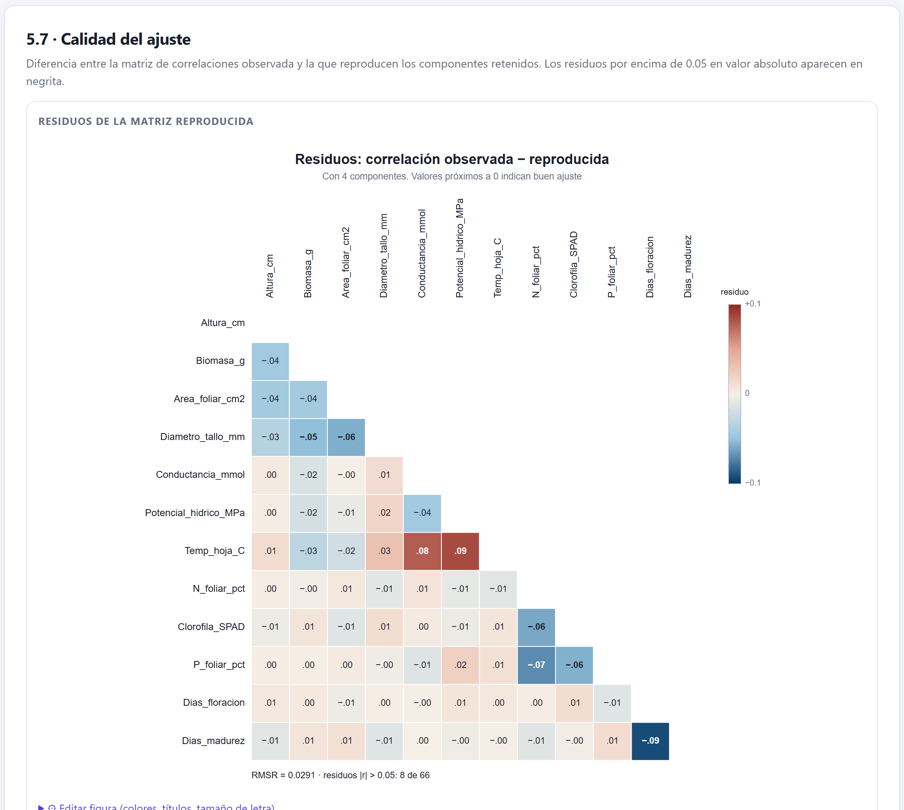
12345
Figura 7.6. La tarjeta 5.7 · Calidad del ajuste con cuatro componentes. 1 La escala se ajusta al residuo mayor. 2 La temperatura de la hoja con la conductancia y el potencial hídrico (0.08 y 0.09): el eje del agua no recoge del todo esa relación. 3 Los residuos negativos del bloque de nutrición. 4 Floración y madurez (−0.09). 5 El resumen: RMSR y pares mayores que 0.05.
La figura, Residuos de la matriz reproducida, muestra el triángulo inferior por defecto —su editor permite el superior o la matriz completa— y marca en negrita los residuos mayores que 0.05. La descarga ⬇ Matriz de residuos (CSV) da la matriz completa.
7.5El borrador de resultados
La última tarjeta, 5.8 · Lectura de los componentes, reúne todo en dos piezas de texto que se actualizan al cambiar los nombres.
Tabla 7.6. Qué contiene la lectura de cada componente.
Frase
De dónde sale
Encabezado
Componente, nombre entre comillas y porcentaje.
«Valores altos en este eje corresponden a…»
Variables con |r| sobre el umbral, activas y suplementarias (supl.), separadas por signo.
«Categorías que lo caracterizan»
Hasta seis categorías con |v| ≥ 1.96, de mayor a menor.
«Comparación entre grupos»
F, p y η² del ANOVA, si elegiste una cualitativa.
Color del recuadro
Verde si al menos dos variables superan el umbral; ámbar si no.
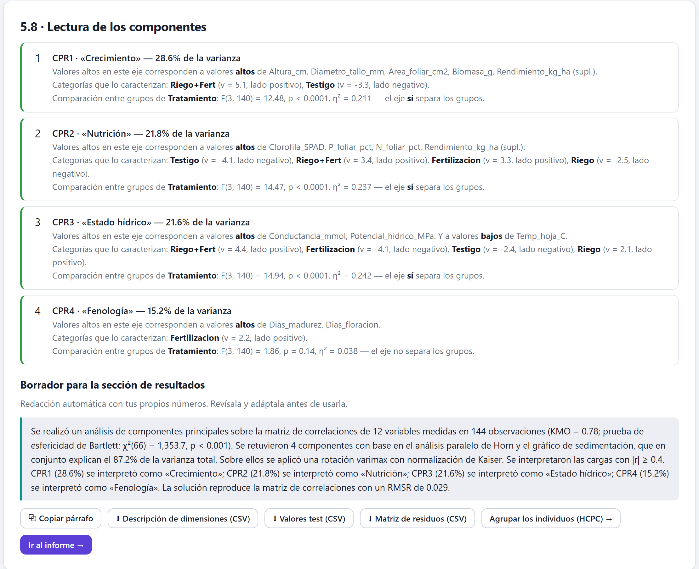
12345
Figura 7.7. La tarjeta 5.8 con los nombres escritos. 1 El nombre, tomado del campo de la tarjeta 5.2. 2 Las suplementarias se marcan (supl.). 3 La fenología no separa los tratamientos. 4 El borrador para la sección de resultados. 5 El paso al agrupamiento; debajo, al informe.
El borrador es un párrafo con tus números: matriz, número de variables y observaciones, KMO y Bartlett, componentes y varianza acumulada, rotación y normalización, umbral, el nombre y porcentaje de cada componente, y el RMSR. ⧉ Copiar párrafo lo lleva al portapapeles.
!Importante · revisa estas tres cosas antes de pegar el borrador
El criterio de retención. El párrafo siempre dice «con base en el análisis paralelo de Horn y el gráfico de sedimentación», aunque hayas elegido el número por otro criterio. Corrígelo con los criterios que realmente usaste (sección 4.3).
Los nombres. Si no los cambiaste, el párrafo usa las sugerencias, con nombres de columna.
Lo que falta. No menciona el tratamiento de faltantes, la transformación ni el escalado, que están en el informe del Bloque 6, ni la comparación de grupos.
Tabla 7.7. Los botones de la tarjeta 5.8.
Botón
Qué hace
⬇ Descripción de dimensiones (CSV)
Para cada eje, variables con tipo, correlación, r² y p.
⬇ Valores test (CSV)
Categorías con n, v.test y p en cada eje.
⬇ Matriz de residuos (CSV)
La matriz de residuos completa.
Agrupar los individuos (HCPC) →
Abre el agrupamiento (capítulo 8).
Ir al informe →
Abre el Bloque 6 (capítulo 9).
7.6Interpretar AC, ACM, AFDM y AFM
Con un método distinto del ACP, el mismo botón Interpretar componentes → abre otras tarjetas, porque la correlación de cada variable con cada eje no siempre existe. Lo que describe un eje es la contribución de cada elemento, con su signo.
Tabla 7.8. Qué describe cada eje según el método.
Método
Elementos de la tarjeta 5.2 · Lectura de cada eje
AC
Filas y columnas de la tabla, con su coordenada y contribución.
ACM
Las categorías, con la variable a la que pertenecen.
AFDM
Las cuantitativas por su correlación con el eje y las categorías por su coordenada.
AFM
Las variables, con el bloque al que pertenecen.
Tabla 7.9. Las tarjetas con estos métodos.
Tarjeta
Contenido
5.2 · Lectura de cada eje
Para cada eje, su inercia, un campo para nombrarlo y los elementos sobre el umbral, en lado positivo y negativo, con su contribución.
5.3 · Valores test de las categorías
Los valores test de las categorías sobre los individuos, con la misma fórmula del ACP. No aparece en el AC, que no tiene individuos.
5.4 · Borrador para la sección de resultados
Datos del análisis, ejes retenidos y si los criterios coincidieron, qué opone cada eje, categorías significativas y, en el AFM, el rango de RV entre bloques.
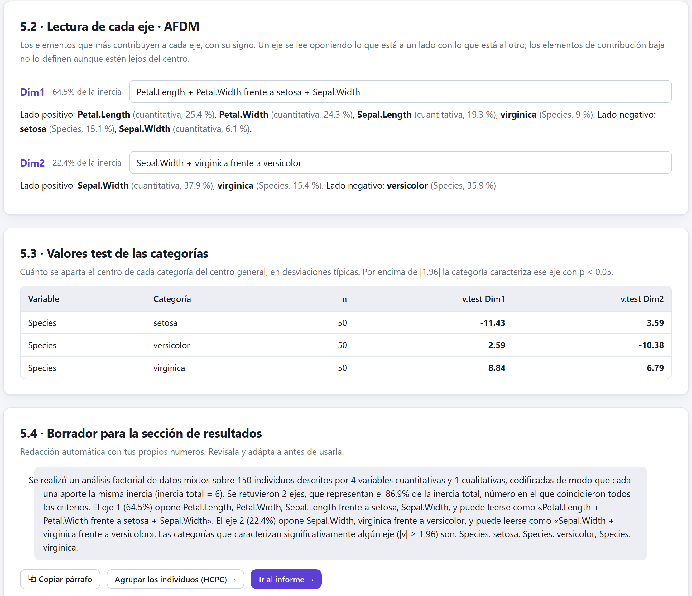
1234
Figura 7.8. La interpretación de un AFDM de iris con la especie activa. 1 El nombre sugerido para Dim1, editable. 2 Setosa, con v = −11.43 en Dim1. 3 El borrador: su primer renglón queda fuera del recuadro gris por un estilo de la app. 4 El paso al informe.
!Importante · el umbral cambia de significado
Con estos métodos el Umbral de carga interpretable se convierte en un umbral de contribución: umbral × 100 / número de columnas. En el AFDM de iris hay 7 columnas (4 cuantitativas y 3 categorías), así que 0.40 equivale a 5.7 %, bastante menos que la contribución media, 100/7 = 14.3 %. Por eso aparecen elementos de contribución modesta, como Sepal.Width con 6.1 % en Dim1. Para quedarte solo con lo que supera la media, sube el umbral a 0.70 o lee las contribuciones de la tarjeta 2.5.
iNota · lo que no hay con estos métodos
No hay comparación de grupos —el selector de la tarjeta 5.1 se ignora—, ni descripción de dimensiones por correlación, ni individuos extremos, ni calidad del ajuste, ni descargas en este bloque. Si llegas al Bloque 5 con la barra de pasos, el selector de grupos puede conservar las cualitativas de un archivo anterior; llegar con el botón Ir a la interpretación → del Bloque 4 lo actualiza.
7.7Paso a paso
La interpretación del proyecto integrador, continuación del caso del capítulo 6: 144 parcelas, doce variables, cuatro componentes con varimax y la solución rotada en los mapas. Las cifras son las de la app.
▸Proyecto integrador · interpretación de cuatro componentes rotados
En la tarjeta 5.1 deja el umbral en 0.40, elige Tratamiento y pulsa Interpretar componentes →. RMSR = 0.0291, en verde; 8 de 66 residuos pasan de 0.05; 4 de 7 categorías caracterizan algún eje.
Sustituye las sugerencias por Crecimiento, Nutrición, Estado hídrico y Fenología. La tercera sugerencia, «Conductancia_mmol + Potencial_hidrico_MPa frente a Temp_hoja_C», confirma que CPR3 es un contraste: hojas bien hidratadas y frescas frente a hojas calientes.
En la tarjeta 5.3, el rendimiento suplementario se correlaciona 0.809 con Crecimiento (p < 0.0001) y 0.647 con Nutrición. Es la única correlación de la tabla que no es circular.
Los valores test (figura 7.3) ordenan los tratamientos: riego + fertilización caracteriza el lado positivo de Crecimiento (5.11), Nutrición (3.41) y Estado hídrico (4.39); el testigo, el negativo de los tres; la fertilización sube la Nutrición (3.25) pero baja el Estado hídrico (−4.11); el riego hace lo contrario (−2.52 y 2.08).
El ANOVA separa los tratamientos en Crecimiento (η² = 0.211), Nutrición (0.237) y Estado hídrico (0.242), todos efectos grandes, y no en Fenología (F = 1.86, p = 0.14). Con Bloque, ningún componente separa los grupos.
En la calidad del ajuste, los residuos mayores son temperatura–potencial hídrico (0.09), temperatura–conductancia (0.08) y floración–madurez (−0.09): relaciones un poco más fuertes de lo que reproducen los ejes, pero sin un patrón que pida otro componente. Prueba a retener 3 en el Bloque 2 y repetir la cadena: RMSR = 0.105, en rojo.
Los extremos confirman los nombres: PAR005 y PAR058 están en el lado negativo de Crecimiento y de Nutrición, las mismas parcelas que tiraban del plano en el capítulo 6.
Copia el borrador y corrige el criterio de retención: aquí fueron seis de los ocho criterios, no solo Horn y el codo.
Lectura. Los tratamientos no actúan sobre una sola dimensión. La fertilización mejora la nutrición a costa del estado hídrico; el riego, lo contrario; solo la combinación mejora los tres ejes y desplaza las parcelas hacia el crecimiento, que es lo que más se asocia con el rendimiento. Ningún tratamiento cambia la fenología. Esa lectura, dimensión por dimensión, es lo que el ACP añade a un ANOVA variable por variable.
▸El borrador, corregido
«Se realizó un análisis de componentes principales sobre la matriz de correlaciones de 12 variables medidas en 144 parcelas (KMO = 0.78; prueba de esfericidad de Bartlett: χ²(66) = 1353.7, p < 0.001). Se retuvieron cuatro componentes, en los que coincidieron el análisis paralelo, el bastón roto y el MAP de Velicer, que en conjunto explican el 87.2 % de la varianza. Sobre ellos se aplicó una rotación varimax con normalización de Kaiser y se interpretaron las cargas con |r| ≥ 0.40. Los componentes rotados se interpretaron como crecimiento (28.6 %), nutrición (21.8 %), estado hídrico (21.6 %) y fenología (15.2 %). La solución reproduce la matriz de correlaciones con un RMSR de 0.029. El rendimiento, proyectado como variable suplementaria, se correlacionó con el crecimiento (r = 0.81) y la nutrición (r = 0.65). Los tratamientos difirieron en los tres primeros componentes (η² de 0.21 a 0.24), pero no en la fenología (F(3, 140) = 1.86, p = 0.14).»
Con los componentes interpretados, el siguiente capítulo presenta el agrupamiento opcional de los individuos sobre los componentes (Bloque 5b).
8
Capítulo ocho · Bloque 5b
Agrupamiento
El paso opcional que convierte la nube de individuos en unos pocos grupos con nombre: agrupamiento jerárquico de Ward sobre los ejes, tres reglas para decidir cuántos grupos, consolidación por k-medias y la descripción de cada grupo. Funciona con los cinco métodos. Termina con lo que un agrupamiento no puede demostrar.
8.1Agrupar sobre los ejes
8.2El criterio de Ward y el dendrograma
8.3¿Cuántos grupos? Tres reglas
8.4Consolidación y descripción de los grupos
8.5Lo que un agrupamiento no demuestra
8.6Paso a paso
8.1Agrupar sobre los ejes
El análisis factorial ordena a los individuos en un espacio continuo. Agruparlos es otra operación, y es opcional: responde a la pregunta «¿qué tipos de individuos hay?», no a «¿qué dimensiones los ordenan?».
θHCPC: por qué sobre los ejes y no sobre las variables
El HCPC —hierarchical clustering on principal components, de Husson, Josse y Pagès— agrupa sobre las coordenadas factoriales, no sobre la tabla original. Tiene dos ventajas:
Quita el ruido. Los ejes que no retuviste son, en su mayor parte, variación sin estructura: agrupar sobre los primeros es agrupar sobre una versión limpia de la tabla.
Unifica los tipos de dato. Sobre las coordenadas de un ACM o de un AFDM se usa la distancia euclídea aunque las variables originales sean cualitativas, sin tener que elegir un coeficiente de similitud.
El bloque aparece en la barra como 5b · Agrupamiento y se activa al generar los mapas del Bloque 4, junto con el Bloque 5. Tiene una tarjeta de teoría con seis temas y la tarjeta 5b.1 · Configuración del agrupamiento. Al pulsar Agrupar los individuos → aparecen siete tarjetas de resultados y se activa el Bloque 6.
!Importante · entra por el botón del Bloque 5
La tarjeta de configuración se llena al abrir el bloque con el botón Agrupar los individuos (HCPC) →, que está al final del Bloque 5, tanto en el ACP como en los demás métodos. En la versión 1.1, si llegas con el botón 5b de la barra de pasos, la tarjeta queda vacía y pulsar Agrupar los individuos → da un error. Pulsa Interpretar componentes → en el Bloque 5 y usa ese botón.
1234567
Figura 8.1. Las tarjetas 5b.1 y 5b.2 · Resumen de la partición con iris y dos componentes.
1Cuántos ejes entran.
2Número de grupos: automático o fijo.
3La consolidación por k-medias.
4Lanza el agrupamiento.
5Grupos, en verde si los criterios coinciden.
6La silueta media y su lectura.
7Lo que hizo la consolidación.
Tabla 8.1. Las opciones de la tarjeta 5b.1.
Opción
Valores
Consejo
Ejes que entran
De 1 al número de ejes del método. Por defecto, los retenidos en el Bloque 2 (al menos 2 y como mucho 5). Debajo se lee cuánta inercia suman.
Usa los retenidos: pocos ejes fabrican grupos limpios que no están en los datos; muchos devuelven el ruido.
Número de grupos
automático (consenso de los tres criterios) o un número de 2 a 10.
Empieza en automático y cambia solo con una razón de tu disciplina (sección 8.3).
Consolidar por k-medias
Casilla, marcada.
Déjala marcada; desmárcala si necesitas que la partición coincida exactamente con el árbol.
Tabla 8.2. Los indicadores de la tarjeta 5b.2.
Indicador
Qué dice
Color
Grupos
El número de grupos y si los tres criterios coinciden.
verde si coinciden · ámbar
Ejes usados
Cuántos y cuánta inercia suman.
—
Inercia entre grupos
La proporción de la inercia de la nube que explica la partición.
En la versión 1.1 los indicadores de esta tarjeta se apilan en una columna en vez de formar una fila, como en el Bloque 2 con métodos distintos del ACP.
Tabla 8.3. Qué se agrupa con cada método.
Método
Individuos
Con qué se describen los grupos
ACP
Las puntuaciones sin rotar de las observaciones. Una rotación ortogonal no cambiaría las distancias; con una oblicua se agrupa igualmente la solución sin rotar.
Variables activas en sus unidades originales, cuantitativas suplementarias y cualitativas.
AC
Las filas de la tabla de contingencia, con su masa.
El perfil de cada fila: su reparto porcentual entre las columnas.
ACM, AFDM, AFM
Los individuos, sin las filas descartadas por vacíos.
Cuantitativas y cualitativas de los datos, activas y suplementarias.
8.2El criterio de Ward y el dendrograma
El árbol se construye de abajo arriba: cada individuo empieza siendo un grupo y, en cada paso, se unen los dos grupos cuya fusión menos inercia intragrupo añade.
Δ(A, B) = [wA · wB / (wA + wB)] · d²(gA, gB)
g son los centros y w las masas de los grupos. Δ es la altura a la que aparece la fusión en el dendrograma: una rama alta significa que unir esos dos grupos costó caro, es decir, que eran distintos. Ward es el criterio natural aquí porque, como el análisis factorial, reparte la inercia total en una parte entre grupos y otra dentro de ellos.
Figura 8.2. La tarjeta 5b.4 · Dendrograma con iris cortado en tres grupos. La fusión más alta (2.5) separa setosa del resto; la siguiente (0.53) divide el grupo grande en dos. La línea naranja marca el corte y la franja inferior colorea las hojas según el grupo del corte. La nota avisa que la consolidación movió después 6 individuos.
Tabla 8.4. Opciones propias del dendrograma.
Control
Qué hace
Orientación
Hojas abajo u hojas a la izquierda.
Colorear las ramas por grupo · Color del tronco
Las ramas de cada grupo en su color; lo que está por encima del corte, en gris.
Línea de corte · Franja de grupos
La altura del corte y una banda de color bajo las hojas.
Escala en raíz cuadrada
Comprime las fusiones altas para ver mejor las bajas.
Etiquetas de las hojas · Máximo de hojas etiquetadas
Nombres de los individuos (80 como máximo por defecto; con más se ocultan).
Largo · Alto de las alturas
El tamaño del dibujo en píxeles.
8.3¿Cuántos grupos? Tres reglas
Igual que con el número de componentes, no hay una respuesta única. La tarjeta 5b.3 · Cuántos grupos calcula tres reglas sobre el mismo árbol, entre 2 y 10 grupos, y muestra si coinciden.
Tabla 8.5. Las tres reglas.
Regla
Qué busca
Carácter
Mayor salto de altura
El número de grupos cuya fusión siguiente sería la más costosa en términos absolutos.
Suele elegir pocos grupos: la primera gran división.
Mayor pérdida relativa de inercia
El mismo salto, dividido entre la altura anterior.
La regla de Husson y Josse; decide cuando las tres discrepan.
Máxima silueta media
El número con la mejor silueta: para cada individuo, (b − a) / máx(a, b), con a su distancia media a los de su grupo y b la distancia media al grupo vecino más próximo.
Premia grupos compactos y separados.
El consenso es el número que proponen más reglas; si las tres discrepan, manda la pérdida relativa. Con automático, ese es el número de grupos.
Figura 8.3. La tarjeta 5b.3 con iris. Las tres reglas proponen 2 grupos. En la figura, la barra de cada número es lo que cuesta la fusión que habría que deshacer para llegar a él: la de 2 grupos (2.5) es casi cinco veces la de 3 (0.53). El editor permite dibujar la silueta media en lugar de la pérdida.
✓Regla de decisión · ¿cuántos grupos reporto?
Si…
entonces
Las tres reglas coinciden y la silueta es ≥ 0.50
Ese número es una propiedad de los datos: repórtalo así.
Discrepan, pero una opción tiene sentido en tu disciplina
Elígela en Número de grupos y di que fue una decisión, con los números de cada regla.
La silueta de la mejor opción es < 0.25
No hay grupos que reportar: la nube es continua.
El salto elige 2 y las otras reglas un número alto con silueta baja
Desconfía del número alto: suele ser la nube continua cortada en rebanadas (caso 3 de la sección 8.6).
No se corta en la barra más alta de la figura, sino donde las barras dejan de ser altas: el último número que todavía «compra» inercia.
8.4Consolidación y descripción de los grupos
La consolidación por k-medias
Una fusión del árbol, una vez hecha, no se deshace: un individuo que quedó del lado equivocado en un paso temprano se queda ahí. La consolidación parte de los centros del corte, reasigna cada individuo al centro más cercano y repite, hasta 30 veces, hasta que nadie se mueve. Nunca empeora la inercia intragrupo.
El texto bajo los indicadores dice cuántas iteraciones hizo y cómo cambió la inercia entre grupos. Si no hubo cambio, añade «el corte del árbol ya era estable».
iNota · el árbol y el mapa pueden no coincidir
El dendrograma se colorea siempre con el corte del árbol; el mapa, las tablas y las descargas usan la partición consolidada. Si la consolidación movió individuos, la tarjeta 5b.4 dice cuántos. Con iris y tres grupos movió 6: el árbol tiene grupos de 50, 39 y 61 individuos, y la partición final de 50, 45 y 55. Si necesitas que coincidan, desmarca la consolidación.
Los grupos sobre el plano
Figura 8.4. La tarjeta 5b.5 · Los grupos sobre el plano factorial: el mismo mapa de individuos del Bloque 4, coloreado por grupo y con las mismas opciones de editor. Aquí sí tiene la misma escala en los dos ejes por defecto. El grupo 1 está aislado; los grupos 2 y 3 se solapan en el centro.
Qué caracteriza a cada grupo
La tarjeta 5b.6 · Qué caracteriza a cada grupo describe cada grupo por lo que lo aparta del conjunto, con valores test: cuántas desviaciones típicas se aleja el grupo de la media general, bajo el modelo de que sus individuos se hubieran sacado al azar y sin reemplazo del total.
Figura 8.5. La tarjeta 5b.6 con iris y tres grupos. La figura muestra, por grupo, los diez valores test mayores que |1.96|: en verde lo que está por encima de la media, en naranja lo que está por debajo. El grupo 1 tiene pétalos pequeños (−11.26) y es todo setosa (50 de 50); el grupo 2 es 75.6 % virginica; el grupo 3, 70.9 % versicolor.
Tabla 8.6. Las tres tablas de descripción. Solo se listan los valores con |v| ≥ 1.96.
Tabla
Columnas
Lectura
Variables cuantitativas
Grupo, variable, media del grupo, media general, valor test y p. Las suplementarias llevan *.
Valor test positivo: el grupo está por encima de la media.
Categorías
Grupo, categoría, n en el grupo / tamaño del grupo, % del grupo, % del total, valor test y p.
Positivo: la categoría está sobrerrepresentada; negativo: casi ausente.
Posición de cada grupo en los ejes
n y la media de cada eje usado. Siempre completa.
Dónde está el centro del grupo en cada dimensión.
Con el AC, la primera tabla se llama Perfil de fila por grupo y compara el porcentaje de cada columna en el grupo con el general. Como las filas tienen masas muy distintas, ese valor test se lee como orden de importancia, no como probabilidad.
Paragones, específicos y el borrador
La tarjeta 5b.7 · Individuos que representan a cada grupo da, por grupo, los cinco paragones —los más cercanos a su centro: los ejemplares típicos— y los cinco específicos —los más alejados de los demás centros: los que no se confunden con ningún otro grupo—, con su distancia. Los paragones sirven para explicar qué es un grupo; los específicos, para elegir casos para un estudio de seguimiento.
Figura 8.6. La tarjeta 5b.8 · Borrador para la sección de resultados con iris y tres grupos elegidos a mano. El párrafo describe los ejes y el método, las reglas, el tamaño de los grupos, la inercia explicada y la silueta, los descriptores de cada grupo con su ejemplar más típico, y cierra advirtiendo que los valores test describen, no prueban.
!Importante · revisa la segunda frase del borrador
Si eliges un número de grupos distinto del consenso y las tres reglas coincidían, el borrador dice «coincidieron en 2 grupos» y a continuación describe 3. Corrige esa frase: «Las tres reglas indicaban 2 grupos; se retuvieron 3 porque…». El indicador Grupos tiene el mismo problema: sigue diciendo «los tres criterios coinciden». La lista de reglas de la tarjeta 5b.3 sí lo aclara: «elegiste 3».
Tabla 8.7. Las descargas del bloque, en CSV.
Botón
Contenido
⬇ Asignación de grupos (CSV)
Individuo, grupo y sus coordenadas en los ejes usados. Sirve para llevar el grupo a otro análisis.
⬇ Descripción de los grupos (CSV)
Todos los valores test —también los no significativos— de cuantitativas, categorías y ejes, con valor en el grupo, valor general y p.
El botón Ir al informe → abre el Bloque 6, que incluye el agrupamiento si lo ejecutaste.
8.5Lo que un agrupamiento no demuestra
El algoritmo siempre devuelve grupos, también sobre datos sin estructura. Conviene tener escritas tres cautelas antes de mirar el resultado.
!Importante · tres cautelas
Los valores test describen, no prueban. Los grupos se construyeron para maximizar esas diferencias; presentarlos como contrastes de hipótesis es circular. Con iris, todas las p son < 0.0001, y no significa nada.
Inercia alta con silueta baja es una nube cortada en rebanadas. La partición reparte bien la varianza, pero los grupos no están separados.
Encontrar lo que ya sabías no es un descubrimiento. Si los grupos coinciden con el tratamiento, la especie o el sitio, dilo así: el agrupamiento confirma que esa variable ordena los datos, no la descubre.
Figura 8.7. El agrupamiento de practica4_sin_estructura.csv, seis variables independientes con tres componentes. La app propone 8 grupos, de 3 a 17 individuos, que explican el 75.6 % de la inercia, en verde. Pero la silueta es 0.316, las reglas discrepan (2 y 8) y la figura baja de forma continua, sin un escalón claro después del primero.
75.6 %
De inercia explicada, sobre ruido
Con datos generados sin ninguna relación entre variables, ocho grupos explican tres cuartas partes de la inercia de los tres ejes. La inercia entre grupos no mide si hay grupos: siempre crece al añadir grupos. Mira la silueta y el acuerdo de las reglas.
8.6Paso a paso
Tres agrupamientos con resultados muy distintos. Las cifras son las de la app; en todos se entró al bloque con el botón del Bloque 5.
Caso 1 · Iris: dos grupos claros, tres con sentido
▸iris.csv · ACP con dos componentes (95.8 %)
Con los valores por defecto —2 ejes, automático, consolidación— las tres reglas eligen 2 grupos: silueta 0.615 («estructura clara»), inercia entre grupos 65.7 %, tamaños 50 y 100. La consolidación no movió a nadie.
El grupo 1 es todo setosa (50 de 50, v = 12.21); el grupo 2 reúne versicolor y virginica, 50 de cada una.
Como hay tres especies, elige 3 en Número de grupos. La silueta baja a 0.511, todavía clara; la inercia sube a 80.0 %; la consolidación movió 6 individuos (figura 8.2).
Grupo 2: 34 de 45 son virginica (75.6 %), con sépalos largos (v = 9.18). Grupo 3: 39 de 55 son versicolor (70.9 %), con sépalos estrechos (v = −8.26).
Lectura. Los datos tienen dos tipos claros —setosa y el resto— y un tercero borroso. La partición en tres recupera las especies con errores en la frontera entre versicolor y virginica, justo donde el mapa las solapa. Reportar tres grupos es legítimo si se dice que fue una decisión, y que las reglas indicaban dos.
Caso 2 · Proyecto integrador: siete tipos de parcela
▸proyecto_integrador_agronomia.csv · ACP con cuatro componentes, rendimiento suplementario
Con 4 ejes (87.2 %), el salto elige 2 grupos; la pérdida relativa y la silueta, 7. El consenso es 7, con tamaños de 15 a 27 parcelas, inercia entre grupos del 60.4 % y silueta 0.227: «sin estructura apreciable».
Los descriptores son nítidos: el grupo 7 (27 parcelas) tiene plantas altas (v = 7.43) y rendimiento alto (v = 5.90), y 18 de sus 27 parcelas son de riego + fertilización (v = 5.53). El grupo 3 (15) tiene nitrógeno foliar alto (v = 6.32) y 11 parcelas de fertilización (v = 4.66).
La consolidación movió 26 de 144 parcelas: el árbol no tenía cortes naturales.
Lectura. Los grupos se describen bien porque las cuatro dimensiones son reales, pero la silueta dice que las parcelas forman un continuo en esas dimensiones y no tipos separados. Es un caso para reportar las dimensiones del capítulo 7 y, si acaso, los grupos como una forma cómoda de resumirlas, declarando la silueta.
Caso 3 · Datos sin estructura
▸practica4_sin_estructura.csv · ACP con tres componentes (58.7 %)
La app propone 8 grupos; uno de ellos tiene 3 individuos. Inercia entre grupos: 75.6 %. Silueta: 0.316.
Las siluetas de 2 a 10 grupos van de 0.226 a 0.304, sin un máximo marcado; la figura de la tarjeta 5b.3 decrece sin escalones (figura 8.7).
La consolidación movió 6 individuos.
Lectura. Es el control negativo: el capítulo 3 ya diagnosticó estos datos como sin estructura (KMO = 0.465), y aun así el algoritmo devuelve ocho grupos con un porcentaje de inercia que parece excelente. Nada aquí debe reportarse como tipología. Si tus datos se parecen a este caso, la respuesta honesta es que no hay grupos.
Con el análisis completo, el siguiente capítulo presenta el Bloque 6: el informe que reúne todas las decisiones, tablas y figuras.
9
Capítulo nueve · Bloque 6
Informe
El último bloque reúne todo lo calculado en un informe HTML autocontenido, que también se imprime a PDF, y en un paquete ZIP con las figuras, las tablas en CSV y la cita del programa. Este capítulo explica qué contiene cada pieza, qué revisar antes de usarla y cómo redactar la sección de métodos.
9.1El estado del análisis
9.2El informe y sus secciones
9.3El paquete ZIP
9.4Redactar los métodos y citar
9.1El estado del análisis
El informe no recalcula nada: recoge lo que ya hiciste en los bloques anteriores, con las decisiones que tomaste y las figuras tal como las dejaste. Por eso conviene llegar a este bloque con el análisis terminado.
El Bloque 6 se activa al interpretar en el Bloque 5 o al agrupar en el 5b, y basta con haber extraído en el Bloque 2 para generar un informe. Tiene una tarjeta de teoría y cuatro tarjetas: 6.1 · Estado del análisis, 6.2 · Configuración del informe, 6.3 · Vista previa y 6.4 · Cómo citar PCAPro.
Figura 9.1. La tarjeta 6.1 · Estado del análisis con el proyecto integrador: los seis bloques ejecutados, cada uno con su resumen, y la lista de las 26 figuras que entrarán en el informe.
Tabla 9.1. Lo que resume cada renglón del estado.
Bloque
Con el ACP
Con otros métodos
Bloque 1 · Datos y supuestos
Observaciones × variables activas.
Igual.
Bloque 2
«4 de 12 componentes».
Con la sigla del método: «2 de 6 ejes».
Bloque 3 · Rotación
El método, o «sin aplicar».
«no aplica a este método», con ✔.
Bloque 4 · Mapas factoriales
Solución rotada o sin rotar.
La inercia del plano 1–2.
Bloque 5 · Interpretación
El RMSR.
Cuántos ejes se describieron.
Bloque 5b · Agrupamiento
Grupos y ejes usados, o «opcional, sin ejecutar».
Debajo se listan las figuras disponibles: todas las que están montadas en tarjetas visibles de los bloques, en el orden de la app. Las de tarjetas ocultas —por ejemplo, las del ACP después de ejecutar otro método— no entran. Si cambias algo en otro bloque, pulsa ↻ Actualizar estado; el estado también se actualiza al abrir el bloque desde la barra de pasos o con el botón Ir al informe → del Bloque 5 del ACP. Si llegas desde el agrupamiento o desde otro método, pulsa ↻ Actualizar estado antes de generar el informe.
iNota · secciones que se apagan
Las secciones de bloques que no se ejecutaron se desmarcan y se atenúan en la tarjeta 6.2: con otros métodos, la de Rotación; sin agrupamiento, la de Agrupamiento. En la versión 1.1, si después ejecutas ese bloque y actualizas el estado, la casilla vuelve a estar disponible pero sigue desmarcada: márcala a mano antes de generar el informe.
9.2El informe y sus secciones
La tarjeta 6.2 · Configuración del informe define el título, los autores, las secciones y las figuras.
Figura 9.2. La tarjeta 6.2 con un título propio, las once secciones marcadas, las figuras incrustadas y los cuatro botones de salida.
Tabla 9.2. Las opciones de la tarjeta 6.2.
Opción
Qué hace
Título · Autor o autores
Encabezan la portada. Sin título, se usa el nombre del método; el autor es opcional.
Secciones a incluir
Once casillas (tabla 9.3). La cita del programa se añade siempre al final.
Incrustar las figuras en el informe
Inserta cada figura en SVG dentro del HTML, con la edición que le hiciste. Sin ella, el informe solo lleva texto y tablas.
Formato de las figuras en el ZIP · Resolución del mapa de bits
Solo afectan al paquete ZIP (sección 9.3).
Tabla 9.3. Las secciones del informe.
Sección
Contenido
Resumen
Indicadores: observaciones, variables, componentes, varianza, KMO, Bartlett y RMSR; con otros métodos, individuos, columnas, ejes, inercia y, en el AC, la χ².
Métodos
Un párrafo redactado con tus parámetros (sección 9.4).
Preparación de datos y supuestos
Descriptivos con la MSA, una tabla de verificación de supuestos con «Sí», «No», «Marginal» o «Revisar», y las figuras del Bloque 1.
Extracción
Valores propios, número propuesto por cada criterio, la decisión adoptada y las figuras del Bloque 2.
Rotación
Método, estructura simple, matriz de cargas rotadas (o de patrón) con las cargas sobre el umbral en negrita, varianza antes y después, Φ si es oblicua, y las figuras.
Representación factorial
Coordenadas, cos² y contribuciones, suplementarias y centroides, y las figuras del Bloque 4.
Interpretación
La lectura de cada componente con su nombre, los valores test, la comparación de grupos, el RMSR, las figuras y el borrador de resultados del Bloque 5.
Agrupamiento (HCPC)
El borrador del 5b, los criterios, la composición, los descriptores, paragones y específicos, y sus figuras.
Limitaciones y advertencias
Una lista generada con los problemas detectados: razón n:p < 5, KMO < 0.60, Bartlett no significativa, pares redundantes, atípicos, asimetría, RMSR ≥ 0.08, contrastes descriptivos, silueta < 0.25 y criterios de grupos que discrepan.
Referencias metodológicas
Catorce referencias fijas: Pearson, Hotelling, Kaiser, Horn, Cattell, Velicer, Jennrich, Ward, Husson y colaboradores, entre otros.
Anexo con la configuración
Los parámetros del análisis: archivo, filas, variables, faltantes, transformación, escalado, componentes, análisis paralelo, rotación y umbral.
Las tablas y figuras se numeran solas en el orden en que aparecen. Los pies de figura usan el título que cada figura tiene en su editor, así que un buen título en el editor es un buen pie en el informe.
Los cuatro botones
Tabla 9.4. Las salidas del informe.
Botón
Qué hace
Generar vista previa
Muestra el informe en la tarjeta 6.3 y avisa cuántas secciones y figuras incluyó.
⬇ Informe HTML
Descarga un único archivo …_informe_ACP.html, sin dependencias: se abre en cualquier navegador y se envía por correo.
🖨 Imprimir / guardar como PDF
Abre el informe en una ventana nueva y lanza la impresión. Elige «Guardar como PDF». Si el navegador bloquea ventanas emergentes, la app lo avisa: descarga el HTML y imprímelo desde ahí.
⬇ Descargar paquete completo (ZIP)
Genera el paquete de la sección 9.3.
Figura 9.3. La tarjeta 6.3 · Vista previa: es el documento real, con la portada —título, archivo, dimensiones, fecha—, los indicadores del resumen y el principio de los métodos. Se desplaza dentro de su propio marco.
!Importante · el informe es una foto del momento
El informe se construye con el estado de la app al pulsar el botón. Si vuelves a un bloque y cambias algo, genera la vista previa otra vez antes de descargar. Y recuerda que recalcular un bloque regenera sus figuras con los valores por defecto (sección 6.6): haz las ediciones finales de las figuras justo antes de generar el informe.
9.3El paquete ZIP
⬇ Descargar paquete completo (ZIP) genera, en el propio navegador, un archivo …_ACP_completo.zip con esta estructura. El botón va mostrando el avance figura por figura y, al terminar, un mensaje dice cuántos archivos y megabytes tiene.
proyecto_integrador_agronomia_ACP_completo.zip
├── informe_ACP.html el mismo informe de la sección 9.2
├── CITATION.bib la cita en BibTeX
├── LEEME.txt contenido del paquete y resumen del análisis
├── figuras/
│ ├── 01_…_faltantes.svg numeradas en el orden de la app
│ ├── 01_…_faltantes.png
│ └── …
└── tablas/
├── 01_matriz_preparada.csv
├── 02_correlaciones.csv
└── …
Tabla 9.5. Las figuras del paquete.
Formato
Resultado
Ambos: SVG y PNG (por defecto)
Cada figura dos veces: vectorial y en mapa de bits.
PNG, JPG o WEBP
Solo mapa de bits, a la resolución elegida (2× a 12×), con fondo blanco.
SVG
Solo vectorial; la resolución no aplica. Es el paquete más ligero.
Tabla 9.6. Las tablas CSV del paquete, según lo ejecutado.
Nº
ACP
AC, ACM, AFDM y AFM
01–03
Matriz preparada (con suplementarias y cualitativas), correlaciones y resumen de variables con MSA.
04
Valores propios con p95 aleatorio y bastón roto.
Valores propios e inercia (en el ACM, con el % de Greenacre).
05–06
Cargas sin rotar y puntuaciones.
Coordenadas, cos² y contribuciones de columnas y de filas.
07–09
Cargas rotadas; estructura y Φ si es oblicua.
Propias del método: celdas de la χ² (AC), v de Cramér (ACM), r² y η² (AFDM), inercia de bloques, RV y puntos parciales (AFM).
10–11
Coordenadas, cos² y contribuciones de variables e individuos.
—
12–14
Descripción de dimensiones, valores test y residuos.
Descripción de ejes y valores test.
20–23
Si hubo agrupamiento: asignación, criterios por número de grupos, descripción y paragones.
Los CSV van en UTF-8 con BOM y separados por comas, para que Excel reconozca los acentos. Con el proyecto integrador y los seis bloques, el paquete tiene 16 tablas, 26 figuras en SVG y PNG, el informe, la cita y el LEEME: 71 archivos.
✓Regla de decisión · ¿qué resolución elijo para el paquete?
Si el paquete es para…
entonces
Archivar el análisis o compartirlo con coautores
SVG y PNG a 4×, las opciones por defecto.
Enviar las figuras a una revista
SVG, o PNG a 8×. Revisa antes el peso: con muchas figuras, 8× y 12× pueden llegar a cientos de MB.
Un correo o una presentación
PNG a 2×, o solo el informe HTML.
El ZIP se guarda sin compresión para no depender de librerías externas: si pesa demasiado, comprímelo después con tu sistema operativo.
9.4Redactar los métodos y citar
La sección Métodos del informe es un párrafo con tus parámetros. Con el ACP describe la muestra y las variables, el tratamiento de faltantes, la transformación y el escalado, KMO y Bartlett, los criterios de retención, la rotación, el umbral y, si lo hubo, el agrupamiento. Con los otros métodos describe la tabla, la codificación, la inercia y los criterios empleados.
!Importante · qué corregir en el párrafo de métodos
Los criterios de retención. Con el ACP, el párrafo dice siempre que el número se decidió «combinando» Horn, Kaiser, el bastón roto, el MAP y el gráfico de sedimentación, aunque esos criterios hayan discrepado. Escribe cuáles sostienen el número que elegiste.
La frase de preprocesamiento. «Se aplicó sin transformación previa y estandarización z» es forzada: reescríbela como «Las variables se estandarizaron (z), sin transformación previa».
El nombre de los métodos. Con otros métodos el párrafo empieza con mayúscula a media frase («un Análisis factorial de datos mixtos»), dice «1 cualitativas» y escribe «codo del scree (cattell)» en minúscula.
El anexo. Muestra los códigos internos: listwise, none, z. Tradúcelos si publicas el anexo.
▸Un párrafo de métodos completo
«Se analizaron 144 parcelas y 12 variables cuantitativas mediante análisis de componentes principales; las 6 parcelas con datos faltantes se eliminaron. Las variables se estandarizaron (z), sin transformación previa. La adecuación de los datos se verificó con el índice KMO (0.783) y la prueba de esfericidad de Bartlett (χ²(66) = 1353.7, p < 0.0001). Se retuvieron cuatro componentes, número en el que coincidieron el análisis paralelo de Horn (500 permutaciones, percentil 95), el bastón roto y el MAP de Velicer, y se rotaron con varimax y normalización de Kaiser; se interpretaron las cargas con |r| ≥ 0.40. El rendimiento se proyectó como variable suplementaria. Sobre los cuatro componentes se aplicó un agrupamiento jerárquico de Ward consolidado por k-medias (Husson, Josse y Pagès, 2010). Los análisis se realizaron en PCAPro, versión 1.1.0 (Barrera-Guzmán, 2026).»
Qué no debe decir el texto
Tabla 9.7. Errores frecuentes al redactar un análisis factorial.
En lugar de…
escribe…
«Los factores explican…», en un ACP
«Los componentes…»: el análisis factorial es otro modelo.
«El ACP demostró que los tratamientos difieren»
«Los tratamientos se situaron en zonas distintas del plano», y la prueba que usaste (MANOVA, PERMANOVA).
«CP1 explica la altura»
«La altura se asocia con CP1 (r = 0.92)».
Porcentajes de cada componente con rotación oblicua
La varianza conjunta y las cargas de patrón (sección 5.2).
Grupos con valores p como prueba de que existen
La silueta, el acuerdo de las reglas y que los valores test describen (sección 8.5).
Nada sobre el preprocesamiento
Faltantes, transformación y escalado: cambian el resultado.
Citar PCAPro
La tarjeta 6.4 · Cómo citar PCAPro muestra la referencia con los botones ⧉ Copiar referencia y ⧉ Copiar BibTeX. Es la misma que aparece al final de cada informe y en el archivo CITATION.bib del paquete. La referencia usa el DOI de concepto, que apunta siempre a la versión más reciente; si tu revista pide la versión exacta, usa el DOI de la versión (sección 2.4).
0
Datos enviados fuera del equipo
El informe y el paquete se generan en tu navegador: ningún dato sale de tu computadora, y así lo declara el pie del informe. Puedes trabajar con datos confidenciales sin conexión.
Con el informe se cierra el recorrido por los bloques. Los apéndices reúnen los formatos de archivo, las reglas de decisión, el glosario, la solución de problemas, la verificación de los cálculos y las referencias.
A–F
Apéndices · material de consulta
Apéndices
Los apéndices no se leen de corrido: se consultan. Aquí están las reglas exactas con que la app lee y escribe cada archivo, las reglas de decisión del manual reunidas, un glosario de siglas, símbolos y términos, las soluciones a los problemas más comunes, cómo se comprobaron los cálculos contra R y las referencias completas de los métodos.
AFormatos de archivo
BResumen de reglas de decisión
CGlosario
DSolución de problemas
EVerificación de los cálculos
FReferencias
AFormatos de archivo
El capítulo 3 explica cómo acomodar los datos (tablas 3.1 a 3.4). Este apéndice reúne las reglas exactas: cómo lee la app un archivo, cómo convierte un texto en número y qué contiene cada archivo que descarga.
A.1 Qué archivos lee
Tabla A.1. Los dos tipos de archivo que acepta la tarjeta 1.1.
Archivo
Cómo lo lee
Qué conviene saber
Texto delimitado .csv .tsv .txt
Por la extensión. Se lee como texto UTF-8 y se separa en columnas con las reglas de la sección A.2.
Se lee siempre sin conexión. Es el formato más seguro para intercambiar datos entre programas.
Libro de Excel .xlsx .xls .xlsm
Todo lo que no termina en .csv, .tsv o .txt pasa al lector de hojas de cálculo SheetJS (versión 0.18.5). Se lee la primera hoja; si hay varias aparece Hoja del libro.
El lector se descarga de internet al abrir la app: sin conexión, guarda la hoja como CSV. Los números de las celdas numéricas llegan como números y no dependen del separador decimal; las fechas llegan como texto.
En los dos casos la primera fila no vacía da los nombres de columna (sin espacios al principio ni al final) y las filas completamente vacías se descartan. Una columna sin nombre se llama V más su posición: V3 si es la tercera. Una fila con menos celdas que el encabezado se completa con faltantes.
A.2 Cómo se separa un texto en columnas
Separador. Con Separador de columnas (CSV) en Detectar automáticamente, la app cuenta en la primera línea —la de los nombres— cuántas veces aparecen la coma, el punto y coma, el tabulador y la barra vertical, y usa el más frecuente. Si empatan, gana el primero en ese orden. Un nombre como Peso (g; seco) suma un punto y coma al conteo.
Comillas. Un campo entre comillas dobles puede contener el separador y saltos de línea; dos comillas seguidas dentro de él equivalen a una. Una comilla suelta a media celda abre un entrecomillado que dura hasta la siguiente comilla, y puede juntar renglones.
Codificación. UTF-8, con o sin marca inicial (BOM), que se elimina. Los retornos de carro de Windows se ignoran.
Cuándo se aplican los selectores. Los dos separadores se leen en el momento de cargar. Si cambias el separador decimal después, pulsa Restaurar detección automática para que la tabla de variables se vuelva a tipificar; si cambias el de columnas, arrastra el archivo otra vez a la zona punteada.
A.3 Cómo se convierte un texto en número
Cada celda se limpia antes de convertirla: se quitan los espacios —también el espacio duro— y un % final, sin dividir entre 100. Lo que queda debe ser un número con signo + o - opcional, dígitos, un punto decimal y, si acaso, un exponente (3e-4). La tabla A.2 muestra qué hace cada opción de Separador decimal con los casos que suelen causar dudas; las cifras son las que devuelve la app.
Tabla A.2. El mismo texto leído con las tres opciones del separador decimal. En rojo, lecturas que cambian el valor sin avisar.
Texto en la celda
Detectar automáticamente
Punto (12.34)
Coma (12,34)
Comentario
12.5
12.5
12.5
125
Con Coma los puntos se borran como separadores de miles.
12,5
12.5
125
12.5
Con Punto las comas se borran.
0,5
0.5
5
0.5
1,234
1.234
1234
1.234
Ambiguo: la detección lo lee como decimal.
1.234,5
1.2345
1.2345
1234.5
Miles con punto y decimales con coma: elige Coma.
1,234.5
1234.5
1234.5
1.2345
Miles con coma y decimales con punto.
12,3456
123456
123456
12.3456
La detección solo acepta de uno a tres decimales tras la coma.
45% · 1 234
45 · 1234
45 · 1234
45 · 1234
El % no divide; el espacio no separa.
12.5 kg · −3
no es número
Unidades en la celda, o el signo menos tipográfico (−) en lugar del guion (-).
!Importante · un error decimal no siempre se ve
Un texto que no es número se nota: la columna deja de ser numérica o aparece la alerta de valores no numéricos. En cambio, 0,5 leído como 5 sigue siendo un número válido y la columna entra al análisis con una escala diez veces mayor. Después de cargar un archivo con comas decimales, revisa el mínimo y el máximo de cada variable en la tarjeta 1.2; en los libros de Excel no hace falta, salvo que los números estén guardados como texto.
Los textos de faltante son los de la tabla 3.2, sin distinguir mayúsculas: celda vacía, NA, N/A, NaN, null, nulo, ., -, --, ?, ND, S/D, SD, missing, faltante y los errores de Excel #N/A, #¡DIV/0!, #VALUE! y #VALOR!. Una columna es numérica si al menos el 85 % de sus valores presentes se convierten en número y son tres o más; la tabla 3.4 da el resto de la tipificación.
A.4 Los archivos de ejemplo
Tabla A.3. Los datos que acompañan a la app. Los de datos/ son CSV separados por comas, con punto decimal; todos salvo iris.csv llevan marca UTF-8 inicial.
Archivo
Tamaño
Contenido y dónde se usa
iris.csv
150 × 5
Las cuatro medidas florales de Fisher (1936) y la especie. Botón Ejemplo real: iris (150 × 4); secciones 4.6, 6.3 y 8.6.
practica1_suelos.csv
90 × 8
Seis propiedades de suelo, sitio e identificador. Sección 3.8.
practica2_semillas.csv
120 × 11
Nueve rasgos de semilla, especie e identificador. Secciones 3.8 y 4.6.
practica3_escalas.csv
100 × 9
Siete variables en escalas muy distintas. Sección 3.8.
practica4_sin_estructura.csv
80 × 8
Seis variables casi independientes: el control negativo. Secciones 3.8 y 8.6.
proyecto_integrador_agronomia.csv
150 × 16
Doce variables de planta, tratamiento, bloque y rendimiento. Capítulos 4, 6, 7, 8 y 9.
Ejemplo simulado (no es archivo)
120 × 11
Morfometría foliar generada por la app a partir de tres factores latentes, con semilla fija, dos celdas vacías y un NA. Botón Ejemplo simulado: morfometría foliar (120 × 9); capítulo 5.
A.5 Los archivos que descarga la app
Todas las tablas se escriben igual: CSV separado por comas, codificación UTF-8 con marca inicial —para que Excel muestre bien los acentos—, renglones terminados en CRLF, y comillas dobles alrededor de todo campo que contenga coma, punto y coma, comillas o saltos de línea. Los números van con punto decimal y todas sus cifras, sin redondear, salvo la matriz de correlaciones del Bloque 1, que lleva seis decimales. El nombre empieza con el del archivo de datos sin extensión, sin acentos y con guiones bajos en lugar de espacios y signos: proyecto_integrador_agronomia_cargas.csv.
Tabla A.4. Las descargas de cada bloque. Los nombres de las tablas sueltas no cambian con el idioma; los del Bloque 6 sí (sección 2.3).
Tarjeta 1.8, sección 3.6. La matriz ya transformada y escalada, con suplementarias y cualitativas al final. El informe es texto plano con el diagnóstico y las recomendaciones.
Tabla 8.7. Estos dos se escriben distinto: sin marca UTF-8, con saltos de línea LF, coordenadas con seis decimales y el nombre de los datos con sus acentos y espacios.
Figuras
<figura>.svg · .png · .jpg · .webp
Tabla 6.13. SVG vectorial editable; los mapas de bits de 2× a 12× el tamaño base, con fondo blanco o, en PNG, transparente.
B6
_informe_ACP.html · _ACP_completo.zip
Tablas 9.4 a 9.6. El HTML es autocontenido: lleva las figuras dentro.
Estructura del paquete ZIP · proyecto integrador con ACP, varimax y agrupamiento (sección 9.3)
proyecto_integrador_agronomia_ACP_completo.zip
├── informe_ACP.html el informe; se imprime a PDF desde el navegador
├── CITATION.bib la referencia de PCAPro en BibTeX
├── LEEME.txt contenido del paquete y resumen del análisis
├── figuras/ numeradas en el orden de la app
│ ├── 01_<figura>.svg por omisión, SVG y PNG a 4×
│ └── 01_<figura>.png …
└── tablas/
├── 01_matriz_preparada.csv … 14_residuos.csv
│ con otros métodos, menos tablas y otro contenido
└── 20_grupos_asignacion.csv … 23_grupos_paragones.csv
solo si se agrupó
Con el idioma en inglés, las carpetas y los archivos del paquete se llaman figures/, tables/, PCA_report.html y README.txt, y el ZIP termina en _PCA_complete.zip; las tablas conservan su número.
BResumen de reglas de decisión
Las reglas de decisión de los capítulos, reunidas en el orden en que aparecen, cada una con la sección de donde viene. Sirven de lista de consulta durante un análisis; el razonamiento completo está en la sección citada.
1Introducción a PCAPro
1.8¿Cuántos individuos hacen falta?
1.9El índice KMO
IInicio, teoría y cómo citar
2.3¿En qué idioma trabajo?
2.4Qué citar además del programa
B1Datos y supuestos
3.3¿Activa, suplementaria o fuera?
3.4¿Cómo escalo?
B2Extracción
4.2¿A qué criterio le hago caso?
4.4¿Qué umbral de carga uso?
B3Rotación
5.1¿Roto o no roto?
5.2¿Ortogonal u oblicua?
B4Gráficos factoriales
6.2¿Puedo leer este elemento en el plano?
6.3¿Qué se lee en un biplot?
6.6¿Cómo exporto para publicar?
B5Interpretación
7.1¿Es un buen nombre?
7.2¿Cómo leo un valor test?
7.4¿Retuve suficientes componentes?
B5bAgrupamiento
8.3¿Cuántos grupos reporto?
B6Informe
9.3¿Qué resolución elijo para el paquete?
1Introducción a PCAPro
✓Regla de decisión · ¿cuántos individuos hacen falta?Sección 1.8
Criterio
Referencia
Qué dice
Razón n:p
Consenso habitual
Entre 5 individuos por variable (mínimo) y 20 (ideal); 10:1 es lo que se suele pedir.
Número absoluto
Comrey y Lee
50 muy deficiente, 100 deficiente, 200 aceptable, 300 bueno, 500 muy bueno.
Fuerza de la estructura
MacCallum y colaboradores, 1999
Con comunalidades altas (> 0.60) y tres o cuatro variables marcadoras por componente, 60 a 100 individuos pueden bastar; con comunalidades bajas (< 0.40) pueden hacer falta más de 300.
Para interpretar
Regla práctica
Al menos tres variables con carga alta en cada componente que retengas.
La regla moderna es la tercera: importa más qué tan fuerte es la estructura que el número bruto de filas. El diagnóstico del Bloque 1 calcula la razón n:p de tus datos y la califica.
✓Regla de decisión · el índice KMOSección 1.9
KMO
Calificación de Kaiser
Qué hacer
≥ 0.90
Excelente
Adelante.
0.80 – 0.89
Meritorio
Adelante.
0.70 – 0.79
Aceptable
Adelante.
0.60 – 0.69
Mediocre
Con reservas: decláralo al reportar.
0.50 – 0.59
Bajo
Revisa las variables con MSA baja.
< 0.50
Inaceptable
No hagas el análisis con esas variables.
El mismo cálculo aplicado a cada variable da su MSA. Las variables con MSA < 0.50 se retiran de una en una, recalculando después de cada retiro, porque quitar una cambia las de las demás.
IInicio, teoría y cómo citar
✓Regla de decisión · ¿en qué idioma trabajo?Sección 2.3
Si vas a…
entonces…
Publicar en español o trabajar en clase
Elige español antes de cargar los datos y déjalo así.
Publicar en inglés
Elige inglés antes de cargar los datos: las figuras saldrán ya con títulos y ejes en inglés, y el informe también.
Cambiar a mitad del análisis
Vuelve a ejecutar los bloques desde el primero que quieras en el otro idioma, en orden, y edita las figuras después: volver a ejecutar un bloque borra los cambios hechos en sus figuras.
Los nombres de los archivos también cambian con el idioma: el informe se descarga como …_informe_ACP.html o …_PCA_report.html, y las tablas del ZIP van en tablas/ o en tables/.
✓Regla de decisión · qué citar además del programaSección 2.4
Si en tu análisis usaste…
cita también
Cualquier ACP
Pearson (1901) y Hotelling (1933), o un texto de referencia como Jolliffe (2002).
Análisis paralelo para retener componentes
Horn (1965).
Criterio MAP
Velicer (1976).
Rotación varimax o promax
Kaiser (1958); Hendrickson y White (1964).
Prueba de esfericidad
Bartlett (1950).
Agrupamiento sobre los ejes
Ward (1963); Husson, Josse y Pagès (2010).
No hace falta buscar los datos completos: la sección Referencias metodológicas del informe los trae, y el apéndice F los reúne.
B1Datos y supuestos
✓Regla de decisión · ¿activa, suplementaria o fuera?Sección 3.3
Si la variable…
entonces
Describe a los individuos desde la misma pregunta que las demás
Activa.
Es la respuesta que quieres explicar con la estructura (rendimiento, mortalidad)
Cuantitativa suplementaria: así no fabricas la relación que quieres encontrar.
Es un factor de diseño (tratamiento, bloque, sitio)
Cualitativa / grupo, y fuera de los ejes (sección 1.4).
Es suma, cociente o porcentaje de otras activas (área = largo × ancho)
Deja solo las variables originales o solo la derivada, no las dos.
Mide otro tema (clima entre variables de planta)
Suplementaria, o bien un análisis factorial múltiple con bloques.
El botón de preparación se activa con dos variables activas, pero un ACP con menos de tres rara vez tiene algo que resumir. El indicador de la razón n:p se pone verde a partir de 10 individuos por variable, ámbar entre 5 y 10, y rojo por debajo de 5.
✓Regla de decisión · ¿cómo escalo?Sección 3.4
Si tus variables activas…
entonces
Están en unidades distintas (%, ppm, cm, g)
Estandarización z. Es el caso de casi todos los estudios agronómicos y ecológicos.
Comparten unidad y escala y quieres conservarlas
Sin escalar. La app lo considera defendible, en ámbar, si la mayor desviación estándar no pasa de 4 veces la menor; por encima lo marca en rojo.
Tienen atípicos reales que no quieres quitar
Robusta, y compara con z.
Son intensidades o espectros con picos dominantes
Pareto.
Si dudas, estandariza. Un ACP sobre correlaciones rara vez es un error; uno sobre covarianzas con unidades mezcladas lo es casi siempre. La sección 3.8 muestra el caso con cifras.
B2Extracción
✓Regla de decisión · ¿a qué criterio le hago caso?Sección 4.2
Si…
entonces
Horn, bastón roto y MAP coinciden
Ese es el número. Los demás criterios solo confirman.
Horn da más que el bastón roto y el MAP
Quédate en el rango entre ambos y elige por interpretabilidad (sección 4.3).
Solo Kaiser o Jolliffe piden un eje más
No lo añadas por ellos: son los que más sobreestiman.
El ACP es sobre covarianzas
Ignora Kaiser y Jolliffe; la regla de la media es su equivalente, pero Horn por permutación sigue siendo válido.
Un eje cumple los números pero no se puede nombrar
No lo retengas: el criterio de interpretabilidad manda.
El análisis paralelo usa números aleatorios: al repetir la extracción el percentil 95 cambia unas centésimas (1.569, 1.578 y 1.555 para CP1 de las semillas en tres corridas). Si un λ queda a menos de 0.02 de su percentil, el voto de Horn puede cambiar entre corridas; súbelo a 1000 repeticiones antes de decidir.
✓Regla de decisión · ¿qué umbral de carga uso?Sección 4.4
Si tu muestra tiene…
resalta a partir de
n ≥ 300
0.30 a 0.40
100 ≤ n < 300
0.40 (el valor por defecto)
n < 100
0.55, como pide la recomendación de tamaño del Bloque 1
Quieres solo lo muy claro para un resumen
0.70: la variable comparte con el eje la mitad de su varianza
Una carga de 0.40 equivale a un 16 % de varianza compartida con el componente; una de 0.70, a un 49 %.
B3Rotación
✓Regla de decisión · ¿roto o no roto?Sección 5.1
Si tu objetivo es…
entonces
Interpretar y nombrar las dimensiones
Rota. Es para lo que existe la rotación.
Usar las puntuaciones en otro análisis (regresión, agrupamiento)
Probablemente no: los componentes sin rotar son ortogonales y están ordenados, justo lo que ese análisis necesita.
Tienes un solo componente retenido
No se puede: la app pide al menos dos y lo avisa.
La solución sin rotar ya es simple
Rota de todos modos para comprobarlo; si no mejora, repórtala sin rotar (sección 5.3).
Rotar componentes principales es práctica aceptada —SPSS, SAS y psych::principal la ofrecen— siempre que se declare. La tarjeta de teoría del bloque incluye la redacción habitual para la sección de métodos.
✓Regla de decisión · ¿ortogonal u oblicua?Sección 5.2
Aplica primero una oblicua (promax) y mira la mayor |Φ| fuera de la diagonal. Si es…
entonces
menor que 0.15
Los ejes salieron casi ortogonales solos: vuelve a varimax, más parsimoniosa.
entre 0.15 y 0.32
La oblicua está justificada, pero la ortogonal dará casi lo mismo: compara y elige la más clara.
0.32 o más
Los componentes comparten más del 10 % de varianza: usa la oblicua e interpreta el patrón.
Son los mismos cortes que usa la nota automática bajo la tabla Φ. Con la morfometría foliar la mayor |Φ| es 0.244 con dos componentes y 0.309 con tres: las dos rotaciones cuentan la misma historia.
B4Gráficos factoriales
✓Regla de decisión · ¿puedo leer este elemento en el plano?Sección 6.2
cos² en el plano 1–2
Etiqueta de la app
Lectura
≥ 0.70
muy buena
Su posición es fiable.
0.50 a 0.70
aceptable
Léelo, con prudencia en los detalles.
0.30 a 0.50
pobre
Solo la dirección general.
< 0.30
no interpretable
Está mal proyectado: su información está en otros ejes. Busca otro plano.
Un vector corto no es una variable poco importante: es una variable que este plano no muestra. Un individuo con contribución alta y cos² bajo es sospechoso: suele ser un atípico que arrastra el eje.
✓Regla de decisión · ¿qué se lee en un biplot?Sección 6.3
Sí
No
La proyección de un individuo sobre la dirección de una flecha: lejos en su sentido, valores altos en esa variable.
La longitud absoluta de una flecha comparada con la distancia entre puntos.
Grupos de individuos en la dirección de un grupo de variables: se caracterizan por ellas.
La distancia entre un punto y la punta de una flecha.
✓Regla de decisión · ¿cómo exporto para publicar?Sección 6.6
Si la revista…
entonces
Acepta vectores (PDF, EPS, SVG)
SVG: se escala sin perder nitidez y se edita en Inkscape o Illustrator.
Pide mapa de bits
PNG a 8× (~600 ppp); 4× como mínimo.
Imprime en blanco y negro o quieres accesibilidad
Paleta Okabe–Ito o Escala de grises, y Cividis para escalas continuas.
La figura va en una presentación con fondo de color
PNG con fondo transparente, o el tema Oscuro.
Pon siempre el porcentaje en los ejes, declara si la solución está rotada y di en el pie qué elipse usaste. El signo de un eje es arbitrario: si lo inviertes para leer mejor, decláralo.
B5Interpretación
✓Regla de decisión · ¿es un buen nombre?Sección 7.1
Pregunta
Si la respuesta es no…
¿Resume a todas las variables marcadoras, no solo a la primera?
Busca un término más general, o revisa si hay dos temas mezclados.
Si es un contraste, ¿dice qué queda en cada extremo?
Usa la forma «A frente a B», o un nombre de gradiente: «grosor de la lámina».
¿Lo confirman las suplementarias y los individuos extremos?
El nombre describe las cargas, pero no el sistema: reconsidéralo.
¿Lo entendería un lector sin ver la tabla?
Evita los nombres de columna: «Crecimiento», no «Altura_cm, Biomasa_g».
El signo de un eje es arbitrario. Nombra el eje por su extremo positivo y, si inviertes el signo en una figura para leer mejor, hazlo en todas y decláralo.
✓Regla de decisión · ¿cómo leo un valor test?Sección 7.2
|v|
Lectura
< 1.96
La categoría no se distingue del centro en ese eje (en gris).
≥ 1.96 (*)
Caracteriza el eje con p < 0.05; el signo dice de qué lado.
≥ 2.58 (**)
p < 0.01.
Ordena por |v|: las categorías con el valor más alto son las que mejor caracterizan el eje. Con n grande casi cualquier diferencia pequeña pasa de 1.96: mira también la distancia del centroide en el mapa.
✓Regla de decisión · ¿retuve suficientes componentes?Sección 7.4
RMSR
Lectura
< 0.05
Buen ajuste: la solución reproduce la estructura.
0.05 a 0.08
Aceptable.
> 0.08
Se pierde estructura: considera retener un componente más en el Bloque 2.
Complemento: que menos del 10 % de los pares tenga un residuo mayor que 0.05. Un par concreto con residuo grande señala una relación que ningún eje recoge. Con el proyecto integrador, 4 componentes dan RMSR = 0.029 y 8 de 66 pares; con 3, RMSR = 0.105 y 19 de 66: el cuarto componente hace falta.
B5bAgrupamiento
✓Regla de decisión · ¿cuántos grupos reporto?Sección 8.3
Si…
entonces
Las tres reglas coinciden y la silueta es ≥ 0.50
Ese número es una propiedad de los datos: repórtalo así.
Discrepan, pero una opción tiene sentido en tu disciplina
Elígela en Número de grupos y di que fue una decisión, con los números de cada regla.
La silueta de la mejor opción es < 0.25
No hay grupos que reportar: la nube es continua.
El salto elige 2 y las otras reglas un número alto con silueta baja
Desconfía del número alto: suele ser la nube continua cortada en rebanadas (caso 3 de la sección 8.6).
No se corta en la barra más alta de la figura, sino donde las barras dejan de ser altas: el último número que todavía «compra» inercia.
B6Informe
✓Regla de decisión · ¿qué resolución elijo para el paquete?Sección 9.3
Si el paquete es para…
entonces
Archivar el análisis o compartirlo con coautores
SVG y PNG a 4×, las opciones por defecto.
Enviar las figuras a una revista
SVG, o PNG a 8×. Revisa antes el peso: con muchas figuras, 8× y 12× pueden llegar a cientos de MB.
Un correo o una presentación
PNG a 2×, o solo el informe HTML.
El ZIP se guarda sin compresión para no depender de librerías externas: si pesa demasiado, comprímelo después con tu sistema operativo.
Errores frecuentes y la regla que los evita
El tema 12 de la teoría del Bloque 1, Errores frecuentes que arruinan un ACP, remite a este apéndice. La tabla B.1 enlaza cada error con la parte del manual que lo previene.
Tabla B.1. Los errores del tema 12 y dónde se evitan.
Error
Cómo lo evita la app o el manual
Sección
Meter variables derivadas de otras: área = largo × ancho, porcentajes que suman 100.
El diagnóstico marca el determinante casi cero y la matriz singular; retira la derivada o una de las partes.
3.5, 3.8
No estandarizar con unidades distintas.
El punto de escalas de la lista de recomendaciones y la regla «¿cómo escalo?».
3.4, 3.6
Interpretar cargas pequeñas.
Fijar el umbral antes de mirar y respetarlo.
4.4, 5.4
Retener componentes solo por Kaiser.
Ocho criterios y un consenso ponderado en el que Horn pesa más.
4.2, 4.3
Interpretar un plano 1–2 que explica poco, sin decirlo.
El indicador de inercia del plano y el cos² de cada elemento.
6.2
Olvidar que el signo de un eje es arbitrario.
Nombrar el eje por sus dos polos.
7.1
Confundir la cercanía de individuos con la de variables en un biplot.
La regla «¿qué se lee en un biplot?».
6.3
Usar el ACP como prueba de hipótesis o como discriminante.
Comparar grupos con variables suplementarias, sin circularidad.
7.3, 8.5
No reportar el preprocesamiento.
El anexo del informe y el párrafo de métodos corregido.
9.2, 9.4
CGlosario
Las siglas y símbolos que aparecen en la app y en el manual, y los términos técnicos con la sección donde se explican con más detalle.
C.1 Siglas y símbolos
Sigla
Significado
ACP
Análisis de componentes principales (PCA).
AC
Análisis de correspondencias simple (CA).
ACM
Análisis de correspondencias múltiples (MCA).
AFDM
Análisis factorial de datos mixtos (FAMD).
AFM
Análisis factorial múltiple (MFA).
AF
Análisis factorial común (EFA); PCAPro no lo hace.
HCPC
Agrupamiento jerárquico sobre componentes principales.
CP1, CP2…
Componentes principales del ACP.
CPR1…
Componentes rotados (Bloque 3).
Dim1, Dim2…
Ejes de los otros métodos.
KMO
Índice de Kaiser-Meyer-Olkin.
MSA
Adecuación muestral de una variable.
MAP
Criterio de la mínima correlación parcial media de Velicer.
RMSR
Raíz del residuo cuadrático medio.
RV, Lg
Coeficientes de relación entre bloques del AFM.
EE
Error estándar.
BOM
Marca inicial de un archivo UTF-8.
ppp
Puntos por pulgada de una imagen.
Símbolo
Significado
n
Número de individuos (filas analizadas).
p
Número de variables activas.
k
Componentes o ejes retenidos.
q
Número de grupos del agrupamiento.
Q, J
Variables cualitativas y categorías en total (ACM, AFDM).
λ
Valor propio: varianza o inercia de un eje.
h²
Comunalidad de una variable.
cos²
Calidad de representación.
ctr
Contribución a un eje, en %.
Φ
Correlaciones entre componentes oblicuos.
δ, κ
Parámetros de oblimin y de promax.
v
Valor test.
χ²
Ji cuadrada (Bartlett, AC).
η², ω²
Proporción de varianza explicada por un factor.
r, r²
Correlación de Pearson y su cuadrado.
V
V de Cramér entre dos cualitativas.
s
Silueta media de una partición.
D²
Distancia de Mahalanobis al cuadrado.
C.2 Términos
Tabla C.1. Términos en orden alfabético.
Término
Definición
Sección
A
Activo, elemento
Variable o individuo que interviene en el cálculo de los ejes.
3.3
Adecuación muestral
Grado en que las correlaciones entre variables se deben a factores comunes y no a pares aislados; se mide con el KMO global y el MSA de cada variable.
3.5
Ajuste de Benzécri y de Greenacre
Corrección de los porcentajes de inercia del ACM, que sin ella subestiman lo que explica cada eje.
4.5
Análisis paralelo
Criterio de Horn: retener los componentes cuyo λ supera el percentil 95 de los λ de datos sin estructura del mismo tamaño.
4.2
Atípico multivariante
Individuo cuya distancia de Mahalanobis supera el percentil 99.9 de la χ² con p grados de libertad.
3.5
B
Bastón roto
Reparto de la varianza que daría el azar al partir un segmento en p trozos; se retienen los componentes que lo superan.
4.2
Biplot
Individuos y variables en el mismo plano; los individuos se leen por distancias y las variables por ángulos.
6.3
Bloque (AFM)
Conjunto de variables que miden un mismo aspecto; el AFM equilibra su peso.
4.5
C
Carga
Correlación entre una variable y un componente en el ACP sobre correlaciones.
4.1
Centroide
Punto medio de los individuos de una categoría; así se proyecta una cualitativa suplementaria.
6.4
Círculo de correlaciones
Mapa de las variables con radio 1; una flecha larga está bien representada en el plano.
6.3
Codo
Punto del gráfico de sedimentación donde la caída de los λ se aplana (criterio de Cattell).
4.2
Complejidad de Hofmann
Número efectivo de componentes en que carga una variable; vale 1 con estructura simple perfecta.
5.3
Comunalidad
Parte de la varianza de una variable reproducida por los k componentes retenidos: la suma de sus cargas al cuadrado.
4.1
Consenso
Número de componentes que recomienda la app: la moda de los criterios, ponderada por su fiabilidad.
4.3
Consolidación
Reasignación de cada individuo al centro más cercano después de cortar el árbol (k-medias).
8.4
Contribución
Porcentaje de la varianza de un eje que aporta un elemento; las de todos los elementos activos suman 100.
6.2
cos²
Fracción de la distancia al centro de un elemento que queda en un eje o plano; cerca de 1, bien representado.
6.2
D
Dendrograma
Árbol de las fusiones del agrupamiento; la altura de cada unión es la inercia que se pierde.
8.2
Descripción de dimensiones
Lista de las variables y categorías asociadas de forma significativa con cada eje.
7.2
E
Elipse de concentración y de confianza
La primera abarca a la mayoría de los individuos de un grupo; la segunda, la posición probable de su media.
6.4
Escalado
Cambio de unidades antes del análisis: estandarización z, Pareto, VAST, rango, robusta, solo centrar o sin escalar.
3.4
Esfericidad, prueba de
Prueba de Bartlett de que la matriz de correlaciones es la identidad; rechazarla es condición mínima para resumir.
3.5
Estructura simple
Solución en que cada variable carga fuerte en un solo componente y casi cero en los demás (Thurstone).
5.3
Estructura, matriz de
Correlaciones entre variables y componentes rotados; con rotación ortogonal coincide con el patrón.
5.2
I
Inercia
Dispersión total de una nube de puntos ponderados; en el ACP sobre correlaciones vale p.
4.5
Inercia entre e intragrupos
Partes de la inercia que separan los grupos y que queda dentro de ellos; su cociente mide la calidad de la partición.
8.1
M
Moda ponderada
Voto de los criterios con peso: Horn 3, bastón roto y MAP 2, los demás 1; los empates van al menor número.
4.3
P
Papel de una variable
Activa, cuantitativa suplementaria, cualitativa, identificador o excluida.
3.3
Paragón
Individuo más cercano al centro de su grupo: el más representativo.
8.4
Patrón, matriz de
Pesos de regresión de cada variable sobre los componentes rotados; en oblicuas puede pasar de 1.
5.2
Puntos parciales
Posición de un individuo vista desde un solo bloque del AFM; el punto global es su baricentro.
6.5
Puntuación
Coordenada de un individuo en un componente.
4.1
R
Residuo
Diferencia entre la correlación observada y la que reproducen los k componentes.
7.4
Rotación ortogonal y oblicua
Giro de los ejes retenidos para acercarse a la estructura simple; la oblicua permite que se correlacionen.
5.2
S
Sedimentación, gráfico de
Los valores propios en orden decreciente (scree plot).
4.2
Silueta
Compara, para cada individuo, la distancia a su grupo con la del grupo vecino; va de −1 a 1.
8.3
Suplementario, elemento
Variable o individuo que se proyecta sobre los ejes sin intervenir en su cálculo.
6.4
T
Tabla de contingencia
Conteos de dos cualitativas cruzadas; es la entrada del AC.
4.5
Transformación
Cambio de forma de una variable antes de escalar: logaritmo, raíz cuadrada o inversa.
3.4
U · V · W
Umbral de carga
Valor absoluto a partir del cual una carga se interpreta.
5.4
Valor propio
Varianza (o inercia) que captura un componente o eje.
4.1
Valor test
Diferencia entre la media de una categoría sobre un eje y la media general, en unidades de error estándar; |v| ≥ 1.96 se señala.
7.2
Vector propio
Dirección de un componente; sus elementos son los coeficientes de cada variable.
4.1
Ward, criterio de
Une en cada paso los dos grupos cuya fusión aumenta menos la inercia intragrupos.
8.2
DSolución de problemas
Los mensajes de la app, agrupados por el momento en que aparecen, con su causa y lo que conviene hacer. Al final, los comportamientos conocidos de la versión 1.1 que el manual señala en cada capítulo.
D.1 Al abrir la app y cargar los datos
Tabla D.1. Problemas de lectura.
Mensaje o síntoma
Causa
Qué hacer
«No se pudo cargar el ejemplo (…)»
La app se abrió con doble clic: el navegador no deja leer archivos de la carpeta por su cuenta.
Carga datos/iris.csv con el selector de archivos, o abre la app con servidor.ps1 (tabla 1.4).
«No se pudo leer el archivo de Excel: …»
Sin conexión no se descarga el lector de hojas de cálculo; o el libro está dañado o protegido con contraseña.
Guarda la hoja como CSV UTF-8 (delimitado por comas) y carga ese archivo.
«No se pudo leer el CSV: …»
El archivo está vacío o no es texto.
Ábrelo en un editor de texto; si no se lee, expórtalo de nuevo desde el programa de origen.
«La hoja está vacía.»
La primera hoja del libro no tiene datos.
Elige otra en Hoja del libro.
Todo queda en una sola columna
El separador detectado en la primera línea no es el del archivo.
Elige el separador en Separador de columnas (CSV) y arrastra el archivo de nuevo.
El CSV no está en UTF-8 (típico de «CSV delimitado por comas» en Excel).
Guárdalo como CSV UTF-8.
«Se detectaron menos de 2 variables numéricas activas…»
Separador decimal equivocado, unidades en las celdas o columnas marcadas como grupo.
Revisa la tabla A.2; marca a mano como Activa las columnas de medición.
Una variable con valores 10 o 1000 veces mayores
Coma decimal leída con Punto (12.34), o 1.234,5 con la detección automática.
Elige Coma (12,34) y pulsa Restaurar detección automática.
Una columna numérica sale como identificador o grupo
Un código 1, 2, 3 parece grupo (alerta «¿código de grupo?»); una clave numérica 1…n parece medición.
Corrige el papel en la tarjeta 1.2 (sección 3.3).
Celdas que se vacían
El texto es un código de faltante: SD, ND, -…
Renombra esos valores antes de cargar.
«Quedan menos de 3 filas completas…»
Con Eliminar filas incompletas, casi todas las filas tienen algún faltante.
Imputa por media o mediana, o saca la variable con más faltantes.
«La transformación pedida requiere valores positivos; se desplazaron…»
Ceros o negativos en una variable con logaritmo o raíz.
Aviso, no error: reporta la constante sumada o elige otra transformación.
«Error en el cálculo: …»
Una combinación de datos y opciones que el cálculo no admite.
Revisa los papeles y los faltantes; el texto tras los dos puntos indica la causa.
D.2 Durante el análisis
Tabla D.2. Mensajes de los bloques 2 a 5b y del recomendador.
Mensaje o síntoma
Causa y qué hacer
Sección
Un botón de la barra de pasos no responde
Los bloques se activan en orden: primero hay que ejecutar el anterior.
2.1
«El ACM necesita al menos dos variables cualitativas.» · «El AFDM necesita al menos una variable cualitativa…» · «Elige dos variables distintas para filas y columnas.»
Faltan cualitativas con el papel correcto para el método elegido en la tarjeta 1.9.
3.7
«El AFM necesita al menos dos bloques.» · «El bloque "X" tiene una sola variable…»
Asigna cada variable a un bloque, con al menos dos variables por bloque.
3.7
«La variable "X" es constante.» · «La tabla de contingencia está vacía.»
Una cuantitativa sin variación o dos cualitativas sin datos en común, en el AFDM, AFM o AC.
4.5
El percentil 95 de Horn cambia al repetir
Normal: usa remuestreos. Sube las iteraciones si la decisión depende de la última cifra.
4.2
Los signos no coinciden con otro programa
Normal: el signo de un eje es arbitrario. Compara valores absolutos, o invierte el eje completo.
7.1
«Primero extrae los componentes en el Bloque 2.» · «La rotación necesita al menos 2 componentes…»
Vuelve al Bloque 2 y extrae, con k ≥ 2.
5.1
«El algoritmo no alcanzó la tolerancia en … iteraciones.»
Suele deberse a variables casi redundantes o a demasiados componentes. Prueba otra rotación o baja k.
5.2
«La matriz de correlaciones es singular…»
Hay una variable combinación exacta de otras: sin inversa no hay puntuaciones oblicuas. Retírala.
3.5, 5.2
«Los mapas factoriales necesitan al menos 2 componentes retenidos.»
Un solo componente no forma un plano: sube k en el Bloque 2.
6.1
«No hay elementos suplementarios definidos.» · «No hay variables categóricas definidas.»
Asigna esos papeles en la tarjeta 1.2 y vuelve a preparar la matriz.
3.3
«Primero genera los mapas factoriales en el Bloque 4.»
El Bloque 5 usa las coordenadas del 4.
7.1
«Todavía no hay una solución factorial que agrupar.» · «Número de grupos fuera de rango.»
Ejecuta un método antes del 5b; el número de grupos va de 2 al máximo de la tarjeta.
8.1
«Son … individuos: el árbol de Ward puede tardar…»
Aviso con más de 900 individuos; espera unos segundos.
8.2
D.3 Figuras, informe y paquete
Tabla D.3. Problemas al exportar.
Mensaje o síntoma
Causa y qué hacer
Sección
«No se pudo exportar: …»
El navegador no pudo convertir la figura en imagen, por ejemplo por falta de memoria con una escala muy alta. Baja la escala o descarga el SVG.
6.6
«No se pudo copiar automáticamente…»
El navegador no dio permiso al portapapeles. Selecciona el texto y cópialo a mano.
7.5
«Necesitas al menos haber extraído los componentes (Bloque 2)…»
El informe necesita, como mínimo, la extracción.
9.1
«El navegador bloqueó la ventana emergente…»
La impresión a PDF abre una ventana nueva. Permite las ventanas emergentes del sitio, o descarga el HTML e imprímelo.
9.2
«No se pudo generar el paquete: …»
Memoria insuficiente con muchas figuras a 8× o 12×. Baja la resolución o elige solo SVG.
9.3
Faltan figuras en el informe
Solo entran las de tarjetas visibles. Pulsa ↻ Actualizar en la tarjeta 6.1 después de cambiar algo.
9.1
El análisis desapareció
Se recargó la página: la app solo guarda el idioma. Descarga el paquete antes de cerrar.
1.5
D.4 Comportamientos conocidos de la versión 1.1
Detalles de la interfaz y de los textos generados que no alteran los cálculos, pero sí lo que conviene revisar antes de publicar.
Tabla D.4. Qué ocurre y cómo sortearlo.
Qué ocurre
Cómo sortearlo
Sección
La detección decimal lee 1.234,5 como 1.2345 y 12,3456 como 123456.
Con miles o más de tres decimales tras la coma, elige Coma (12,34).
A.3
La lista de criterios del Bloque 2 no se redibuja al cambiar el número de componentes.
Guíate por la figura de criterios y los indicadores, que sí se actualizan.
4.3
Con otros métodos, el Bloque 2 no tiene descargas ni botón hacia la rotación, y el gráfico de sedimentación no mueve la franja de retenidos.
Pasa al Bloque 4 con la barra de pasos; las tablas están en el paquete ZIP.
4.5
Con rotación oblicua, los porcentajes por componente suman más que la varianza real.
Reporta la varianza conjunta del Bloque 2 y, para cada componente, sus cargas.
5.2
Con la solución rotada, las puntuaciones se correlacionan y el cos² de una suplementaria puede pasar de 1.
Reporta el cos² de las suplementarias con la solución sin rotar.
6.4
El borrador del Bloque 5 cita siempre a Horn y el gráfico de sedimentación.
Corrige la frase con los criterios que realmente usaste.
7.5
Con otros métodos, el primer renglón del borrador sale del recuadro, y el selector de grupos puede conservar las cualitativas de otro archivo.
Entra al Bloque 5 con Ir a la interpretación → del Bloque 4.
7.6
Al abrir el Bloque 5b con la barra de pasos, la configuración queda vacía y agrupar da error.
Entra con Agrupar los individuos (HCPC) →, al final del Bloque 5.
8.1
Con un número de grupos distinto del consenso, el borrador y el indicador siguen diciendo que las reglas coinciden.
Corrige la frase: «las tres reglas indicaban 2 grupos; se retuvieron 3 porque…».
8.4
Una sección del informe desmarcada por no haberse ejecutado su bloque sigue desmarcada después de ejecutarlo.
Márcala a mano en la tarjeta 6.2.
9.1
El párrafo de métodos dice «combinando» todos los criterios; con otros métodos tiene errores de redacción; el anexo muestra códigos internos (listwise, none, z).
Reescribe el párrafo con la guía de la sección 9.4 y traduce los códigos.
9.4
EVerificación de los cálculos
Un programa de estadística merece confianza cuando sus resultados coinciden con los de implementaciones independientes. PCAPro trae una batería de pruebas que cualquiera puede ejecutar, y este apéndice compara además sus resultados con los de R.
E.1 La batería de pruebas
La carpeta tests/ contiene 120 pruebas agrupadas en 19 conjuntos. Cada valor esperado es de uno de dos tipos: una cifra publicada por otra implementación —R y sus paquetes, o un ejemplo clásico de la literatura— o una propiedad algebraica que debe cumplirse con cualquier dato, como que las contribuciones a un eje sumen 100. Ningún valor esperado se copió de una corrida anterior de PCAPro: comparar el programa consigo mismo no demostraría nada.
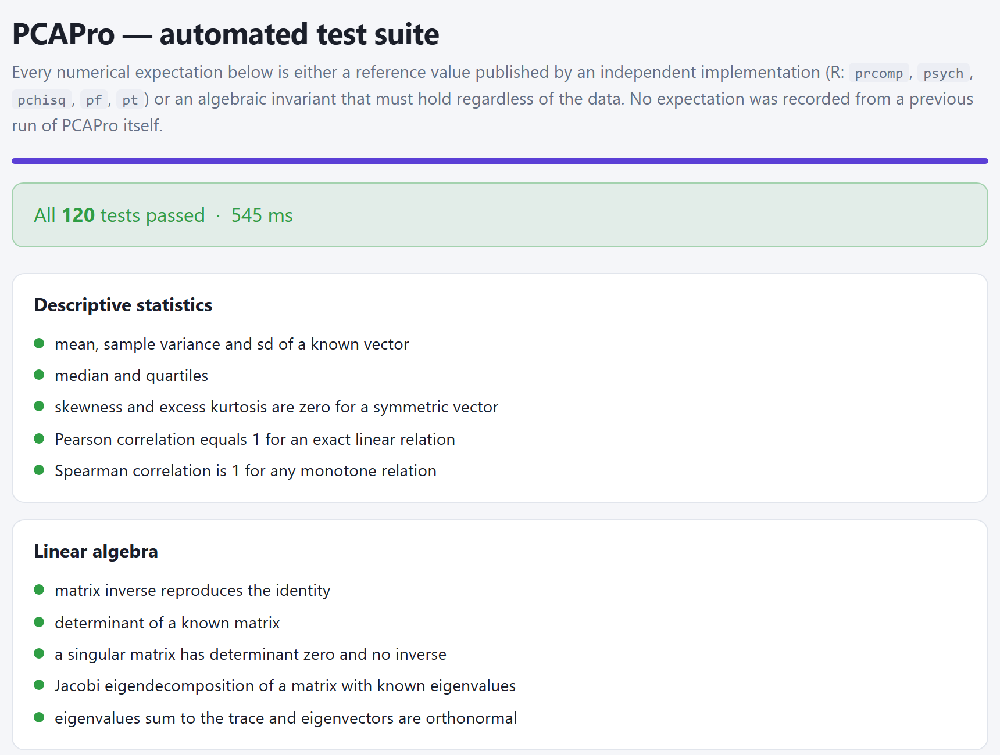
Figura E.1. La página tests/index.html al terminar: el recuadro verde con las 120 pruebas aprobadas y el tiempo, y debajo cada conjunto con sus pruebas. Una prueba fallida aparecería marcada, con el mensaje que explica la diferencia.
Tabla E.1. Los 19 conjuntos de pruebas, en el orden de la página.
Conjunto
Pruebas
Qué comprueba y contra qué
Estadística descriptiva
5
Media, varianza, cuartiles, asimetría, curtosis y correlaciones con vectores de resultado conocido.
Álgebra lineal
5
Inversa, determinante, matriz singular y descomposición de Jacobi: la suma de λ es la traza y los vectores son ortonormales.
Distribuciones de probabilidad
6
Colas de χ², t, F y normal, y la prueba de una correlación, contra pchisq, pt, pf y cor.test de R.
Adecuación muestral (iris)
3
KMO y MSA contra psych::KMO; Bartlett contra psych::cortest.bartlett; distancias de Mahalanobis.
Extracción (iris)
7
Valores propios y puntuaciones contra prcomp; cargas contra psych::principal; bastón roto y MAP.
Rotación
10
Varimax recupera una estructura simple girada a propósito; comunalidades invariantes; patrón, estructura y Φ coherentes; quartimin = oblimin con δ = 0.
Coordenadas y calidad
5
cos² y contribuciones suman lo que deben; elipses y envolvente.
Comparación de grupos
3
ANOVA de un ejemplo calculable a mano y Kruskal-Wallis.
Análisis de correspondencias
11
Inercias principales del ejemplo del tabaquismo de Greenacre (1984): 0.074759, 0.010017 y 0.000414; χ² = 16.4417 con n = 193. Coordenadas de filas y columnas, cos² y contribuciones contra FactoMineR::CA; fórmula de transición y proyección de filas suplementarias.
Correspondencias múltiples
7
La identidad exacta con dos variables, λ = (1 ± √λAC)/2, que también da las coordenadas estándar del AC; cada categoría es el cuasibaricentro de sus individuos; el ajuste de Benzécri recupera los porcentajes del AC.
Núcleo de la SVD generalizada
3
Con pesos uniformes reproduce el ACP; reconstrucción y ortonormalidad.
Datos mixtos (AFDM)
7
Solo cuantitativas: es el ACP; solo cualitativas: es el ACM; inercia total p + J − Q. Con iris, coordenadas, cos² y contribuciones contra FactoMineR::FAMD; lo que se reporta es lo que se dibuja.
Factorial múltiple (AFM)
5
Ningún bloque aporta más de 1 al primer eje; duplicar un bloque duplica los λ; RV simétrico en [0, 1].
Agrupamiento (HCPC)
10
Alturas de Ward crecientes; la inercia se descompone; la consolidación no empeora; en iris encuentra los dos grupos reales.
Dendrograma
6
Árbol de 2n − 1 nodos, sin inversiones, con grupos contiguos y la línea de corte en su lugar.
Recomendador de método
11
Escenarios con respuesta conocida por construcción; cada aviso lleva una cifra.
Lectura de archivos
6
Comillas, separador punto y coma, renglones vacíos, CRLF, tipificación y códigos de faltante.
Exportación
3
CRC32 contra su valor canónico, el ZIP se abre y verifica, comillas en el CSV.
Figuras
7
SVG bien formado, escalas de letra, contraste de color y paletas completas.
E.2 Cómo ejecutarlas
En el navegador. Con la app servida por servidor.ps1, abre http://localhost:8790/tests/index.html. Las pruebas corren solas en unos segundos y el recuadro superior dice cuántas pasaron.
En la línea de comandos, con navegador sin ventana. Con Node.js y Playwright instalados y el servidor en marcha, node tests/run-tests.mjs abre la misma página, espera el resultado y termina con código 1 si alguna falla. Es la comprobación que corre la integración continua del repositorio en cada cambio, junto con el paso siguiente.
Sin navegador.node lib/reproduce-iris.js carga el mismo motor numérico de la app como módulo de Node, repite el ACP de iris y compara 15 valores con R. No necesita servidor ni Playwright.
Salida denode lib/reproduce-iris.js · extracto
iris: 150 observaciones × 4 variables activas
valor PCAPro referencia
✔ λ1 (R: prcomp) 2.918498 2.918498
✔ λ2 (R: prcomp) 0.914030 0.914030
✔ λ3 (R: prcomp) 0.146757 0.146757
✔ λ4 (R: prcomp) 0.020715 0.020715
✔ KMO global (R: psych::KMO) 0.540077 0.540000
✔ MSA Sepal.Width 0.269575 0.270000
✔ Bartlett χ² 706.959243 706.959300
✔ |carga| Petal.Length en CP1 0.991555 0.991600
…
Todos los valores coinciden con implementaciones independientes.
La tolerancia de cada comparación es la precisión con que R publica la referencia: 10−5 para los valores propios, que R imprime con seis decimales, y 10−3 para el KMO y las cargas, que se imprimen con tres o cuatro. Exigir más sería exigir acuerdo con un redondeo.
E.3 Reproducir los resultados en R
El código siguiente, con los paquetes psych, FactoMineR y GPArotation, da los valores de referencia de iris y del tabaquismo. Se ejecutó con R 4.4.2, y la tabla E.2 compara su salida con la de PCAPro 1.1.0.
Guion de R
X <- iris[, 1:4]
acp <- prcomp(X, scale. = TRUE)
acp$sdev^2 # valores propios
cor(X, acp$x)[, 1] # cargas en CP1
head(acp$x[, 1], 3) # puntuaciones de los tres primeros individuos
library(psych)
KMO(X) # KMO global y MSA
cortest.bartlett(cor(X), n = 150) # prueba de esfericidad
library(FactoMineR)
res <- PCA(X, graph = FALSE)
res$var$contrib[, 1:2]; res$var$cos2[, 1:2]
library(GPArotation)
L <- cor(X, acp$x)[, 1:2]
GPForth(L, method = "varimax", normalize = TRUE)$loadings
Guion de R · análisis de correspondencias del tabaquismo (Greenacre, 1984)
Tabla E.2. PCAPro frente a R con iris (ACP sobre correlaciones) y con la tabla del tabaquismo (AC). Los signos de los ejes pueden diferir; se comparan valores absolutos.
Resultado
R
PCAPro
λ1 · λ2 · λ3 · λ4 (prcomp)
2.918498 · 0.914030 · 0.146757 · 0.020715
iguales a 6 decimales
✔
Cargas en CP1 (cor)
.8902 · −.4601 · .9916 · .9650
.8902 · −.4601 · .9916 · .9650
✔
Puntuaciones de los individuos 1–3 en CP1
−2.257141 · −2.074013 · −2.356335
−2.257141 · −2.074013 · −2.356335
✔
KMO global · MSA (psych)
.540077 · .584060 · .269575 · .530748 · .634207
iguales a 6 decimales
✔
Bartlett: χ² · gl · determinante
706.9592 · 6 · 0.0081096
706.9592 · 6 · 0.0081096
✔
Contribuciones a Dim1 (FactoMineR)
27.15 · 7.25 · 33.69 · 31.91
27.15 · 7.25 · 33.69 · 31.91
✔
Varimax con k = 2, primera columna (GPArotation)
.9594 · −.1425 · .9436 · .9319
.9594 · −.1425 · .9436 · .9319
✔
AC del tabaquismo: coordenadas de SM, JM, SE en Dim1 (FactoMineR::CA)
|.0658| · |.2590| · |.3806|
|.0658| · |.2590| · |.3806|
✔
AC del tabaquismo: coordenadas de none, light, medium, heavy en Dim1 (FactoMineR::CA)
|.3933| · |.0995| · |.1963| · |.2938|
|.3933| · |.0995| · |.1963| · |.2938|
✔
!Importante · corrección posterior a la versión 1.1.0
En PCAPro 1.1.0 las coordenadas de las columnas del AC, y las de las categorías del ACM, salían multiplicadas por la masa de cada columna: con el tabaquismo, none quedaba en |.1243| en lugar de |.3933|, y el mapa acercaba las columnas al origen. En el AFDM, la tarjeta 2.5, el informe y el paquete ZIP daban para cada categoría una coordenada y un cos² que no eran los del punto dibujado en el mapa: con iris, setosa en −0.765 en lugar de −2.606. Valores propios, filas e individuos y contribuciones eran correctos en los tres métodos. Lo corrige la versión publicada en GitHub el 16 de septiembre de 2026, que da la última fila de la tabla E.2; las nueve pruebas que se añadieron con ella ya cuentan en la tabla E.1. Con resultados de la 1.1.0, repite el análisis; en el AC y el ACM basta dividir cada coordenada de columna entre su masa, la proporción de esa columna en el total.
iNota · cuatro diferencias de convención que no son errores
Coordenadas de los individuos en FactoMineR.PCA() estandariza dividiendo entre n y no entre n − 1, así que sus coordenadas son las de PCAPro y prcomp multiplicadas por √(n/(n − 1)): −2.2647 en lugar de −2.2571 con iris. Valores propios, cargas, cos² y contribuciones coinciden.
stats::varimax. Se detiene con una tolerancia holgada y da .9593 · −.1446 · .9442 · .9324. PCAPro sigue hasta el máximo del criterio, como GPArotation.
Número de grupos de HCPC. FactoMineR sugiere un corte con al menos tres grupos por omisión (min = 3) y con iris propone 50/53/47; PCAPro considera desde dos y sus reglas eligen dos (sección 8.6). Aun con tres grupos, las particiones pueden no coincidir, porque dependen de cuántos ejes se usen.
Análisis paralelo. Depende de números aleatorios en cualquier programa: el percentil 95 varía en la última cifra entre corridas y entre programas.
FReferencias
Las fuentes de los métodos que implementa PCAPro y de las reglas citadas en el manual. Las marcadas con ◆ aparecen en la sección Referencias metodológicas del informe (sección 9.2).
F.1 Métodos
Anderson, T. W. (1963). Asymptotic theory for principal component analysis. The Annals of Mathematical Statistics, 34(1), 122–148. doi:10.1214/aoms/1177704248
◆ Bartlett, M. S. (1950). Tests of significance in factor analysis. British Journal of Statistical Psychology, 3(2), 77–85. doi:10.1111/j.2044-8317.1950.tb00285.x
Benzécri, J.-P. (1979). Sur le calcul des taux d’inertie dans l’analyse d’un questionnaire. Les Cahiers de l’Analyse des Données, 4(3), 377–378.
Bernaards, C. A. y Jennrich, R. I. (2005). Gradient projection algorithms and software for arbitrary rotation criteria in factor analysis. Educational and Psychological Measurement, 65(5), 676–696. doi:10.1177/0013164404272507
Carroll, J. B. (1953). An analytical solution for approximating simple structure in factor analysis. Psychometrika, 18(1), 23–38. doi:10.1007/BF02289025
◆ Cattell, R. B. (1966). The scree test for the number of factors. Multivariate Behavioral Research, 1(2), 245–276. doi:10.1207/s15327906mbr0102_10
Crawford, C. B. y Ferguson, G. A. (1970). A general rotation criterion and its use in orthogonal rotation. Psychometrika, 35(3), 321–332. doi:10.1007/BF02310792
Cramér, H. (1946). Mathematical Methods of Statistics. Princeton University Press.
Escofier, B. y Pagès, J. (1994). Multiple factor analysis (AFMULT package). Computational Statistics & Data Analysis, 18(1), 121–140. doi:10.1016/0167-9473(94)90135-X
Frontier, S. (1976). Étude de la décroissance des valeurs propres dans une analyse en composantes principales: comparaison avec le modèle du bâton brisé. Journal of Experimental Marine Biology and Ecology, 25(1), 67–75. doi:10.1016/0022-0981(76)90076-9
Gabriel, K. R. (1971). The biplot graphic display of matrices with application to principal component analysis. Biometrika, 58(3), 453–467. doi:10.1093/biomet/58.3.453
Glorfeld, L. W. (1995). An improvement on Horn’s parallel analysis methodology for selecting the correct number of factors to retain. Educational and Psychological Measurement, 55(3), 377–393. doi:10.1177/0013164495055003002
Greenacre, M. J. (1984). Theory and Applications of Correspondence Analysis. Academic Press.
Greenacre, M. (2017). Correspondence Analysis in Practice (3.ª ed.). Chapman & Hall/CRC.
◆ Hendrickson, A. E. y White, P. O. (1964). Promax: a quick method for rotation to oblique simple structure. British Journal of Statistical Psychology, 17(1), 65–70. doi:10.1111/j.2044-8317.1964.tb00244.x
Hofmann, R. J. (1978). Complexity and simplicity as objective indices descriptive of factor solutions. Multivariate Behavioral Research, 13(2), 247–250. doi:10.1207/s15327906mbr1302_9
◆ Horn, J. L. (1965). A rationale and test for the number of factors in factor analysis. Psychometrika, 30(2), 179–185. doi:10.1007/BF02289447
◆ Hotelling, H. (1933). Analysis of a complex of statistical variables into principal components. Journal of Educational Psychology, 24(6), 417–441. doi:10.1037/h0071325
◆ Husson, F., Josse, J. y Pagès, J. (2010). Principal component methods – hierarchical clustering – partitional clustering: why would we need to choose for visualizing data? Informe técnico, Agrocampus Ouest.
◆ Jennrich, R. I. (2001). A simple general procedure for orthogonal rotation. Psychometrika, 66(2), 289–306. doi:10.1007/BF02294840
◆ Jennrich, R. I. (2002). A simple general method for oblique rotation. Psychometrika, 67(1), 7–20. doi:10.1007/BF02294706
Jennrich, R. I. y Sampson, P. F. (1966). Rotation for simple loadings. Psychometrika, 31(3), 313–323. doi:10.1007/BF02289465
Jolliffe, I. T. (1972). Discarding variables in a principal component analysis. I: Artificial data. Journal of the Royal Statistical Society, Series C (Applied Statistics), 21(2), 160–173. doi:10.2307/2346488
◆ Jolliffe, I. T. (2002). Principal Component Analysis (2.ª ed.). Springer. doi:10.1007/b98835
Jolliffe, I. T. y Cadima, J. (2016). Principal component analysis: a review and recent developments. Philosophical Transactions of the Royal Society A, 374(2065), 20150202. doi:10.1098/rsta.2015.0202
◆ Kaiser, H. F. (1958). The varimax criterion for analytic rotation in factor analysis. Psychometrika, 23(3), 187–200. doi:10.1007/BF02289233
Kaiser, H. F. (1960). The application of electronic computers to factor analysis. Educational and Psychological Measurement, 20(1), 141–151. doi:10.1177/001316446002000116
Kaiser, H. F. (1974). An index of factorial simplicity. Psychometrika, 39(1), 31–36. doi:10.1007/BF02291575
Kruskal, W. H. y Wallis, W. A. (1952). Use of ranks in one-criterion variance analysis. Journal of the American Statistical Association, 47(260), 583–621. doi:10.1080/01621459.1952.10483441
◆ Lebart, L., Morineau, A. y Piron, M. (1995). Statistique exploratoire multidimensionnelle. Dunod.
MacCallum, R. C., Widaman, K. F., Zhang, S. y Hong, S. (1999). Sample size in factor analysis. Psychological Methods, 4(1), 84–99. doi:10.1037/1082-989X.4.1.84
Mahalanobis, P. C. (1936). On the generalised distance in statistics. Proceedings of the National Institute of Sciences of India, 2(1), 49–55.
Pagès, J. (2004). Analyse factorielle de données mixtes. Revue de Statistique Appliquée, 52(4), 93–111.
◆ Pearson, K. (1901). On lines and planes of closest fit to systems of points in space. The London, Edinburgh, and Dublin Philosophical Magazine and Journal of Science, 2(11), 559–572. doi:10.1080/14786440109462720
Robert, P. y Escoufier, Y. (1976). A unifying tool for linear multivariate statistical methods: the RV-coefficient. Journal of the Royal Statistical Society, Series C (Applied Statistics), 25(3), 257–265. doi:10.2307/2347233
Rousseeuw, P. J. (1987). Silhouettes: a graphical aid to the interpretation and validation of cluster analysis. Journal of Computational and Applied Mathematics, 20, 53–65. doi:10.1016/0377-0427(87)90125-7
Thurstone, L. L. (1947). Multiple-Factor Analysis. University of Chicago Press.
◆ Velicer, W. F. (1976). Determining the number of components from the matrix of partial correlations. Psychometrika, 41(3), 321–327. doi:10.1007/BF02293557
Velicer, W. F., Eaton, C. A. y Fava, J. L. (2000). Construct explication through factor or component analysis: a review and evaluation of alternative procedures for determining the number of factors or components. En R. D. Goffin y E. Helmes (Eds.), Problems and Solutions in Human Assessment (pp. 41–71). Kluwer.
◆ Ward, J. H. (1963). Hierarchical grouping to optimize an objective function. Journal of the American Statistical Association, 58(301), 236–244. doi:10.1080/01621459.1963.10500845
F.2 Datos, programas y guías
Barrera-Guzmán, L. Á. (2026). PCAPro: an offline, browser-based platform for guided principal component analysis (versión 1.1.0) [software]. Zenodo. doi:10.5281/zenodo.22649709
Fisher, R. A. (1936). The use of multiple measurements in taxonomic problems. Annals of Eugenics, 7(2), 179–188. doi:10.1111/j.1469-1809.1936.tb02137.x
Greenacre, M., Groenen, P. J. F., Hastie, T., D’Enza, A. I., Markos, A. y Tuzhilina, E. (2022). Principal component analysis. Nature Reviews Methods Primers, 2, 100. doi:10.1038/s43586-022-00184-w
◆ Kassambara, A. (2017). Practical Guide to Principal Component Methods in R. STHDA.
Lê, S., Josse, J. y Husson, F. (2008). FactoMineR: an R package for multivariate analysis. Journal of Statistical Software, 25(1), 1–18. doi:10.18637/jss.v025.i01
R Core Team (2026). R: A Language and Environment for Statistical Computing. R Foundation for Statistical Computing, Viena.
Revelle, W. (2024). psych: Procedures for Psychological, Psychometric, and Personality Research [paquete de R]. Northwestern University.
 1
2
3
4
5
6
7
8
9
1
2
3
4
5
6
7
8
9
 1
2
3
4
5
6
1
2
3
4
5
6
 1
2
3
4
5
1
2
3
4
5

 1
2
3
4
5
6
1
2
3
4
5
6
 1
2
3
4
1
2
3
4